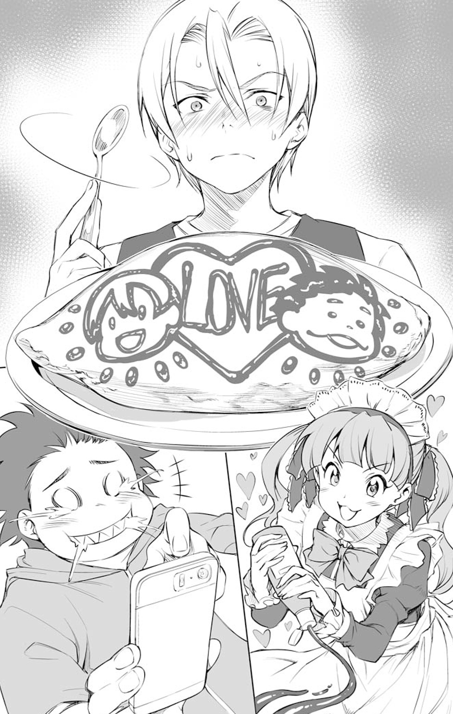

| 食戟のソーマ ～à la carte～ I 失われたルセット | |
| 附田祐斗 & 佐伯俊 & 伊藤美智子 & 森崎友紀 | |
この本は縦書きでレイアウトされています。
また、ご覧になる機種により、表示の差が認められることがあります。
食戟のソーマ〜à la carte〜 Ⅰ
Contents
番外編『マジカル☆キャベツ』
★この作品はフィクションです。実在の人物・団体・事件などには、いっさい関係ありません。
田所恵は浮かれていた。
極星寮のロビーでソファに座り、恵は傍らに置かれたレトロなトランクのふたを開ける。テーブルの上にはきちんと畳まれた洋服、歯ブラシ、ボディソープ、タオルなど、旅行に出かけるための準備ができている。
「他にいる物ってあるかな？ お菓子もこれだけで足りるかな？」
持ち物チェックリストにマークをしながら、恵は「うーん」と首をかしげる。
梅雨入り前のこの時期、恵が通う「遠月茶寮料理學園」は連休となる。その連休初日である明日から、彼女が所属する部活「郷土料理研究会」の合宿が始まるのだ。
「入部して初めての合宿だもんね。楽しみだな～！」
父からもらった年季の入ったトランクに、丁寧に小物を詰めていく。
「おー、田所！ どこ行くの？ 旅行？」
同じ寮に住んでいる幸平創真と、二人の先輩である一色慧が、恵のそばへと歩いてくる。農作業を終えた一色は、ふんどし姿だ。
「郷土料理研究会の活動なの」
一色のふんどし姿はいつものことなので華麗にスルーし、恵は笑顔で二人に答える。
「いろんな地方の食材や調味料を調べてくる予定なんだー」
「へー！ 面白そうだなー。一色先輩はどうするんすか？」
「僕は極星畑の仕事があるからね。吉野くんも動物たちの世話で残るそうだよ」
「連休かぁ......。そうだ、俺も編入以来帰ってないし、久しぶりに実家へ帰ろ！ そうすっか！ じゃあまたな、田所！」
「創真くんもいい連休を」
「サンキュ！」
さわやかな笑顔を恵に向け、幸平は寮の階段をのぼっていった。恵が笑顔で手を振り、幸平を見送ると、残った一色がぽつりと言った。
「それにしても、田所ちゃんは大胆だね」
「え、何がですか？」
「旅行の支度をこんなところでするなんて。荷物、みんなに見られちゃうのに。普通は自分の部屋でするでしょ？」
「はっ！ えっ！ へっ！」
恵はそこで初めて、自分が寮のロビーという公衆の面前で旅行の支度をしていたことに気づき、真っ赤になる。
「あああっ、ご、ごれは、忘れ物すっといげねと思って......」
恥ずかしさのあまり、思わずお国言葉が出てしまう恵に、一色はにっこり微笑む。
「いや、わかるよ。時にはプライベートを人に晒し、己の仮面を脱ぎ捨てたいこともある。僕もときどき、何もかも脱ぎ去ってしまいたい瞬間があるよ。ハハハハ！」
「そ、そうですか......」
言っている内容はさほどさわやかではないが、笑顔はとびきりさわやかな一色に、恵もとりあえず同意する。
「まあともあれ、明日からの合宿、楽しみだね。どこ行くの？」
「長野です。みんなで伊那地方の郷土料理を研究しようってことになって......」
「伊那地方って、たしかおやきとか、ソースカツ丼もそうだっけ？」
「他にも馬肉料理や、いなご、蜂の子なんかもあるんですけど」
「へぇ、面白そうだね」
「はい。だから明日は絶対に寝坊できなくて」
「だから、あたしたちが起こしてあげるんですよ、先輩」
恵と一色が声の方を見ると、ジャージ姿の吉野悠姫と、榊涼子が現われる。悠姫は鶏たちの世話を、涼子は麹の様子を見て帰ってきたところなのだろう。二人とも、恵と仲のよい同級生であり、極星寮の寮生だ。
「吉野くんと榊くんの方が寝坊しそうだけどね」
「失礼な。そんなことありませんよ」
一色のツッコミに、悠姫がむくれて反論する。涼子が恵に、穏やかに尋ねる。
「恵、明日、五時でいいんだっけ？」
「うん」
「でも、なんでそんなに早く？ 集合時間が早いのかな？」
「いえ、お弁当作るんです。みんなに食べてもらおうと思って」
「え、食べ歩きに行くのに、お弁当作るの!?」
「朝食用にと思って。それに、もしお店が閉まってたりして、何も食べられなかったらお腹空いちゃうかなと思って」
悠姫のツッコミに、恵はニッコリと微笑みかける。
「さすが田所ちゃん。優しいね。......うん、それなら僕も起こしてあげるよ」
「ホントですか！ ありがとうございます。よろしくお願いします！」
「よし、じゃ、明日に備えて寝るか～！」
「悠姫、まだ早いって」
「みんな、ありがとう」
恵はペコッと律儀に三人に頭を下げると、ニコッと嬉しそうに微笑んだ。
翌日、恵は寝坊しなかった。正確に言えば、寝坊しないかと緊張するあまり、ほとんど眠れなかった。それに加えて一色も悠姫も涼子も、みんな代わる代わる恵の部屋にやって来て、朝を知らせてくれた。そのお陰で、無事、弁当を作ることもできた。
恵が寮を出るとき、一色をはじめとする寮生たちが玄関まで出てきてくれた。残念ながら幸平はもう実家に帰ってしまった後だったが、同級生の伊武崎峻も見送りに参加している。みんなの親切が嬉しくて、恵はこんなとき「寮にいてよかったな」と思う。
「いってらっしゃーい！」
「田所ちゃーん、カムバーック！」
「先輩、まだ出かけてませんから」
「恵、気をつけてね」
「うんっ、いってきます！」
恵は元気よく挨拶をすると、肩掛けバッグを斜めにかけ、トランクを片手に集合場所の新宿駅西口へと向かう。
郷土料理研究会の主な活動は、本で郷土料理の知識を得て、そこから名物を実際に作ることだ。だがその際、座学の知識だけでは偏ってしまう。そのため長い休みが取れるときは、こうやって部員たちみんなで郷土料理を食べ歩くのだ。
「名物にうまいものなし」という諺もあるが、食べてみなくてはわからない。実際にその土地へ赴き、空気を吸い、地元の人と触れあったりすることで、郷土料理の奥深さをさらに学ぶことができる。
これからの旅行に思いを馳せると、足取りは自然と軽やかになる。恵にとって初めての長野は、どんな旅になるのだろうか――？
田所恵は、首をかしげる。
おかしい、と、改札前でしきりに腕時計を確認する。集合時間の八時五分前になっても、いっこうに他の部員が来る様子がない。
ラッシュの人混みから、部員を捜し出そうとするが見当たらない。大勢の人が恵の前を通り過ぎていく。
時間を間違えたのだろうか？ 恵は、先輩からもらったプリントをバッグから取り出し、チェックしてみる。やはり集合時間は八時になっている。
だが次の瞬間、恵は「！」と驚き、改めてプリントに顔を近づける。
「集合場所：新宿駅西口 高速バス乗り場」
プリントには、そう書かれていたのだ。
「こ、高速バス乗り場！」
そこで初めて恵は、集合場所が違っていることに気づく。てっきり電車で行くと思いこんでいたが、実はバスでの移動だったのだ。
「あわわ、どうしようどうしよう......と、とにかく先輩に連絡を......！」
恵は慌てて、この間機種変更したばかりのスマートフォンを取り出そうとするが、つるっと手を滑らせてしまった。
「あっ！」
ガッシャン、と、激しい音を立てて、スマートフォンは床に落ちてしまう。泡を食いながら拾い上げると画面が真っ黒になっている。
嫌な予感がする、と思いながら、恵は電源を入れてみる。だが、うんともすんとも言わない。どうやら落としたショックで壊れてしまったらしい。
「う、うそ......！」
スマートフォンを持ったまま、恵はオロオロとうろたえている。
どうしよう。こんなときどうすれば――そうだ、とにかく集合場所に行かなくちゃ。
恵は辺りを見回し、改札で高速バスの乗り場を尋ねると、慌てて走りだす。集合場所にたどり着き、走りながら伊那市行きのバスを探す。
だが、やっと見つけたと思った瞬間、エンジンの音を立てながら、バスは出発してしまった。
「ああ......行っちゃった......」
恵はがっくりと肩を落とす。集合場所を勘違いしていたのも、スマホを落としてしまったのも、すべて自分の不注意だ。
やっぱり私はダメな子なんだ。
うつむいた顔から、はぁ、とため息がこぼれる。
恵はこれまで――遠月学園で行われた宿泊研修から帰るまで、自分自身の料理に、そして自分自身に、自信を持つことができずにいた。
学園での成績は最下位。
良くも悪くも、点数で自分の料理が測られる環境の中で、恵の心はどんどん自信を失っていく。料理の世界は厳しく、甘ったれた気持ちではやっていけないことはよくわかっている。しかしそれが故に、自分の能力が否定されれば、何を支えに、何をよりどころにしてやっていけばいいのか、時に見失うことがある。
それが幸平創真の言葉で、少しだけ変われたのだ。
「料理ってのは、皿の上に自分のぜんぶを載っけることだ」
「余計な事は考えんな。田所らしい料理を作りゃいい！」
学園のＯＢ、四宮小次郎と、自身の退学をかけて対決することになったときに、幸平が恵に言ってくれた言葉だ。
自分らしく、自分にできることを。
そう思い、行く前はあんなに不安だった宿泊研修を乗り切ることができた。学園を退学になりそうになったときにも、なんとか四宮と引き分け、そのまま残ることができたのだ。
少しだけ、自分でもやればできる、そう思っていた。
しかし、考えてみればそれも全部、創真くんの力だ――。
恵の心は、不意にもやっとした何かに覆われ、曇ってくる。
シャペル先生の授業も、乾先輩の課題も、そして四宮先輩との対決も、みんな創真くんが助けてくれたから、できたことなんだ。私の力じゃない。
私なんて――。
「ストップ！」
ハッと恵は顔を上げる。一瞬、幸平創真の声が聞こえた気がして、辺りを見回す。
目の前で誘導員が、観光バスがバックしてくるのを「ストップ、ストップ」と止めている。恵の勘違いだった。
「なーんだ」
ふぅ、と恵は息をつく。しかし、なぜか心が少し軽くなる。
そうだ。創真くんがこんな私を見たら「それ以上、悪く考えるのはストップ」って言うよね。創真くんはピンチに立たされても、いつも自分ができる最善のことを考えてる。私にだって、今できることがあるはずだよ。
私に今できる、最善のこと――頑張って、ひとりで、伊那に行ってみよう。
まず、恵は公衆電話から極星寮に電話をすることにした。寮母である大御堂ふみ緒が電話に出る。
「まったく、何やってんのあんたは！ 先輩たちから、あんたが集合場所に来ないからって電話がかかってきたんだよ」
「ひゃっ、す、すみません......！」
ふみ緒の剣幕に、恵は一瞬たじろぐ。
「とりあえず、私の方から、先に行けって言っておいたけど......。あんたも早く追っかけな。ひとまず行程表通りに行動するから、もし来るなら、それを頼りに合流してくれって」
「行程表......」
恵は持っていたプリントを見つめる。確かに、郷土料理を巡る順番が書いてあった。先輩たちはこの通りに動くということらしい。
「ありがとうございます！ 行ってきます！」
ふみ緒に丁寧にお礼を言うと、電話を切った。
時刻表を調べると、次のバスまでにはかなり時間が空いてしまうため、恵は電車で伊那まで行くことにした。駅の窓口へ行き、係員に伊那までの行き方を尋ねる。
恵を可哀相だと思ったのか、ラッシュの忙しい時間であったにもかかわらず、係員は事細かに教えてくれた。恵は自覚していなかったが、恵の柔らかい雰囲気が、人の親切を呼びこむことも往々にしてある。
伊那まで電車で行くには、特急と各駅停車を乗り継いで、三時間余りかかるそうだ。
恵は係員にお礼を告げ、特急券を買い、伊那に向かった。
「ちょっと高くついちゃったけど......しかたねぇべさ」
トランクを脇に置き、座席に座って窓の外を見つめる恵は、ふっと息をつく。
係員の話によれば、高速バスも電車も、移動時間はさほど変わらないらしい。しかも商売敵であるにもかかわらず、運賃は高速バスの方が安い、と親切に教えてくれた。
小遣いが少し減ってしまうのも仕方ない。
それより先輩たちにこれ以上迷惑をかけないよう、自分でなんとかしなくちゃ。
恵は、斜め掛けバッグの中から、本とメモ帳を取り出す。これから特急で、約二時間の乗車となる。ひとりでぼんやりしているのももったいないため、郷土料理について、おさらいしておこうと、ペラペラと本をめくっていく。
郷土料理を集めたその本の、長野県のページを開くと、恵は熱心に読み始める。ソースカツ丼やおやきなど、さまざまな名物が並ぶ中、「ローメン」という単語が目に留まった。
伊那名物「ローメン」。
昭和三十年ごろ生まれた料理で、東京・横浜で修業した料理人が、伊那の中華料理店で開発したメニューだ。
当時は冷蔵庫がなく、仕入れた麵を保存するために試行錯誤した結果、麵を蒸してみることを思いつく。この発明で、独特の風味と歯ごたえに仕上がったのだが、奇しくも、その後全国で発売された、焼きそば用の蒸し麵と同じ製法だった。
料理人はその蒸し麵に、地元産のキャベツと、当時比較的手に入りやすかった、羊の肉を入れて提供。名前を「炒肉麵」と名づける。だが、後に「チャー」が取れ、単純に「ローメン」と呼ばれるようになった。
これが意外にも酒のつまみにぴったりだったこともあり、人気が高まって、周辺の店へ広まっていく。現在では、地元では誰もが知っている、伊那を代表するローカルフードとなったのである。
「なるほど......やっぱり郷土料理は面白いな」
本を読みながら、恵は、まだ食べたことのない郷土料理に思いを馳せる。
郷土料理にはロマンがある。
南北に長く、方言も地域によって異なる日本は、たくさんの名物がある。古くから地元に即した物もあれば、町おこしのために作られた物もある。だが、そこに住む人々がその土地を愛し、その風土に合っている物を知っているからこそ、その土地でしか食べられない名物が生まれるのだろう。
食べただけで、その土地のことがわかる物、それが名物。
里を離れ、里を思うとき、むしょうに食べたくなる物、それが名物。
恵自身、遠月学園で勉強するために郷里を出てきたことで、地方の名物への思いがひときわ強くなっていることも自覚している。
やっぱり、郷土料理研究会に入ったことは、間違いじゃなかった。
これからも、いろいろ勉強して、いろんな地域の料理に触れていこう。
静かに本を閉じた恵は、そんな想いに胸を熱くする。
電車は一定のリズムを保ちながら、前へ前へと進んでいく。
都心から離れていくにつれ、窓の風景は、高いビルだったものが低い建物や住宅が並ぶようになり、それもまばらになると、だんだんと畑や山の景色が流れるようになる。
太陽はちょうどよい温度で、恵の肩を温めてくれる。
「............」
バサッと、膝の上にのっている本が落ちた。だが、恵は気づかない。
気持ちのよい日差しの中で、恵はいつの間にか眠っていた。
目が覚めたときには、ちょうど特急が岡谷駅に着いたところだった。
「！ しまったっ！」
恵は慌てて床に落ちていた本を拾うと、肩掛けバッグに突っこむ。トランクを摑み立ち上がると、そのまま降車口へと急いだ。
ホームに降りると、恵はぐっと大きく伸びをする。
遠月学園や極星寮にも緑は多いが、長野はとびきり空気がきれいだ。
「えっと、乗り換えは......」
恵は早速、駅員が書いてくれたメモを取り出し見つめる。ここから飯田線に乗れば、伊那市駅まで行けるようだ。
次の電車が出るまであと五分。プリントを見ると、最初は伊那市内で「ソースカツ丼」の店に行くらしい。
早くみんなと合流しないと。
小走りで駆けだしたとき、困った顔をした少年がホームでキョロキョロと辺りを見回しているのに気づいた。
「............」
恵は、少し歩幅を緩めて少年を見る。今にも泣きだしそうだ。
どうしたんだろう？ 迷子だろうか？
少年を横目で見ながら、恵は通り過ぎていく。
どうしよう。乗り継ぎまでもう時間がない。これを逃したら、次の電車は一時間後。先輩たちも私を待ってる。私のせいで、迷惑かけちゃったのに――。
でも、この子、大丈夫かな？ ひとりで心細そうだし、困っている子どもを放っておくなんて――。
だけど、行かなければ先輩たちに迷惑がかかる。
ああ、でも。
どうしよう？ どうすればいいんだべか？
恵の心の中に、『先輩』と書かれたドアと『少年』と書かれたドアが現われ、恵はその前で選べずオロオロしている。こうしている間にも、電車の時間が迫ってくる。早くどちらか決めなくてはならない。
それなら――。
恵はぴたっと立ち止まる。
やっぱり、ひとりで泣いている男の子を放っておくなんてできない！
せめて、私にできることがあるなら、助けてあげたい――。
くるり、と、凜とした表情で振り返ると、恵は少年のそばへと駆け寄った。
「......あの、どうかしたの？」
恵の声に、少年がこちらを見る。少し腰を屈めるようにして、恵は少年の目線に高さを合わせる。小学校低学年ぐらいだろうか？ 少年は虫取り網を手に、スポーツタイプの緑のリュックを背負っている。
「............」
少年は無言で、少し疑うような表情で恵を見ている。きっと、「知らない人にはついていってはいけない」と教えられているのだろう。その心がけは立派だ、と恵は思いつつ、もし迷子なら、少年の心を開いてなんとかしてあげなきゃ、という気持ちも同時に働く。
「迷子なのかな？ 駅員さん呼んでこようか？」
「駅員さん」という言葉に少し安心したのか、少年は静かにうなずく。
「じゃ、ちょっと待ってて」
恵は、少年に極力不安を与えないように笑顔を向けると、改札の駅員を呼びに行った。
改札近くのベンチに座った少年は、恵と駅員にたどたどしく事情を話してくれた。
先生やクラスメートとともに遠足に来たが、ひと駅乗り越してしまったらしい。
担任の携帯番号がわからないというので、駅員は、少年の通う小学校に連絡を入れてくれる。ほどなくして、学校側から担任に連絡が行き、今度は担任から直接、駅に連絡が入った。
「よかった、先生がすぐここまで迎えに来てくれるだに」
「ホント？」
「多分、一時間後にはここに着くで」
「ありがとう、駅員さん」
少年はホッとした表情を駅員に見せる。そして、ベンチの隣に座っている恵に笑いかけてくる。先ほどの警戒心は取れ、子どもらしい表情を見せた。
「ありがとう、おねえちゃん」
「ううん、私は何もしてないから......。ホント、よかったね」
恵も少年に優しく微笑む。
「おねえちゃんは、どこに行くつもりだったの？」
「私？ 私はここで乗り換えて、伊那市駅に行こうと思ってたんだ。そこで待ちあわせしてる人たちと、伊那の郷土料理を食べることになってるの」
「行かなくて大丈夫？」
少年は申し訳なさそうな瞳で、恵を見つめる。子どもながらも心配してくれている気持ちが伝わってきて、恵はその優しさが嬉しくなる。
「大丈夫。次の電車まで、おねえちゃんも時間があるから、一緒に待ってよっか？」
その言葉に、少年は満面の笑みで「うん」と元気よく返事をする。
ベンチに座る恵と少年の間を、風が通り抜けていく。揺れる木々の音に静かに耳を傾けると、急いていた恵の心が、少し落ち着いた。
「おねえちゃん、しりとりしよう！」
「いいよ。......じゃあ、しりとりの『り』」
「りんご！」
「ゴリラ」
「えっと......ら、ら......らじお！」
「ラジオね。『お』......あ、そうだ、『お弁当！』」
少年が「？」と首をかしげる横で、恵は肩にかけていたバッグからお重を取り出す。
「ねぇ、お腹空いてない？ おねえちゃん、今朝、お弁当作ったんだ。もしよかったら食べて」
言いながら恵は、お重にかけられていた唐草模様の風呂敷を、丁寧に開いていく。
カパッと一段目を開けると、形のいいおにぎりが現われる。
「うわ～っ、うまそーっ！ いいの？」
「うん。めしあがれ」
恵が差し出すお重から、少年はひとつおにぎりを取ると、「いっただっきまーす」と元気よく頰張る。
「わぁっ、昆布のつくだに！ チーズも入ってる！」
「遠慮しないでたっくさん食べてね」
恵は、そう言いながら、少年のために水筒のお茶を用意してあげている。
少年が食べている「塩昆布チーズにぎり」は、少し前に極星寮で作ったメニューだ。
「豚肉のニンニク蜂蜜漬けにぎり」に「ねぎ塩だれにぎり」、そして「塩昆布チーズにぎり」の三種類。いずれも、幸平や一色から仕事が丁寧だと褒められ、好評を得た。
このお弁当は、郷土料理研究会の部員のためにと、早起きして作ったものだ。道中で小腹が空いたとき、みんなに食べてもらうつもりだった。
お弁当を作ると恵が言うと、寮のみんなが材料を分けてくれた。すべて、極星寮の畑や農場でとれたものだ。一色が育てた野菜、悠姫が飼っていた鶏の卵、涼子が塩麹で漬けた漬け物――。どれも新鮮でおいしい。みんなが心をこめて作った命の恵みで、このお弁当は出来ている。
おいしいって言ってくれるといいな。
そう思いながら、恵はひと粒ひと粒、心をこめておにぎりを握った。食べる人の姿を想像すると、胸が弾んだ。
そして今、目の前で、そのお弁当を食べてくれる人がいる。
「うわぁ、こっちは肉だ！ うんめぇ～！」
ご飯粒をほっぺにつけている少年が、ニッコリと微笑む。恵も微笑み返すと、ハンカチでそのお米をぬぐってあげる。
やっぱり、誰かがおいしそうに自分の料理を食べてくれるのって嬉しいな、と改めて恵は思う。
料理を出すときには、いつも不安を感じる。
ちょっと塩辛いんじゃないだろうか。甘すぎるかもしれない。変なえぐみや渋みが出ていたらどうしよう。コクが足りなかったりしないだろうか――数えあげればきりがない。
だが、たったひと言「おいしい」と言ってもらうだけで、すべての苦労が報われるのだ。
「おねえちゃん、食べないの？」
「えっ......ああ」
誰かに食べてもらうつもりで作ったお弁当なので、恵は自分で食べることを忘れていた。
「一緒に食べよう。おいしいよ！」
「はい」と、少年が小さな手で握ったおにぎりを、恵の前に差し出す。その仕草がかわいらしくて、恵は笑顔で受け取り、ひと口頰張る。
「んっ」
おいしい。自分で自分を褒めるみたいで変だな、と思わないこともないが、でも文句なしにおいしい。
こうやって青空の下、誰かと食べるおにぎりは格段においしかった。
おにぎりを食べ終わり、ホッとひと息ついたところで、担任の先生が少年を迎えに来た。本当に申し訳なさそうな表情で、担任は何度も頭を下げて謝っている。
「いろいろとありがとうございました。すみませんでした」
「こちらのお嬢さんが、一緒に待っていてくれたんですよ」
駅員の言葉に、恵は恐縮し、慌てて両手を振って否定する。
「い、いえ、私は本当にたいしたことしてなくて。ただ一緒にいただけですから」
「本当にご親切に、ありがとうございました」
「おねえちゃんのおにぎり、すげーうまかったよ！」
ニッと恵に笑いかける少年の前歯には、海苔がくっついている。
「お礼にこれ、あげる」
少年が差し出したのは、持っていた虫取り網だった。
「えっ？」
「じゃーね、おねえちゃん！ バイバイ！」
少年は虫取り網を恵に渡すと、弾むようにその場を去っていく。「走るとまた迷子になるわよ！」とたしなめながら、担任は軽く会釈すると、そのまま少年を追いかけて行った。
残された恵の手には、虫取り網が残った。
「......何に使うだべか？」
網を持ちながら首をかしげている恵に、駅員が声をかける。
「おねえさん、そろそろ伊那方面の電車、来るよ」
「えっ！」
あわわ、そうだった！ 急いで先輩たちに追いつかなきゃいけないんだ。
恵は虫取り網を手にしたまま、ホームへと駆けだした。
岡谷駅を後にし、恵は各駅停車で伊那市駅に到着する。腕時計を見ると、とっくに一時を回っていた。
先輩たちの行き先の手がかりを摑もうと、とりあえず極星寮に電話をかける。すると、今度は悠姫が電話に出た。
「郷土料理研究会の先輩？」
「うん、何か連絡入ってないかと思って......」
「今のところ、特にないよ。......あ、ごめん恵、今ちょっとラーメン作ってて、手が離せないんだ」
「え、ラーメン？」
すると、電話の向こう側ではっきりとは聞こえないものの、誰かの話し声がする。
「あっ、ちょっと伊武崎、たまねぎ切るの待って！ ......そういうわけで、後でかけ直してくれる？」
「ううん、大丈夫。迷惑かけても悪いから、自分でなんとかするよ」
「ごめんね、恵」
「......よくわからないけど、頑張ってね」
「ありがと！ またね！」
勢いよく受話器を置く音がする。恵も息をつき、公衆電話の受話器を置いた。寮は寮で忙しそうだ。
こうなったら、自分でなんとかしなくては。うん。頑張らなきゃ。
恵は手がかりを得るために、行程表を見直す。もうだいぶ時間が過ぎているので、さすがに「ソースカツ丼」の店にはいないだろう。次は、高遠城址の売店にある「おやき」を巡ると書いてある。
「高遠城址公園か......。よし、行ってみよう」
恵はすぐに伊那市駅の駅員に、行き方を尋ねる。高遠駅行きのバスがあり、改札を出てすぐ前のバス停から、一時間に一本バスが出るという。見るとすでにバスが停まっていたため、慌てて乗りこんだ。
高遠城址公園は、高遠城の跡を中心に整備された公園である。高遠城は別名「兜山城」とも呼ばれ、築城は戦国時代と古い。加えて、この公園が有名なのは、その見事な桜樹林である。
「天下第一の桜」と呼ばれ、長野県から天然記念物の指定を受けているほか、日本さくらの会が主催する、「さくら名所１００選」にも選ばれているそうだ。
バスに揺られて二十五分、高遠駅に着くと、そこからまた十五分くらい歩く。途中で、小高い丘が見えてくる。
「この坂、のぼるんだべか......」
上の方へと続く坂道に、恵は思わずため息をつく。だが、もしかしたらまだ、先輩たちがいるかもしれない。
恵は「よし」と気合いを入れると、坂をのぼり始める。
少年からもらった虫取り網の柄を、杖の代わりにして、ゆっくりとのぼっていく。
「ふぅ、意外な使い道があった。あの子に感謝しなきゃ」
ほどなくして、じんわりと、恵の身体が汗ばんでくる。
だが、梅雨入り前だというのに、今日の陽気はとてもすがすがしい。ときおり吹くさわやかな風が恵の額に当たると、一瞬の涼を感じる。夏に向かう日差しは、まるで強い生命力に溢れているかのように、たっぷりと降り注いでいる。
気持ちいいなぁ、と、恵は思わずつぶやく。
子どものころを思い出す。東北地方の田舎で育った恵は、夏になると外でよく遊んだものだ。もっとも、このような舗装された道ではなく、でこぼこした山道を走り回っていたのだが。
料理を作ることも楽しいが、こうやってたまには身体を動かすのもいいものだと感じる。
坂道をのぼりきり、今度は城址への階段をのぼろうとしたとき、自分の前を歩くおばあさんに気がつく。どことなく上品な佇まいではあるが、足腰はあまり強くないのだろう、よろよろと頼りない足取りでのぼっていく。
「............」
この坂をひとりでのぼってきたのだろうか？ それだけでも大変なのに、まださらに階段が続いている。
恵は、意を決すると少し歩調を速め、先を歩くおばあさんに寄っていく。
「あの、よかったら、私につかまってください」
恵は自分の腕を差し出し、にっこり笑いかける。
「えっ、でも......？」
「私は大丈夫です。一緒にのぼりましょう。それから、これ、杖がわりに使ってください」
おばあさんに虫取り網を握らせると、恵はにっこりと微笑む。
「ご親切にありがとう」
「行きますよ。せーの、一、二、一、二......」
小さくかけ声をかけつつ、おばあさんと歩幅を合わせながら、ゆっくりゆっくり、階段をのぼっていく。おばあさんはしっかりと右手につかまっている。左手には少し重いトランク。だが、恵は少しも疲れを感じなかった。
「はーっ、ついたー！」
思わず恵は大きく息を吐き、トランクを地面に置く。少し屈んで息を整えると、おばあさんがハンカチで恵のおでこを拭いてくれた。
「ありがとうございます」
「礼を言うのはわたしの方よ。あなたと、この網のおかげで、楽にのぼれたわ」
おばあさんは嬉しそうに虫取り網を振る。
「私もまさか、こんなことに役に立つとは思ってませんでした」
「本当にありがとう、えっと......」
「田所、恵です」
「恵ちゃん。ありがとうね」
柔らかく微笑むおばあさんの笑顔に、恵の方が癒されるような気持ちになる。
「恵ちゃんは、これからどうするの？」
「ここに、部活の先輩たちが来てるかもしれないんです。郷土料理の研究で、ここのおやきを探しに......」
「この時期に？ 売店は閉まっているわよ」
「えっ！ そうなんですか？」
「ほら、あれ」
おばあさんに促されて見ると、確かにシャッターの閉まった売店がいくつか並んでいる。
「ここは桜の季節がメインだから」
「......そうですか」
少しがっかりしながらも、恵は辺りを見回す。売店のそばで掃き掃除をしているおじさんに気づき、すぐさま駆け寄っていく。
事情を話す恵に、おじさんは首をかしげながら答えてくれる。
「ああ、さっきまで十人ぐらいの若者グループがいたよ。その子たちも、後輩を捜してるって言ってたけど......君のこと？」
「はい、多分そうだと思います！」
「次の場所に行くかどうか相談してて、公園の中に入ってったな。さすがに行っちゃったかもしれんなえ」
「あの、それっていつごろですか？」
「一時間ぐらい前だったな。もしかしたら、まだ公園の中にいるかもしれないから、捜してみなんしょ」
「あ、はい、ありがとうございます！」
おじさんに深々とお辞儀をすると、恵は城址公園へと入っていく。
足早に公園の中を歩き回る。だが、二の丸の辺りを捜しても、先輩たちの姿はない。
もう行ってしまったのだろうか？
さらに一周してみるものの、やはりどこにもそれらしき姿は見当たらなかった。
「こんなとき、スマホがあれば......」
すべては自分のせいだ。
遅刻したのも、スマホを壊したのも、自業自得。それはよくわかっている。
がっくりと肩を落としつぶやくと、恵は本丸の方へと歩いていく。すると目前に、白い稜線が見えてくる。中央アルプスだ。
「うわぁ」
思わず、感嘆の息を漏らす。ところどころ雪をかぶり、横一直線に、並ぶように連なるその山々は美しく、輝くように見える。
「これを見られただけでも、ここに来た甲斐があったかも」
そうつぶやくと、恵は再び入口の方へと戻ってきた。
『天下第一の桜』の碑が建てられている近くで、先ほどのおばあさんが、ビニールシートを敷いて地面に座っている。恵に気づくと、先ほどの優しい笑顔で手を振ってくれる。
「お友だち、見つかった？」
「いえ......あの、何してるんですか？」
「シロツメクサで花輪を作ってるのよ。今の若い子は、こんなの作らないわよね？」
「私も田舎に住んでたころは、よくやってましたよ」
「ふふふ、そう」
おばあさんは器用にシロツメクサを編んでいく。恵もおばあさんの横にお邪魔し、その様子を見つめている。
「ここは、春になるとそれはもうたくさんの桜が咲くんだけど、今は全部、青葉になっちゃったわね」
「でも、気持ちがいいですね」
木々の間をそよいでいく風が、二人の間を通り抜けていく。恵もすぐ脇に咲いているシロツメクサを摘み、一緒に花輪を作り始めた。
「おばあさんは、どうしてここへ？」
「ただの散歩。昔、好きな人とこの公園を歩いたことを思い出して、ふと来てみたくなったのよ」
そう言って、おばあさんは突然、顔を赤らめ、乙女な表情になった。そのとき。ぐぅぅ、とおばあさんのお腹が盛大に鳴った。
「よかったら、どうぞ」
恵は、お重の二段目を開ける。その中には、たまご焼きとタコのウインナー。そして、にんじん、パプリカ、アスパラ、ズッキーニなどをオリーブオイルで軽く炒めたサラダが入っている。
「あら、おいしそう！ ......でも、いいの？」
「もちろんです！」
「ありがとう、じゃあいただくわね」
そう言っておばあさんは、おいしそうにたまご焼きを食べ始める。
「しっかりダシがきいているけど、優しい味ね。ふわふわで」
本当に幸せそうなその顔を見ると、恵も嬉しくなる。
「このたまご焼きは、昔、母が教えてくれたんです」
たまご焼き器は、しっかりと熱して油を引くこと。たまごは隙間をあけて箸をまっすぐ立て、白身を切るようにしっかり混ぜあわせること――。
基本的なことだが、きちんと、丁寧にやるように母に教えられた。それが、おいしさに繫がるのだと。
「恵ちゃんはいいお嫁さんになるわよ、きっと。わたしももう少し料理がうまければ......」
なぜかおばあさんは、はぁ、とため息をつく。きっと長い人生、いろいろあったのだろうな、と恵はなんとなく思ったが、そこはあえて聞かないことにした。
「何もお礼はできないけど......よかったら、この花輪、もらって」
「ありがとうございます」
恵は、おばあさんにもらった花輪を頭にのせて微笑んだ。
おばあさんと別れ、恵は高遠城址を後にした。恵は「杖代わりに使ってほしい」と、虫取り網をおばあさんに譲った。代わりにもらった花輪の中に、ひとつ四つ葉のクローバーを見つける。恵はなんだか嬉しくなり、そのまま頭の上に飾っておいた。
「あ、いげねっ！ 私、急いでるんだった！」
恵は慌てて行程表を見る。この後の目的地は「蜂の子」「行者そば」「馬肉料理」「いなご」、最後は「ローメン」と書かれている。きちんと地名が書かれていたのは、残念ながら「高遠城址」だけだった。おそらく先輩たちも、現地で店を聞きこみしながら行くつもりだったのだろう。
ど、どうすればいいんだべ――。
恵は再び、ずーんと暗い気持ちになる。
これだけしか手がかりがないなんて、追いつけるわけがない。
でも、先輩たちはきっと待っている。迷惑かけたのは私だ。とにかく、気持ちを前向きに持たなくちゃ。
こうなったら、先輩たちがどこに行くかわからない以上、ひとつずつ手がかりを探していくしかない。
「蜂の子？ んなもん、街で採ろうと思えば採れるし、スーパーにも売ってるずら。いなごもざざむしも、簡単に手に入るし、だいじょうだいじょう（大丈夫大丈夫）」
「行者そばの店なら、そこらにいっぱいあるっつらよ」
「この先に行けば、馬肉料理の店あっから、聞いてみなんしょ」
恵は、道で会う人、会う人にそれぞれの郷土料理の有名な店を尋ね、何軒か回っていく。
だが。
「あ、さっき来てくれた子たちかえ。満席で断ったのよ。おやえないね（もうしわけない）」
「今食べて出ていったところさ。次どこに行くかって？ わからんなぁ」
「友だちとはぐれた？ ささらほうさらね（かわいそうね）」
あと一歩というところで、入れ違い、先輩たちと合流することができない。そのうち、先輩たちの情報も得られなくなっていった。
ほうぼう歩いているうちに足が棒のようになり、動かすたびに足の裏から疲れが伝わってくる。空を見上げると、日はもうだいぶ傾いている。同時に焦る気持ちが募る。
日が沈む前に、なんとか先輩たちと合流しなきゃいけないのに――。
山が見える、ということは、市街から少し離れてしまったようだ。
なんとか伊那市駅の方へ戻らなくちゃ。
折れそうになる心を立て直し、再び歩き始める。最後は「ローメン」。これだけは。
田所恵は首をかしげる。本日二度目だ。
おかしい。明らかにおかしい。城址を出てから三時間ほど歩いてきたが、いっこうにそれらしき景色が見あたらない。それどころか、伊那市駅に向かって歩いているはずなのに、どんどん田園風景が広がってくる。
「あーんもう、どういうことだべか！」
半分泣きだしそうな声で、恵は、田んぼのあぜ道でこの理不尽を叫ぶ。
確かに、集合場所を間違えたのは自分が悪い。スマホを壊したのも自分が悪い。
でも、こんなに一生懸命捜しているのに、先輩たちとこうも合流できないのは一体、なぜなのか！
自分で自分が嫌になり、少し、自暴自棄になってくる。
「もぅぅぅ、やんだぁぁっ！」
山に沈む夕日に向かい、恵は大きな声で叫ぶ。すると。
モォォォォウ。
突如、それに呼応するかのように、低い声が響き渡る。
「えっ？」
驚いて振り返ると、畑の中にいた牛が、なぜかこちらに向かって走ってくる。
「えっ！ なんで牛がっ！」
思わず恵は叫ぶ。牛は恵に向かって猛スピードで突進してくる。その勢いに逃げることも忘れ、恵は思わず立ち尽くす。
牛は畑の端すれすれに止まると、今度は恵のスカートの裾を引っ張りだす。そしてこともあろうか、畑に引きこもうとしているのだ。
「ちょ、ちょっとダメだよ。これ、食べ物じゃないから！ あ～ん！」
なんで今このタイミングで牛！
別に赤いスカートをはいてるわけじゃないのに、なんで引っ張るの？
お願い放してぇぇぇ。
いろんな言葉が、恵の頭の中をぐるぐる回っている。
「おぉぉーい」
向こうの方から声がする。牛への警戒を解かないように恵が見ると、作業着姿の中年夫婦がこちらへ走ってくる。
「よかった、ここにいたのかミノリ！ 探したぞ！」
「おねえさん、そのまま、そのままキープ！」
「えっ！」
「ごめんな、今助けてやっから！」
ミノリと呼ばれる牛を、夫婦二人がかりで恵から引き離そうとする。
「あ、あの、ダメです！ これ以上引っ張ると、スカートが！」
「ごめんね、あともう少しで縄をかけられるから、耐えて！」
「そんな、無理です！」
ぐぐっと、スカートがさらに引っ張られる。
ミノリは恵を引きずりこもうとしている。踏ん張りきれず、恵の身体が傾きかける。
その刹那、恵の頭の上にのっていたシロツメクサの花輪が、畑の中へ滑り落ちた。
「あっ！」
恵が声を上げた瞬間、ミノリも「モォォォっ」と鳴き声を上げる。その瞬間、恵は勢いよく地面に尻餅をついた。ミノリの方を見ると、シロツメクサの花輪を、しっかりと口にくわえ、むしゃむしゃと食べている。
「えっ......？」
啞然としている恵に、奥さんが手をさしのべる。
「いやぁ、ごめんねおねえさん、ミノリはシロツメクサが大好きでさ」
「そ、そうなんですか......？」
立ち上がった恵はミノリを見つめる。おばあさんには申し訳ないが、おいしそうに花輪を食べるミノリに、少し親近感が湧く。
「いやぁありがとう。おねえさんのお陰でやっと捕まえることができたずら」
旦那さんが、ミノリの首元をぽんぽんと優しく叩きながら恵に微笑むと、奥さんもそれに同意する。
「本当、ありがとう。助かった」
「いえ、私は何もしてないですから......」
花輪をむしゃむしゃ食べているミノリが、モォ、とひと声鳴いた。
落ち着いたところで、恵は、夫婦に最後の目的地、「ローメン」のお店を探していることを話す。
「ローメンの有名な店っつったら、多分ここだよな？」
夫婦は、トラックから取り出した地図を開いて、恵に見せてくれる。
「だとしたら、ここからだとちょっとあるかもしんねぇな」
「どのぐらいかかりますか？」
「歩くと二時間ぐらいかね」
「えっ！ そんなぁ......」
その言葉に、恵はがっくりと肩を落とす。そろそろ日も沈みかけている。これ以上、知らない土地を歩くのは、心細い。それに、もう歩く自信もない。途方に暮れる、というのは、こういうことを言うのだろうか？
「よかったら、店まで送っていこうか？」
「えっ、ホントですか？」
「どうせそっち方面行くしな」
「ミノリを捕まえてくれたお礼に。ね？」
「はいっ、ありがとうございます！」
恵は、二人の厚意に甘えることにした。荷台にミノリを載せたトラックに乗りこみ、伊那市駅近くの店まで送ってもらえることになった。
トラックの運転席で、夫婦に挟まれながら恵はおとなしく揺られている。
ぼんやりと日の暮れた窓の外を見つめていると、運転しながら奥さんが話し始める。
「ホント、今日は疲れたね。一日ミノリを追いかけてたし」
「ほいだけーど、やっとで日が沈む前に捕まえられてよかった。おねえさん、ありがとなんしょ」
「いえ、私は本当に何もしてないですから」
「あー、お腹すいた。昼ご飯も少なかったしな」
「だな。ミノリ牛舎に入れて帰っとなると、晩ご飯も遅くなるずら」
「あの、それなら......」
恵は、お重の三段目を開ける。そこには――。
「これ、ローストポーク？」
「はい。なんちゃってですけど」
なんちゃってローストポーク――。
これは、幸平創真から教えてもらったレシピである。じゃがいもをほくほくにふかし、それにベーコンを巻きつけてオーブンでじっくり焼き上げる。恵は、初めてこのレシピを聞いたとき、お弁当に合うのではないかと思い、冷めてもおいしくなるよう改良し、お重に入れていた。
「うん、うんまい！」
「じゃがいもが肉汁を吸ってるけど、だからって、冷めても油っぽくないね。もう一個いただき！」
「お前、前見て運転しろって！」
二人は、競うようにしてローストポークを食べている。その様子に、恵も自然と笑顔になる。
やっぱり、誰かがおいしいって言ってくれるのは嬉しい――。
そして。今日は牛肉のメニューにしなくてよかったと、心から思うのだった。
ローメンのお店は、伊那市駅からすぐ近くにあった。店の前で恵がトラックから駆け下りると、ちょうど郷土料理研究会の面々がやってくるところだった。
「先輩たち～っ！ あーよかった！ やっと会えました～！」
「よかった～、やっと恵ちゃんと合流できた」
「田所さん、大丈夫？」
「はい。私が集合場所を間違えたばっかりに......追いかけたんですけど、入れ違いになっちゃって。本当にすみませんでした」
「こちらこそごめんね。会えてよかった！」
「他の郷土料理、全然食べられなかったでしょ？」
「早くローメン、食べよう」
「はいっ！」
そう言うと「ぐ～」と、恵のお腹が突然鳴った。思えば、朝から、少年と食べたおにぎりひとつだけだ。
恵と部員一同が、ローメンの店に向かおうとしたそのとき。
ガラッと扉が開くと、店の主人がのれんをしまい始めた。
「えっ、あ、あの、ローメンは......」
「今日はもうおしまい」
「えっ！」
「どうしてですか？」
不安そうな一同に、店主が申し訳なさそうに答える。
「実は、材料の羊肉がなくなっちまったんだよ。やっぱりローメンと言えば羊だからな」
「そんな......」
「本命だったのに......」
他の部員たちとともに、恵も落胆する。先輩たちと合流できたのは本当によかったが、ここまで来て、ローメンが食べられないなんて。伊那の郷土料理は、何ひとつ、食べられなかったことになる。それは少し、残念だ。
「だったら、ウチの持ってく？」
「えっ？」
後ろから聞こえる声に振り返ると、いつの間にかトラックをおりていた先ほどの奥さんが、笑顔で店主と恵たちを見つめている。
「......あの、どういうことですか？」
きょとんとした表情で恵が尋ねると、トラックの後ろから、クーラーボックスを持った旦那さんが現われる。
「あんまりたくさんはねぇけど、これ、持ってって。羊の肉だ」
ボックスを恵に手渡す。まだ不思議そうな顔をする恵に、奥さんは明るく言う。
「これ、今日の晩ご飯だったけど、もういただいちゃったから、どうぞ。お弁当のお礼」
「えっ、いいんですか？」
「もちろん」
「んで、この子たちにローメン、食べさせてやってくなんしょ」
奥さんと旦那さんは、店主の方を見ると、ニッコリと笑った。
恵は、夫婦に何度も何度もお礼を言い、部員たちとともに、ローメンのお店に入った。
初めて食べるローメンを目の前にし、恵は少しだけ緊張していた。
おかみが運んでくれたローメンは、見た目は汁に入った焼きそばのようだ。だが、麵はもっと太い。キャベツ、キクラゲ、羊の肉がのり、良い香りを放っている。
「これが......ローメン......」
恵は鼻から入る香りから、味を想像してみる。が、結局、食べた方が早いという結論に達する。
「最初にお酢をかけて、好みで一味か七味をかけてね」
部員一同が順番に、お酢を回してかける。恵も、ゆっくりとローメンにお酢をかけた。「お好み」は、なかなか難しい。でも、酢をかけすぎて失敗したら自分の責任、というのは、それはそれで面白い。
それに続き、ソース、ごま油、すり下ろしニンニク、ラー油、そして七味と、好みの分量、言い換えれば適当に、ローメンに調味料をかけていく。
「いっただっきまーすっ！」
部員一同が手を合わせ、ローメンをひと口食べる。
「！」
焼きそばともラーメンとも違う、この独特の味。
羊肉から出た、独特の臭みとだしが麵に絡みうまみとなっている。麵は太くて少し固め。たれには甘みがあり、この甘みがローメンをローメンたらしめている。
「やっぱり羊は独特の味がするね」
「店によっては、豚肉で出すところもあるんだって」
「それはそれでおいしそうだけど、私はやっぱり羊かな。恵ちゃんのお陰で、こうやって食べられることになったんだしね」
「ホントホント。田所さん、ありがとう」
「そんな、私は何も......」
先輩たちに口々にお礼を言われ、恵は耳まで真っ赤になる。
でも、嬉しかった。
思いがけず慌ただしい一日だったけれど、こうして、最後はみんなで、ローメンを食べることができたのだから。
先輩たちはお互いのローメンを食べあっている。それを見ていると、恵は不意に、幸せな気分になる。
おいしい料理は、人を幸せにする。
誰かと一緒に料理を食べるとき、自然と話が弾み、相手のことがもっとわかるような気がして、心から楽しい気分になる。
誰かが作ってくれた料理を食べるとき、相手の気遣いを思うと同時に、自分も幸せな気持ちになる。
誰かのために料理を作るとき、相手の幸せを思うと同時に、自分も心が豊かになる。
私も、もっともっと料理を作って、食べる人を幸せにしたい。
それには、今回のようにもっともっと勉強する必要があると、恵は、心に誓う。
まだまだこれから、頑張らなくちゃ。
料理人、田所恵の旅は、まだまだこれからも続くのだった――。
ぶぉぉぉぉっ！
地をも切り裂くような低い雄叫びが、草木も生えぬだだっ広い荒野に響き渡る。
「くっ、予想以上にでかい獲物ですね！」
「二ガロンはあるかもね。キャベツバードはシャペルのレベルを確認して」
「ＯＫ、ブルー！」
「俺はどうすればいいんだ、レッド」
「............」
レッドは、ピンクのムチムチコスチュームが気になるが、今はそんなことを考えている場合ではない。
「ピ、ピンクは、私とブルーと一緒に、合体技で行きましょう。アシストします」
「了解」
「今日こそ倒すわよ。ムッシュ・シャペル！」
四人がキッと睨みつけるその先には――フランス料理による攻撃を得意とする怪物ムッシュ・シャペルが立ちはだかる。その姿は巨大なたまねぎ型。中央にシャペル本体である顔が埋めこまれている。
レッドは、赤い石が埋めこまれた光るステッキを、ぎゅっと握りしめる。この異世界の正義を守り、困った人々を助けるのが、我々マジカル☆キャベツの役目なのだ！
「うりゃぁぁぁぁっ！」
レッドのかけ声を合図に、ブルー、ピンクも一斉にムッシュ・シャペルに向かっていく。
ぶぉぉぉぉっ！
シャペルは、身体からたまねぎのみじん切りを大量放出。その体液が、レッド、ブルー、ピンクの目にしみる。
「くっ！」
「これを使え！」
瞬間、どこからともなく現われたキャベツ仮面が、上空から人数分の水中メガネを投げつける。
「ありがとうキャベツ仮面！」
一同がしゅたっと一気にメガネを装着。
「早く攻撃しないと、シャペルのパワーがどんどん上がってるぞ」
キャベツバードがレッドたちにピンチを知らせる。
「行くわよぉぉぉっ！」
再びレッド、ブルー、ピンクがシャペルに向かっていく。シャペルは溶解性の体液を容赦なく吐き出すが、レッドとブルーは華麗に避ける。だがそのせいで、運悪くピンクのスカートに、びちゃっと直撃する。スカートの裾が一瞬にして溶けだす。
「ああーん、いやーんっ！」
野太い声を出しながら、恥じらいつつピンクがスカートを押さえる。筋肉はムキムキだ。
「ピンクのパンチラ、誰得！」
「死んでも見たくない！」
「いやーん、恥ずかしいーっ！ こんなんじゃ闘えなーい！」
ピンクはスカートを押さえながら、その場を走って逃げだしてしまう。
「えっ、まさかの敵前逃亡！」
「図体でかいくせになにやってんの！」
「とにかく、ここは撤退だ！」
キャベツ仮面の言葉を合図に、レッド、ブルー、キャベツバードもその場から逃げだす。
ああ、強敵シャペルから逃げてしまったマジカル☆キャベツの運命はどうなってしまうのか！
そして、ピンクのスカートは元に戻るのか！
次回「マジカル☆キャベツ」第四話「ピンクのスランプ」お楽しみに。
（とりあえずつづく）
「ほら兄ちゃん見て見て！ ハハハ、人がゴミのようだー」
「この高さからじゃ、人は見えないだろう。単にそのセリフが言いたかっただけじゃないのか、イサミ......」
先ほどからガラスに顔を潰れるほど押しつけつつ外の景色を見ている双子の弟、イサミ・アルディーニに、タクミ・アルディーニは呆れたようにため息をつく。
東京の新名所、東京スカイツリー――。
六月の平日だというのに、たくさんの人で賑わっている。開業からしばらく経った今でも、観光名所としての人気は衰えることを知らないようだ。
双子の兄弟、タクミとイサミはその「天望回廊」に遊びに来ている。学校は久しぶりの連休で、里帰りする生徒も多いが、タクミとイサミは簡単には帰れない。
イタリアのトスカーナから兄弟で来日し、遠月茶寮料理學園中等部に二年生から編入して二年。母がときどき二人に会いに来るが、二人がイタリアへ帰るのは夏休みや正月休みぐらいだ。そのため、遠月学園が連休になるこの時期は、毎年、二人で日本国内を観光するのが慣例になっている。ちなみに去年は京都へ行った。
「兄ちゃんももっとこっちにおいでよ。あっちに東京タワーが見えるよー」
「まったく、なんでわざわざこんなところに。チケットを買うだけで七十分も並ぶなんて、ありえない」
「土日は五時間かかるんだって。僕が提案しなかったら、兄ちゃん絶対のぼらなかったでしょ？」
「それはまあ......」
「だったら、僕のおかげで貴重な経験ができたわけじゃーん。感謝してよ。おっ、あっちは新宿かなぁー。すごいな！」
都合よく独自の理論を展開すると、イサミはまた嬉しそうに外を眺める。
その様子に、タクミも好奇心から、チラッとガラス張りの窓を覗きこもうとする。
と、ニヤリ。イサミの目がぎらんと光り、タクミを後ろから羽交い締めにしたかと思うと、そのまま前方の窓ガラスへと押しつける。
「お、おい、何をするんだ！」
「こうした方がよく見えると思って。いい眺めでしょ？」
「いいわけないだろ！ 放せ！ 放せイサミ！ オレは、オレは――」
「高いところが苦手なんだぁぁぁ！」
タクミの雄叫びが、スカイツリーの展望室中に響き渡った。
「うー、まだ痛いよ。本気で蹴ることないのにー」
天望回廊から下へ降りて、タクミとイサミはショッピングモールエリアを歩いている。先ほどの仕返しに、タクミはイサミのすねを思いっきり蹴っていた。
「おまえにはこのぐらいやらないと、また同じことをするだろう？」
「だってー、兄ちゃんの慌てる姿、おもしろいんだもん」
イサミは両手を後ろに回しながら、しれっとタクミに笑いかける。
「まったく......」
タクミはまた、軽くため息をつく。だが、イサミの言いたいことはわかっていた。
ここ何年か――タクミがずっとどこか冷めていることに、イサミも気づいていたのだろう。
おそらく、父や叔父が自分たちに来日を勧めたのも、そのせいだろう、とタクミは思っていた。
卓越した技術と料理センスで、タクミは、幼いころからトラットリア「アルディーニ」で腕を鳴らしていた。その評判はトスカーナ中に轟き、大衆料理店でありながらアルディーニは予約の取れない店となる。
同年代で、タクミの上を行く料理人は誰もいない。いや、タクミは父さえも超え始めてしまったことを、少なからず自覚していた。
だからこそ――タクミは冷めてしまったのだ。
トスカーナには、もう心を熱くさせてくれるものは、何もないと。
しかし、やっと見つけた。
あの男――ついこの間行われた宿泊研修で料理対決を挑み、そして引き分けた男。
幸平創真。
オレに「食戟をいずれキミに申しこむ」とまで言わせる男――そんな人物は、今までいなかった。やっと、やっとだ。初めてこのオレを熱くさせる男。
研修から帰ってきてもなお、その気持ちは冷めない。いや、冷めるわけがない。常にメラメラと、タクミの心の中で幸平の存在が燃えているのだ。
「あ、また兄ちゃん幸平のこと考えてるぅ」
その気迫を察したのか、イサミがタクミの頰を、指でつんつんとつつく。
「なっ！ 考えてなんか......！」
「だってメラメラしてるよ。ぶぶぶっ、兄ちゃん、意外とかわいいところあるよねー」
「メ、メラメラなんてしてない！ ......そんなことより土産を探すぞ」
「ああ、イタリアに送るお土産だね。確かに、そろそろ何か送らないと、父さんも母さんもうるさいからなー。おっ！ 兄ちゃん、あれ！」
イサミに引っ張られ、二人は目の前にある店に入る。
「へぇ、食品サンプルか」
タクミはディスプレイされた、ケーキのキーホルダーを手に取る。
アルディーニ兄弟が日本に来て驚いたことのひとつが、この食品サンプルだった。イタリアではメニューを黒板や紙などに書いて、ただ外に張っておくだけだが、日本のレストランでは、どんな料理か見てわかるよう、わざわざ手間をかけて作った食品サンプルを陳列している。
視覚から食欲をそそる効果もあるのだろうが、驚くべきはその精巧さだ。本物そっくりに作られており、その技術には感服せざるを得ない。食に対する美意識の高さが窺える。
だが一方で――食品サンプルは無駄なことなのではないのか、とも思う。
合理的に考えて、食べられない物に時間をかけて技術と労力を費やすことに、果たして意味があるのだろうか、と。
しかし、その一見無駄なことに一生懸命になるのもまた日本文化であり、日本人の特徴でもあることは、タクミも理解している。自分の中にも、その血が半分流れていることも、タクミは好意的に受け止めていた。
イタリアの陽気さ、そして日本の繊細さ。
この二つが融合し、料理の上で表現できれば、もっと素晴らしいものができるに違いない。
「見て見て兄ちゃん！ これ、生ハムだよ」
イサミが嬉しそうに生ハムの形をしたしおりを持ってくる。
「へぇ、よくできてるなぁ、これ」
「この薄さ！ 向こう側が透けて見えてるよ。本物と間違えて調理しないように気をつけなきゃ」
「......って、さすがにそれはないだろ」
「あ、兄ちゃん、ピザ！」
「これもまた、よくできてるな」
次に二人が見つけたのは、ガラスのショーケースに入ったピザのサンプルだった。
食品サンプルでよく見られる「宙に浮くフォーク」のように、ピザのピースがひとつ、宙に浮かんでいる。とろりと溶けるチーズがよく再現されていて、なんとも食欲をそそる。
「うまそー」
「なにっ！ このサンプル十万円もするのか！ オレの作るピザの五十倍の値段だ。こっちは食べられないというのに......！」
じゅるじゅるとよだれを垂らすイサミの横で、ピザのディスプレイを見ながらタクミは文句を言う。だがすぐに、ひとつの考えが浮かんでくる。
「なるほど、食品サンプルか。待てよ......」
タクミは空想する。将来の自分の姿を。
「お願いします、タクミ・アルディーニさん。あなたが作る幻のマルゲリータを、食品サンプルにさせてください！」
「いや、幻のラザーニャを！」
「いいえ、幻のペスカトーレを！」
タクミの前に、たくさんの食品サンプルを作る職人たちが群がっている。誰もが口を揃えて賞賛し、タクミ・アルディーニの料理を、食品サンプルにしたい、と。
「グラッツェ。光栄です。日本のみなさんのお役に立てるなら喜んで」
「さすがタクミさん！」
「ありがとうございます！」
礼を口にする職人たちに、タクミは穏やかに笑ってみせる。その笑顔は自信に満ちあふれている。オレは一流の料理人、タクミ・アルディーニだと。
だが、その状況は脆くも崩れ去る。職人たちが何かに気づいたのだ。
「おっ、見ろ、あれは！」
「ホントだ！ やっぱり彼の料理をサンプルにしよう！」
「さようなら、タクミさん！」
「え、あ、ちょっと！」
職人たちが次々にタクミのもとを去っていく。慌てて、職人たちが走る方に視線を向ける。
そこには。
こちらに背中を向けた男――幸平創真の姿が！
その瞬間、タクミは現実に引き戻される。
「うぅぅ、おのれ幸平め！ オレの邪魔をするヤツは許さない！」
「妄想にまで出てくるなんて、兄ちゃん、ホントに幸平のこと気にしてるんだねー」
拳を握りしめながら悔しがっているタクミに、イサミは呆れたようにため息をつきながら、両手をあげてみせた。
二人はさらにショッピングモールを歩いて回った。
サムライの鎧が飾られた戦国武将のショップや、日本の風呂敷や文房具、雑貨、食品などを売っている店が並んでいる。二人はイタリアへ送るお土産用に、風呂敷と雑貨、缶詰をいくつか購入した。
「たくさん土産も買ったし、さて、そろそろ帰るか」
「なに言ってんの兄ちゃん、東京観光はこれからだよー」
「これからって、どこ行くんだ？」
「そんなの、決まってるよ。東京観光って言ったら、やっぱり......」
ニヤッとイサミが笑った。
「メイド喫茶でーす、お願いしまーす！」
「どうぞ寄っていってくださーい！」
地下鉄を乗り継いで秋葉原の駅におりると、メインストリートにずらっとメイドさんが並び、呼びこみをしている。
「メイドさん......？」
「まさか兄ちゃん、知らなかったの、メイド喫茶？ 二年も日本にいるのにー？」
「料理以外のことはあまり興味がないからな......って、どうしておまえは知っているんだ？ 学園にいる間も、遊びに行く暇なんてなかったはずなのに」
「友だちに聞かれて、いろいろ調べたんだー。イタリアでもテレビで放映したりして、日本のメイド喫茶は有名なんだよ。最近は、外国人観光客もよくメイド喫茶に行くんだって。まあ、僕も知識だけで、実際に入ったことないんだけどねー」
「ふーん」
「じゃ、早速入ってみよう。メイド喫茶」
「えっ！ なんでオレたちがわざわざそんなところに......？」
「なに言ってるんだ兄ちゃん。今じゃメイド喫茶は、立派な日本文化なんだよー」
「日本文化？」
「そうだよ。カラオケとか、コスプレとかと一緒で、その人気は日本だけにとどまらず、メキシコやカナダ、アメリカ、チェコなんかにも店舗が出来るぐらいなんだから！」
いつもの穏やかな口調とは違い、イサミは少し熱っぽく語っている。
「詳しいんだな、イサミ。まさかおまえ、実はオタクだった、とか......？」
「違うよー！ 僕は日本文化が好きなだけ。アンダーもポップもスタンダードも、全部ひっくるめて日本が好きなんだ！ 兄ちゃんにだってあるはずだよ、大和魂！ 僕たちハーフなんだからー」
「......まあ、まったくないこともないが......」
「きっとメイド喫茶の体験は、僕たちの料理に役に立つと思うんだー。ほら、ほら！ アンディアーモ！（行こう！）」
「......料理に役立つことなんてあるのか？」
ボソッとつぶやくタクミにかまうことなく、イサミはずんずん歩いていく。
またもや、イサミ独自の理論に負けた感じがしつつも、タクミはイサミの後についていった。
大通りに面した雑居ビルの二階にあるそのメイド喫茶には、行列ができていた。秋葉原でも人気の店らしい。その中にはイサミが言う通り、チラホラ外国人の姿も見える。
「......また行列か」
「大丈夫。七十分は待たないって」
「そんなに待つならオレは帰るぞ。だいたい、なんでオレがメイド喫茶なんか......」
タクミはまたつぶやいてみる。はっきり言って、メイドに興味はない。
イタリアにいたころ、タクミはモテた。
同年代の少女から年上の女性、果ては性別を超えてデートの誘いを受けたことがある。
だが、誰にも興味が持てなかった。料理以外のことに時間を費やすなど、考えられなかったのだ。それは今日みたいに観光をしていても同じだ。遊んでいる暇があるなら、できるだけ貪欲に、いろいろなことを吸収したい。
だが、ふと「ん？ 待てよ？」と、タクミは思い至る。
見方を変えれば、このメイド喫茶体験も、「吸収する」という意味では、悪いものではないかもしれない。
メイドが給仕するだけで、メイド喫茶も元を正せば同じ飲食店。大いに学ぶべきことはあるかもしれない。イサミの言う通り、色眼鏡で拒絶するのも、幅の狭い考え方なのかもしれない。
タクミが少しメイド喫茶について前向きにとらえようとしたとき、鼻から抜けるような、甲高いメイドの声が聞こえた。
「お待たせしました～、どうぞ～」
結局、三十分ほど待った二人を、メイドは店の中へ案内する。店内は、ごく普通の喫茶店と変わらない感じだ。
「お帰りなさいませ～、ご主人様」
メイド姿の少女が、タクミとイサミの前でかわいらしくポーズを取る。
「た、ただいま」
「違うよ兄ちゃん。挨拶なんだから、そんなこと言わなくていいんだよー」
「えっ！ い、いや、今のは......！」
イサミにそう聞かされ、タクミは耳まで真っ赤になり、思わずうつむいてしまった。
「ぶぶぶ、兄ちゃん、照れてるー」
「う、うるさい！ ほっといてくれ」
むっ、とむくれるタクミに、イサミは何か企むように、ニヤッと笑う。
「えっと......カフェオレください。兄ちゃんは？」
「......コーヒー」
「あと......兄ちゃんにオムライスを！ ぷぷぷ」
オムライス、と言った瞬間、なぜかイサミは笑いを堪えている。タクミは、それを怪訝そうに見つめていたが、実際にオムライスが運ばれてくると、その意味がわかった。
「それじゃあ、オムライスに、おいしくなる魔法をかけま～す」
「魔法？」
タクミがメイドを見ると、こちらを見てニッコリ笑っている。
「私の後に続いて、呪文を唱えながら、スプーンを宙で回してくださいね☆ その間に、ケチャップで文字を書きま～す！」
「おおっ、これが噂のケチャップ文字だね！ 僕、初めて見たよー」
「さ、ご主人様！ ご一緒に？」
「えっ、ご一緒にって......！ オ、オレはそんなことできない......！」
「兄ちゃん、せっかくメイドさんがそう言ってくれてるのに......。かわいそうだから、僕は一緒にやるよ！」
「えっ！」
イサミはニヤニヤとタクミを見つめている。
「お願いしま～す、ご主人様」
メイドは甲高い声でそう言うと、タクミにリボンのついたスプーンを差し出す。
「............」
イサミは、スプーンを手にスタンバイしている。その横で、スプーンを持たされたタクミは、なんとも苦い顔をするしかない。
「行きますよ～。きゅんきゅん！」
「きゅんきゅんー」
「きゅん...きゅん......」
「どきどき！」
「どきどきー」
「どきどき......」
「わくわく！」
「わくわくー」
「わくわく......」
「キラキラ！」
「キラキラー」
「きら......きら......」
イサミもタクミも、一緒になってスプーンを振り回す。
タクミの顔がどんどん引きつっていくのを見て、イサミはぷぷぷ、とまた笑っている。
呪文を唱えながら、メイドがケチャップでタクミとイサミの似顔絵を器用に描いていく。最後に『LOVE』とハートマークが描かれた。
「もうっ、声が小さいですよ～。最後は大きな声で一緒に！」
「おいしくなぁれ～！」

「......おいしく......なあれぇぇ......！」
半分やけっぱちになったタクミの声が、店の中に響き渡った――。
「いやぁ、兄ちゃんの『萌え萌え』、いい感じだったね～！」
イサミはニヤニヤと、恥ずかしさで真っ赤になっているタクミを見る。
秋葉原を後にした二人は、昔ながらの銭湯で湯船に浸かっている。タクミのリクエストだ。これ以上行き先をイサミに選ばせると、また変なところに連れて行かれるかもしれないという、自衛本能が働いたためだ。
「ったく、おまえ、知っててやったな！」
「魔法をかけたからおいしくなったでしょ、オムライス？」
「......良くも悪くも普通だ。魔法をかけたぐらいで味は変わらない。たまごの半熟具合はよかったが、中に入っていたケチャップライスの塩味が足りない。塩気はベーコンで足す方が、全体のバランスを壊さずにうまみも出ると思うけどな」
「おおっ、あんなに恥ずかしがってたのに味覚は的確だねー。さすが兄ちゃん！」
「当然だ。......まったく、やっぱり料理の役になんか立たなかったじゃないか」
「そんなに怒らないでよー。夕飯は僕がおごるからさ」
「おごるって、どうせ仕送りのお金だろう？」
「それを言っちゃダメだよー。で、なに食べる？ 寿司？ 天ぷら？ スキヤキ？」
「高校生じゃ分不相応だ。店に入っても浮くだけだ」
「だったら何がいいの？ せっかく東京観光に来たのに」
「安くて、東京らしい食べ物か......それなら！」
ザバーっとタクミが湯船から立ち上がり、イサミを見る。
「もんじゃ焼きにしよう」
六月の夕方はまだ明るかったが、それでも月島の通りにはちょうちんが灯り始めている。
月島は言わずと知れたもんじゃ焼きの聖地で、数十店ものもんじゃ焼き屋が所狭しと界隈に並んでいる。そんな中、ちらほらと観光客や、仕事を終えたサラリーマンたちが街を闊歩していく。
アルディーニ兄弟は、そんな彼らに交じりながら、日本の風情漂うメインストリートを、興味深そうに見回しながら歩いていた。
「......これだけ店があると、どこがおいしいのかわからないな」
「そうだね。調べてみようか？」
イサミがスマートフォンで検索しようとした、そのとき。
「よっ、そこの外人さん！ 寄ってって寄ってって！」
タクミとイサミが振り返ると、Ｔシャツにジーンズ、前掛け姿の男が、二人に手招きをしている。
「............」
タクミが「外人」と言われたことにムッとした顔をしていると、男は「しまった」という顔をする。
「そっか、外人さんには英語で言わないとな！ えっと、かむいん、かむいん！」
男は再び、タクミとイサミに声をかける。
「オレたちは日本語が話せる。それに英語圏から来たんじゃない、イタリア人だ！」
「えっ、あ、そうなんだ。いやぁ、そいつぁ悪かった悪かった」
人なつっこい笑顔で男は二人に笑いかけている。
「まったく、なんで日本人は外国人と見ると、英語で話そうとするんだ......」
「しー、聞こえるよ、兄ちゃん。それに話しかけてくれるだけありがたいよ。普通は道を聞いても、英語が話せないからって、みんな逃げちゃうんだからー」
「それはそうだが、これは呼びこみだろ？」
すると、男はなれなれしくタクミとイサミの肩に手を置いて言う。
「ほらほらにいちゃんたち、ごちゃごちゃ言ってないでウチにおいでよ！ ウチのもんじゃは絶品だからさ！ 入った入った」
男に促され、タクミとイサミは「はないちもめん」とひらがなで書かれた看板の店へと入っていった。
店内は、まだ席に余裕があるものの、それなりに客は入っている。みんなそれぞれ、運ばれてきたもんじゃを鉄板で焼いている。中には、もんじゃを食べ終え、お好み焼きを食べている客もいる。
先ほどの男性は、どうやら店長らしい。もんじゃを焼くお客さんに、丁寧に作り方を教えている。
タクミが店内を見回すと、「東京タワー」や「スカイツリー」のタペストリーや、はっぴ、扇子や和柄の小物などが飾られていた。
「......修学旅行のお土産みたいだな」
「こういうわかりやすいのが、うけるんだろうねー、きっと」
江戸文字と呼ばれる書体で書かれた壁のメニューには「一押し！ 明太チーズもんじゃ」や「定番！ 月島もんじゃ」などの文字が並んでいる。
「さてさてにいちゃんたち、何にする？」
伝票を片手に、店長がタクミたちの席へとやってくる。
「何食べようかなー」
イサミはうきうきと、ポケットから黒い布を取り出し、前掛けのように首からかけた。
「おっ、それは？」
店長が目を留めたそれは、イサミが実家の厨房で使っていたエプロンで、黒い布地に白抜きで『Trattoria Aldini（トラットリア・アルディーニ）』と書かれている。
「それ、英語？ 何て書いてあるの？」
「だからオレたちはイタリア人だって......！ ......『トラットリア』は、イタリア語で大衆食堂の意味だ。こう見えてオレたちは、イタリアンのCuoco（料理人）だ」
「キョーコ？」
「クォーコ！ 料理人の意味だ！」
「ちなみにアルディーニは僕たちの名前だよー。自作したんだー」
「へぇ～、にいちゃんたちも料理人なのか」
店長はニコニコしながらメニューを差し出す。
「君たち、もんじゃは食べたことある？」
その言葉に、イサミとタクミは顔を見あわせる。
「そういえば......初めてかも」
タクミの言葉に、イサミもうなずく。
「それじゃあ、うちの人気商品にしてみてよ。明太チーズもんじゃ。普通の店にもあるけど、うちの明太子は博多から取り寄せてるし、ひと味違うぜ！」
「じゃあ、それにするか？」
「そうだね」
タクミとイサミがメニューを決めたそのとき。
「かーっ、わかってねぇなぁ！」
威勢の良い江戸っ子口調にタクミとイサミが見る。通路を挟んで向こう側の席で、五十代ぐらいの男がこちらを見ている。
「もんじゃにチーズなんか邪道なんだよ！ もんじゃは小麦粉とソース、青のりにキャベツで充分でぇ！」
オッサン、という形容詞がぴったりなその男は、はっぴ姿にねじりはちまきをし、見るからに江戸っ子風情だ。
「だいたい、外人にゃ江戸の良さなんかわかんねぇだろう？ 俺っちが丁寧に教えてやんねぇといけねぇってもんだ」
「ちょっとブンさん」
店長がブンさんと呼んで男性をたしなめるが、タクミとイサミは思わずムッとした顔をそのブンさんに向ける。
「また外人よばわり......？」
「おじさん、僕たち父さんは日本人だし、日本に住んで二年経つんだよー。日本文化の良さはわかってるつもりだけど？」
不機嫌な顔のタクミに、今回はさすがにイサミも同調する。日本文化大好きを公言しているだけのことはあり、聞き捨てならないようだ。
「けっ、足りねぇな。だいたい外国の観光客は、日本に遊びに来たって自分たちの国と同じことができると思ってやがる。そもそも日本に来てるのに、英語が通じると思ってるのも気に食わねぇ。もう日本は鎖国しちまえばいい！ 鎖国だ鎖国！」
「もーブンさん！ 自分が英語しゃべれねぇからって。ごめんな、にいちゃんたち。この人、昔っからこんな感じで」
店長はタクミとイサミに、申し訳なさそうにコソッと声をひそめて言う。
「いえ、店長さんが謝ることはありません。どこにでもいますよね、こういう頭でっかちな人」
タクミは「頭でっかちな人」を少し声を張って、相手に聞こえるように言う。
「なにぃっ？」
ギロッと、ブンさんがこちらに向く。だが、タクミは怯まず続ける。
「確かに、マナーの悪い観光客もいるかもしれませんが、日本人だって、海外に出ればマナーを知らない人もいます。その国の言葉を話せない人もいます。基本的にはお互い様です。それを、日本に来る観光客に限って批判するのは、違うと思いますけどね？」
丁寧な口調ではあるが、その分、タクミは相手にすごみが伝わるように強気で言葉を発する。
「オレたちは確かに、生粋の江戸っ子じゃないかもしれない。でも、日本のことは好きだし、リスペクトだってしています。頭ごなしにわかってないと言われるのは、心外です」
「そーだよ！ 僕だって日本文化は大好きだ！」
「へぇ、ニイちゃんたち、言うじゃねぇか？」
ブンさんはゆっくり立ち上がると、タクミたちのテーブルへと歩み寄る。タクミもイサミも、怯むことなくその場に座ったままだ。
「......ヘン、なにが『イタリアンのクォーコ』だ。よぉしわかった！」
ドンッ。ブンさんが机の上に置く右手の音が響く。机の上に置かれたコップの水が、その音に合わせてゆらいだ。
「そこまで言うなら、どっちがおいしく作れるか、俺っちと勝負しろ」
「勝負？」
「そうだ！ もんじゃ焼き作りで勝負だ！ 今、ここで！ おい店長、厨房貸せ！」
「えぇぇぇ！」
「なんだ？ 文句あるのか？」
「......いや、いいけどさぁ」
「ニイちゃんたちは？」
挑発するような目でブンさんはタクミとイサミを見る。
「......いいでしょう」
バンッと、タクミも両手を机に置き、立ち上がる。机の上のコップが倒れた。
「受けて立つ！」
「そんな、キミたち、こんな勝負、真に受けることないって。この人はいつもこうやって、適当にいろんな勝負をふっかけて、なんだかんだで客に奢らせようとするんだから」
「負けませんよ」
止めようとする店長に、タクミは真剣な表情を向ける。
「『アルディーニ』のクォーコの名にかけて、日本に......いや、世界に誇れるもんじゃを作ってやる」
「へんっ、その生意気な鼻っ柱、へし折ってやるぜ！」
公平にじゃんけんをした結果、ブンさんが先に厨房を使うことになった。材料は、店の中にあるものなら何でも使っていいということになり、審査は、店にいるお客さんたち十人がしてくれる。
「ごめんな、変なことに巻きこんじまって」
もんじゃのメニューをじっと見つめていたタクミとイサミに、店長が申し訳なさそうに声をかける。
「いえ、ああいうヤツは、のさばらせたままにすれば、ますますつけあがります。オレたちの店にも、ああいった客が来ることがありましたから」
「あんなヤツになんて負けないからさ。安心しなよ」
「だが......ブンさんの腕を甘くみると、痛い目に遭うぞ」
「えっ？」
「ブンさんは、もんじゃ焼きが好きすぎて、毎年行われる『新作もんじゃコンクール』の審査委員長をしてんだ。店は構えてないけど、腕は確かだよ。それに、彼はああいう性格だから、特別な仕掛けはしてこないと思う。そこをお客さんにアピールされると手強いかもしれねぇな」
「............」
店長が淡々と語る言葉を、タクミとイサミは黙って聞いていた。
タクミは改めて、メニューを見る。
特別な仕掛けをしない、ということは、本当に小麦粉とソース、青のりとキャベツだけで勝負するのだろう。
もんじゃ焼きは、昔は駄菓子だったと聞いたことがある。何も入れないということは、そのころの味を再現する、ということでもある。タクミは客層を見る。
店に来ている客は、若いカップルと熟年夫婦、家族連れが一組ずつ。後は、女友だち三人組という編成だ。年齢層も、十代から五十代とばらつきがある。かつてのもんじゃ焼きを食べたことがある人もいれば、ない人もいるという感じか。年齢層は直接勝負には関係なさそうだ。
彼らの目に、自分たちはどう映っているのだろう？ 頑固なオッサンに向かっていく、無謀な外国人観光客、として見られているのだろうか？
「外国人の作る日本料理なんて」という意識が、少なからずはあるのかもしれない。外国で食べる寿司が変化を遂げて、まったく日本のものではなくなっているような、あの感覚。「結局は、日本文化は外国人にはわからないのだ」という、上から目線とあきらめ。
もし、そうだとしたら、自分たちにとってはかなり不利だ。
日本文化を前面に押し出して勝負したところで、勝ちに行くのは難しいかもしれない。それこそブンさんの思うつぼ。相手のフィールドに引きずりこまれて終わってしまう。
「あいつならどうする......？」
タクミの口から、自然にそんな言葉がこぼれる。
あいつとはもちろん、幸平創真のことだ。
もし幸平がこの場にいたら、どうするのだろうか？
『俺なら、自分の持ってるものを全部皿にのっけるね』
そんな幸平の声が、今ここで、聞こえてきそうだ。
料理は常に『自分自身』を皿の上にのせるもの――。
「そ、それは今、オレも言おうとしてたんだ......！」
思わずボソッとタクミが反論する。
「......兄ちゃん、まさかまた妄想？」
若干痛い人を見るような目でイサミがタクミを見ている。
「ち、ち、違う！ これは自分の心の声だ！」
そうだ。これまでの料理だって、自分の持ちうる技術や知識を、すべて詰めこんできたじゃないか。
噓いつわりのない自分らしいものを、お客さんに提供するしかない。
日本人とイタリア人のハーフ。双子であるタクミとイサミ。
イタリア文化と日本文化の融合――これこそまさに、タクミがやろうとしていたことでもある。
自分たちのすべてを、もんじゃ焼きに詰めこまなくては。
双方のプライドをかけて、ここに、もんじゃの〝食戟〟が始まった――！
先行はブンさんだ。
「もんじゃ焼きの実演、開始だぜ！」
店内のテーブルの鉄板に油が引かれ、緩やかに白煙が立つ。タネが入ったボールを持ったブンさんは、シャキンと匙を構える。
その様子を、お客さんとともに、タクミたちも見つめている。
「はぁぁぁぁっ！」
ジュッと音を立てて、刻みキャベツが鉄板に投入される。それをコテで素早く炒めると、手際よく土手にしていく。さすが、大口叩くだけのことはあり、流れるような手さばきだ。
その間に、ソースと小麦粉、水が入ったボールをよくかき混ぜている。
「もんじゃってのはなぁ、これだけあれば充分なんだよぉぉ！」
かけ声とともに、キャベツの土手の中にタネを流しこんでいく。ふつふつとタネが沸騰したところで、一気に鉄板に広げる。すると、ソースの芳ばしい香りが、鼻をくすぐった。
「ん、いい匂い！」
「ソースの焦げる匂いがなんとも」
「シンプルで具が入っていない分、キャベツの匂いも食欲をそそるな」
ブンさんの実演に、見ている客たちも興味をそそられている。
「いいか、ここが重要だ！ もんじゃっつったら......！」
その瞬間、ブンさんが懐から何かを取り出す。
高々と掲げたそれは――青のりの袋だった。
「もんじゃっつったら青のりなんだよ！」
ぶわっと、青のりを一気にタネにふりかける。青のりが放つ磯の香りが、また客たちの心をしびれされる。
「うわぁ、いい香り！」
「この青のりはな、四万十川で採れた最高級のもんだ！ 普通の青のりとはわけが違う！ 俺っちはいつもこうやって、もんじゃのためにマイ青のりを持ち歩いてるんだぜぃ！ さあ、食え食えお前ら！」
ブンさんの言葉を合図に、それぞれがコテを持ち、群がるように客たちが鉄板に集まる。
コテでタネを押さえ、ふぅふぅと息を吹きかけて冷まし、もんじゃを口に運んでいく。
「くぅう、おいしい！」
「素朴で懐かしい味！」
「なんか子どものころを思い出すな」
「やっぱり、もんじゃは駄菓子だよ」
「おこげもおいしい！」
客が口々に、ブンさんが作ったシンプルなもんじゃを褒めている。
ひと口食べたタクミとイサミも、その味わいに驚いた。
「別に特別なことはしてないのに......」
「これが日本の共通体験、というヤツなのかもしれない」
不安そうにしているイサミに、タクミは冷静に分析する。
「だが......オレたちにも、勝機はある」
今度はタクミとイサミが、店長とともに厨房に入る。
「あんたたち、もんじゃのタネを作るのは初めてだろう？ 小麦粉の配合とかわからなかったら、俺に聞いてくれ」
「ありがとうございます。じゃあ小麦粉は通常より少なめに......いや、半分にしてください」
「えっ？ 半分？」
「それから、ここにあるものなら、何でも使っていいんですよね？ ブンさんもマイ青のり、使ってたし」
「ああ、多分......」
「一応、もう一度ブンさんに確認してもらえますか？」
「わかった」
「それじゃイサミ、始めようか？」
「おっけー兄ちゃん。まずはキャベツ？」
「ああ。オレはタネの方をやるから」
「了解」
そう言うと、イサミは一気にキャベツを切り始める。その鮮やかな手際に、店長が目を丸くして見つめている。
「すごい......」
「言ったでしょう？ オレたちはトラットリア『アルディーニ』の〝Cuoco〟だと」
タクミとイサミは、店長に余裕の笑みを見せた。
タクミとイサミが、出来上がったタネを持ち、店のホールへと入っていくと、ブンさんが鉄板の前に余裕の表情で立っていた。
「さーて、よそもんが何を作るのか見物だねぇ」
「もうっ、ブンさんいい加減に......」
その言葉に、そばにいた店長がムッとするが、それをタクミが冷静に手で制した。
「確かに、オレたちはよそ者だけど、だからこそできることがあるんですよ」
「ふん。ご託はいいから見せてもらおうか」
「行くぞ、イサミ」
「うん、兄ちゃん」
「フォルノ・アッチェンデレ（火よ起これ）」
タクミが唱えると、ボっと鉄板に火が入れられる。周りの客は、何が起こるのかと、静かに見つめている。
「イサミ、キャベツを」
「あいよ！」
イサミはもんじゃを作る要領で、手際よく鉄板にキャベツをのせて炒める。
「おりゃぁぁぁっ！」
素早く炒めながら、コテでキャベツをさらに細かく切っていく。
「すげぇ！ キャベツがバラバラに！」
感心する客たちに、本来ならイサミのその姿は、格好良く映るはず、なのだが。
「あのコテさばき......なんか、怖いんだけど」
「ちょっと猛獣入ってるよね......」
「失礼な！ 猛獣じゃないよー」
イサミが両手でコテをカチカチと鳴らしながら反論するが、すぐさまキャベツを鉄板に広げていく。
「なに、土手を作らないのか？」
怪訝そうに店長が見つめている。先ほどは余裕だったブンさんも、驚いているようだ。タクミはニヤリと笑ってみせる。
「土手を作らなくても、鉄板いっぱいにタネが広がって、流れ出ることはないですから」
「それは......どういう意味だい？」
「......オレたちが用意したタネはこれだ！」
ジュッ。軽快な音が響き渡ると、タネが鉄板に敷き詰められていく。
「こ、これは......！」
「もんじゃのタネとご飯......リゾットもんじゃか！」
客たちが驚いてタネを見つめている。
「リゾットもんじゃ自体は、置いている店もあるし、そんなに珍しくないけど」
「エビ、イカ、貝類......シーフードが具の主体になってるんだな」
「それにしても......ん～っ、ご飯の焦げる匂いがたまらない！」
「どんなふうになるのかな？」
店内に満ちあふれる香りに、早くも客たちは待ちきれないといった空気になっている。
「けっ、そんなもんじゃもどき」
ボソッとブンさんはつぶやくと、チラッと一瞬、タクミたちを見るが、すぐにまた顔を背けてしまう。余裕の態度は、どこかへ消えてしまっている。
「お次は......」
イサミは、粉チーズを取り出すと、それを豪快にリゾットもんじゃにまぶしていく。
「溶けるチーズじゃないの？」
質問する客の方に向き、イサミは凜とした表情で答える。
「リゾットと混ぜると、どうしても、もったりしてしまいます。厨房に粉チーズがあったので、パルミジャーノの代わりに使うことにしました」
「なるほど」
「そして仕上げは......これだ！」
パラパラッと、タクミが何かをまぶす。その瞬間、客たちの表情が驚きに変わった。
「なんか、すごくさわやかな匂いがする！ 何これ？」
「これは......磯海苔！ 青のりの代わりか」
客たちは磯の香りに、うっとりとした表情を浮かべている。
「厨房にあったので、使わせてもらいました」
「イタリアンには、磯海苔を使ったクリームパスタを見かけることがあるけど......この発想は思いつかなかった。本場のイタリアンでも、磯海苔を使うのかい？」
感心したように言う店長に、タクミは「ええ」と答える。
「磯海苔を使ったゼッポリーネもあります」
「ゼッポリーネ？」
「強力粉と薄力粉を混ぜたものに、海苔を入れて揚げるナポリの料理です」
「へぇ！」
「当然ながらシーフードと磯海苔の相性は抜群ですし、日本とイタリアン、共通の食材なら、オレが目指すもんじゃに近づけると思ったので」
「なるほど......」
「なにが磯海苔だ。もんじゃは青のり以外、認めねぇぞ！」
どや顔でブンさんは言い放つが、誰も聞いていない。
「うっ......！」
言葉に詰まっているブンさんの横で、 若い、友だち三人で来た女の子たちが、はしゃぎながらタクミの周りを取り囲む。
「早く食べたい！ 食べたーい！」
「ハハハ、慌てなくてももうすぐできるよ」
「本当は兄ちゃんドジっ子なのに、モテるんだよなー」
「ドジっ子は余計だ、イサミ！」
イサミの言葉にむきになりつつ、コホン、とひとつ咳払いをすると、タクミは真面目な顔になる。
「ブオン・アッペティート（召し上がれ）」
「いっただっきまーす！」
チーズと磯海苔の匂いに耐えきれなくなった客たちが、一斉にリゾットもんじゃを口にする。
「あちちちっ！ は～、ご飯のお焦げがうまい！」
「チーズのコクと磯海苔の風味が、なんとも言えないハーモニーを醸し出している」
「だしはコンソメだけど、ソースに負けないぐらいしっかり味がついてる」
「隠し味には、トマトケチャップを入れました」
「トマトケチャップ？」
「トマトはイタリアンではだしの代わりにもなるんだよー」
イサミがケチャップを持ちながら得意そうに笑ってみせる。
「でも......他のものでも、だしが取ってあるよね？」
「貝みたいだけど......なんだろう？」
「確かに......」
客と一緒に、もんじゃを食べていた店長が、ふと何かに気づく。
「......これは、もしかして......ムール貝？」
「appunto（その通り）」
店長の指摘に、タクミは嬉しそうにうなずく。
「だけど、ムール貝なんて厨房にないはずだぞ。一体どこから調達してきたんだ？」
「それは......これです」
もったいぶってタクミが一同に見せた物――それは、ムール貝の缶詰だった。
「ムールの缶詰！」
「さっき、スカイツリーで観光していたときに、イタリアにいる両親のお土産用に買った物です」
「そんな、ムールなんてイタリアの方が本場だろう？ なのに、なんでわざわざ日本で買って送ろうと思ったんだ？」
「日本の技術がすごいことを伝えたくて」
タクミの言葉に、店長がこちらを見る。そして店内にいた客も、ブンさんも、こちらに向いた。
「この缶詰のムール貝は、あらかじめ白ワインで煮てあります。缶詰だけでお酒のつまみになるよう、そのまま食べられるよう、工夫されたものです。イタリアでは、そんな手のこんだものを、ほとんど缶詰にはしません。からすみも、トマトもアンチョビも、オリーブでさえ、調理したり、手を加えることを前提にしてあります」
「そうそう。日本文化って、かゆいところに手が届く感じだよねー。一見無駄なことも多いけど」
イサミもタクミの言葉に同調する。タクミは、そのまま話を続ける。
「食に対しての好奇心、そして飽くなき探求心。オレたちイタリア人は、イタリア料理が一番だと思ってしまいがちになる。でも、日本はそうじゃない。さまざまな国の料理を受け入れながら、自分たちのものにしている。カレーにしても、オムライスにしても......伝統的な料理であるもんじゃでさえ、トッピングすることで、その姿を変えることもある。でも、それでももんじゃはもんじゃだ。日本人が日本の料理に、文化に、誇りを忘れているわけじゃない」
「............」
じっと、ブンさんがこっちを見つめている。
「そういう懐の深いところが、オレは好きなんです」
タクミもブンさんを見返す。膠着している二人に、客たちが少しざわつき始める。
「そうだよな。いろんな味があってこそもんじゃだよな」
「時代の流れに合わせてるもんな」
「リゾットもんじゃだって、ちゃんと『もんじゃ』って感じだったし」
「うんうん、すっごくおいしかった！」
「もっと食べた～い！」
「店長、メニューに加えてよ！」
「認めんっ！」
ざわざわと客が話す中で、突如、ブンさんが声を上げる。その剣幕に、一瞬にして店の中がしん、となる。
「なにがコンソメだ！ ムールだ！」
ブンさんの一挙手一投足を、店にいる全員が固唾を吞んで見守っている。
「磯海苔なんか認めん！ もんじゃっつったら、青のり一択なんだよ！ 前提からして失格だ。こんなもんはもんじゃじゃねぇ！」
ギッとタクミとイサミを睨むように見つめる。
「............」
ブンさんは突如立ち上がると、黙っているタクミとイサミの鉄板の方へ、ゆっくりと歩み寄っていく。
「......ふん」
その無表情でありながらただならぬ雰囲気に、客たちが一斉に場所を空ける。
テーブルの上にあったもんじゃ焼き用のコテをひとつ取ると、そのまま鉄板の上の、リゾットもんじゃを――口にした。
「んっ！」
明らかにブンさんの表情が変わるのを、タクミは見逃さなかった。
ブンさんはぐっと拳を握ると、タクミとイサミをギロッと見る。
「くぅぅ、悔しいけどうめぇっ！」
「！」
「さっきから我慢できなかったんだよ！ このうまそうな匂いにな！」
ブンさんはむさぼるように、チーズもんじゃを口に運びながら言葉を続ける。
「この香ばしさ！ さわやかさ！ もんじゃにこんな可能性があったなんて......お前らに出会わなければ、味わうこともなかったぜ！」
ブンさんの言葉に、真意を察した店長が嬉しそうに声をかける。
「ブンさん、それじゃあ！」
「俺っちの負けだ。あんたらに、日本文化がわからないって言ったこと、潔く謝る。つまんねぇケンカをふっかけて、悪かったな」
ブンさんは深々と、タクミとイサミに頭を下げる。タクミとイサミは少し嬉しそうにアイコンタクトを交わす。
「よしっ、てめぇらに江戸っ子の気概を見せてやる！ 今日は俺っちのおごりだ！ みんなぱーっと食べてくれ！」
「わぁぁっ！」
ブンさんの言葉に、タクミたちを含めた客人一同が喜びの声を上げる。だが、次の瞬間、ブンさんが出したお札は――千円だけだった。
「誰がどう見ても足りないよー」
「ブンさん、あんた、またタダ飯食う気だったね？」
「アハハハ、悪い悪い」
「しょうがないね！ 今日は店のおごりだ！」
「やったぁぁ！」
店長が気前よく声を張り上げる。それに負けじと、客とブンさんが再び、喜びの声を上げる。
「よーし、じゃあみんな、ついでに僕の日本リスペクトも披露するよー」
嬉しそうにイサミが言う。ケチャップ容器のような絞り器に入れたもんじゃのタネを片手に持っている。
「きゅんきゅん！ どきどき！ わくわく！ キラキラ！」
イサミが呪文を唱えながら、鮮やかな手つきで絞り器で絵を描いていく。
「おいしくなぁれ～っ！」
じゅーっと鉄板の上にもんじゃのタネで描かれた絵は――なんと、葛飾北斎「富嶽三十六景」の中にある高波の浮世絵、「神奈川沖浪裏」だった。
「おおっ、イサミ、すごいな！」
「キミ、絵がうまいね！」
タクミと店長が感心する横で、ブンさんが嬉しそうに解説する。
「もんじゃ焼きはその昔、『文字焼き』と呼ばれて、葛飾北斎の漫画にも登場してるんだぜぃ。あんたがそのことを知ってたなんて。かぁぁっ、偉い、泣けてくるぜ！」
「まあ、アキバのメイドカフェを真似しただけなんだけどねー」
手ぬぐいで涙を拭い始めたブンさんに、イサミはいたって冷静に答えている。
「これぞ日本文化！」
「アハハ、ブンさん、ゲンキンだな～」
店内の客たちも、一緒に笑いだし、和やかな雰囲気に包まれる。
タクミとイサミは、お互いに顔を見あわせ微笑みあった。
「は～、お腹いっぱい。もう当分もんじゃはいいな」
「僕はもっと食べたかったけどねー」
イサミは、その大きく膨らんだお腹をぽんぽんっと叩いてみせる。
「はないちもめん」を出たタクミとイサミは、もうすっかり暗くなった月島の街を、駅に向かって歩いていた。
「それにしても、兄ちゃん、お土産の缶詰使っちゃって。マンマに怒られるよー？」
「しかたないだろう。よりイタリアらしさを出したかったからな」
「その場所にあるものを使おうとするなんて......幸平がおかき揚げのときに使った柿の種みたいだね！ やっぱり幸平、意識してるんだー」
「し、してねーよ！ それは偶然だろ！」
「またまた～、照れなくていいよ兄ちゃん。兄ちゃんが幸平のこと、大好きなのはわかってるからねー！」
「だから違うって言ってるだろう！」
肩を並べて並んで帰るタクミとイサミの声が、月島の街を鮮やかに照らす、ちょうちんの明かりの中に響き渡っていた。
キャベツ仮面とキャベツバードが、砂浜で寛いでいる。
「いやぁ、こうやって砂浜で甲羅干しもいいものですね、キャベツバード」
「キャベツ仮面はせっかく海に来ても、その仮面は取らないんだな」
「実は仮面が本体なんですよねー」
「えっ、ホント！」
「それより、女の子たちは遅いですねー」
「やっぱり着替えに手間取っているのか」
「きゃぴきゃぴ、と、はしゃぎながら着替えるのは定番だからな」
「きゃぴきゃぴ......」
その瞬間、キャベツ仮面とキャベツバードは顔を見あわせる。
ぽわわーんと、キャベツピンクが「いや～ん」と着替える姿が目に浮かんでしまった。
「......あれは出オチだよな」
「そうですね......死んでも見たくないです」
「お待たせーっ！」
そこに、水着姿のキャベツレッドと、キャベツブルーが走ってくる。
「おおっ！」
キャベツ仮面とキャベツバードのテンションがにわかにあがる。だが――。
レッドもブルーも、キャベツの葉っぱで胸元から膝まで覆われ、水着というよりワンピースみたいになっていた。
「なんでビキニじゃないの！」
「しかもここでもキャベツかよ！」
「もうすぐピンクも来ますよ」
「ピンクの水着、見た？」
「私も見てなーい」
レッドとブルーはうなずきあうが、キャベツ仮面とキャベツバードが勢いよく首を振る。
「いえ、それは結構です」
「そんなこと言っちゃいや～ん！」
甘い声とともにそこに現われたのは――キャベツピンク。真夏の太陽に照らされ、ショッキングピンクのふんどし姿がまぶしい。
「お待たせ～っ！」
ピンクはウインクするが、あまりのマッチョっぷりに残った四人は啞然とする。
「あ、あんなにパンチラ嫌がったのに......」
「ふんどしはいいんだ......」
「乙女の価値観ってわかんないわね」
「はい......」
思いがけないピンクの水着に驚きながらも、五人はその後、つかの間の時間を楽しく海で遊びましたとさ。
だが、この平和がいつまでも続くはずはなかった。
マジカル☆キャベツのさらなる闘いは続くのだ！
次回「マジカル☆キャベツ」第十八話「レッドの初恋？」をお楽しみに！
（とりあえずつづく）
六月のパリは、さわやかで過ごしやすい。
日が長くなり、これから夏のヴァカンスに向かうこの時期は、シャンゼリゼ通りを歩く人々もどこかウキウキしている。まもなく音楽フェスティバルが始まり、七月になればセーヌ川沿いに海岸を模したパリ・プラージュも現われる。
パリっ子が、フランス人が、一番好む季節だ。
渡仏してこの心地よさを知った四宮小次郎もまた、六月が好きになった。
同時にこの時期は、一番のかき入れ時でもある。
「Allez, pressez-vous un peu!（急げ！）」
「Chef, goûtez, s'il vous plaît,（味見をお願いします、四宮シェフ）」
「Ça manque du persil...（パセリが足りない）」
「On en met combien?（どのぐらいですか？）」
「Une cuillère à café en plus, c'est tout !（小さじ１、それ以上は入れるな）」
パリ８区、凱旋門への目抜き通りであるシャンゼリゼ通り沿いに四宮が店を構える「SHINO'S」は、ディナータイムはもちろんのこと、フランス語でデジュネと呼ばれるランチタイムも客でごった返している。
ルーブル美術館からコンコルド広場までの公園を抜け、凱旋門まで散歩する人々は、観光客のみならずパリ市民も「SHINO'S」に足を止め、そのスペシャリテに舌鼓を打つのだった。
スペシャリテ――その店の看板料理。「SHINO'S」では鴨肉のグリルに独自の九種類の野菜ソースを考案。何層にも広がる味のハーモニーを売りにしている。
だが。
店の顔であるそのメニューを、四宮は見直している。
まるで嵐のような忙しい営業時間が終わり、従業員が下ごしらえや掃除をしている厨房の隅で、四宮はひとり、ノートを見つめている。
日本に一時帰国し、パリに戻ってからこの数週間、看板メニューを新しく生き返らせるために、四宮は毎日、ボロボロになったノートにルセット（レシピ）を書きこんでいた。
使ったノートは、卒業してからこれまでで二百冊以上にのぼる。新しいものも、使ううちに水や油ですぐボロボロになるが、それがまた四宮の達成感と自信を裏づける。
「まさか、あのガキと鈍間のお陰で、ルセットを見直す気になるなんてな」
幸平創真と田所恵。母校である「遠月茶寮料理學園」の宿泊研修に審査員として参加した四宮は、二人と非公式の食戟で闘った。
堂島の采配により引き分けとなったが、今の四宮はすがすがしい気持ちの方が強かった。
あの闘いで、自分に何が足りなかったのかを考える。
日本人初のプルスポール勲章を授与され、パリの一等地に店を構えるシェフ。誰もがうらやむ栄光への階段をのぼっているはずなのに、圧倒的に孤独で、満たされない。
ひとつため息をつくと、パラパラとノートをめくる。過去に作った料理たちは、四宮の苦悩と汗の結晶だ。
しかし、このところ気がつくと、「苦悩」と「汗」ばかりになっていた気がする。以前はもっと、料理を作ることそのものを楽しみ、食べてくれる人々の笑顔を楽しみにしていたはずなのに。
俺は、なぜ、料理人になったのか――？
田所が作った「虹のテリーヌ」は、四宮の心の中にある繊細な部分を刺激し、覚醒させた。
そしていつの間にか幸平に――昔の自分自身を重ねていた。
六月のこの時期、遠月学園は連休に入るはずである。今ごろ、あの二人は何をしているのだろうか？ そんなふうに、ふと考えることすら四宮には珍しい。やはり、若い二人の熱にあてられたのだろうと思う。
初心、挑戦、夢、目標。
このパリで、修業を始めたばかりの未熟な、だが熱を帯びた若き自分自身を、四宮は思い出していた――。
「あ～っ、この空気！ 匂い！ やっぱフランスだぜ！」
フランスはパリ、シャルル・ド・ゴール空港から出ると、四宮は大きく伸びをし、息を吸いこむ。空港にはそれぞれ、国特有の匂いがある。だがそこが良い、と四宮は思う。
食のエリート校、「遠月茶寮料理學園」の第七十九期を首席で卒業し、数々の料理コンテストで優勝した経歴をひっさげ、四宮はパリに渡ってきた。日本国内にあるたくさんのレストランやホテルから受けた就職の誘いも、すべて断っている。
目的は、ただひとつ。
俺は、誰にも頼らず、自分の店を持つ！
いよいよ、この力を、この腕を、パリで試す時が来た！
はるばる日本から乗りこんだ俺の料理に、いずれ全パリがひれ伏す！
見てろ！
嚙みしめるようにひとりで妄想に浸る。とにかく四宮は浮かれていた。
「ハハハハ、俺はやる。やってやる！ あいつらが言うようになんて、ぜってーなんねーぞ！」
「あいつら」とは、遠月学園で同じ釜の飯を食べた――というより、ともに料理を作りまくった仲間たちのことである。イタリアンシェフを目指す水原冬美、日本料理が得意な「霧の女帝」乾日向子、オーベルジュを経営したいと言うドナート梧桐田――。
冬美は同級生、日向子とドナートは四宮の後輩に当たる。
四人は互いに料理の腕を認めあい、年齢を超えた絆で結ばれていた。もっとも、彼らを「仲間」と呼ぶのは照れくさすぎて、四宮は一度も口にしたことはなかったが。
卒業式の日。「パリで修業する」とみんなに打ち明けたとき、日向子は泣き始めた。
「四宮先輩、愛想ないから絶対友達とかできないです......スタッフともケンカするに決まってます！」
「それは同意」
「そうだな」
日向子の言葉に、冬美とドナートもうなずく。
「てめぇら、餞の言葉とかねぇのかよ！」
思わず声を荒らげる四宮に、三人の中でも一番クールで動じない冬美が四宮の目を見て言う。
「本気なのね？」
「ああ」
四宮は真面目な顔で冬美を見返す。
「フランスで自分の店を持って、プルスポール勲章を獲る！」
そのとき、ぶわっと春の風が吹き、辺り一面に桜吹雪が舞った。
「見ろこの桜吹雪！ 全力で俺を祝福してるぜ！ ハハハハ！」
「......鼻の頭に桜の花びらがのってる先輩、まぬけです」
ぼそっとツッコむ日向子の言葉に、一同がうんうんとうなずく。
「ヒナコてめぇ！ おめーらもヒナコの言葉にのっかってんじゃねーぞ！ 俺は絶対にやる！ やってやる！」
その決意が、今、自分をこのパリの地に立たせている。見得を切った手前、絶対に成功するしかない。
「よし、行くぞ！」
ぐっと拳を握りしめ、自分自身に気合いを入れる。まずは宿探しだ。
そして、ぐっと、右傍らにあるキャリーバッグのグリップを――握れなかった。
「ん？」
いつの間にかバッグがない。慌てて辺りを見回すと、はるか前方で小柄な男が派手な音を立ててキャリーバッグを転がしながら、走って逃げていく。
「おいっ！ ざけんな、待ちやがれ！」
咄嗟に日本語で叫びながら、四宮は無我夢中で追いかけた。
だが、結局巻かれた。追いつけなかった。
警察署で盗難届の書類を書くように言われたが、話す言葉が速く、理解するまでに時間がかかった。在学中にフランス語は勉強したが、全然足りなかったのだと四宮は思い知る。
それでも、警官が言った「相手は置き引きのプロなので、多分、もうキャリーバッグは出てこないだろう」という意味は、なんとなく理解した。「財布とパスポートが盗まれなかっただけでも、よかったな」とさえ言われた。
肩にかけていた、調理器具が入った鞄が無事だったことも、運が良かったと言えるのかもしれない。
警察署を出た四宮は、大きくため息をつく。
在学中はこんなことはなかった。俺は常に学園内でトップをひた走り、他の追随を許さない絶対エース、四宮小次郎だ。
この惨憺たるありさまを、もしあいつらが知ったら――。
「ぷぷ、バッグを盗まれるなんて、先輩、本当にまぬけですね！」
日向子がにやつく。
「どうせまた空港で『俺はできる子』とか浮かれてたんでしょ......ナルシスト」
冬美が呆れ顔をしている。
「四宮さんは神経質なくせに、どこか抜けてるところがありますからね～」
同調したドナートがうなずく。
三人が意地悪く、からかうように笑う姿が目に浮かぶ。
「だぁぁ、ちくしょう！ 俺は負けねぇ、こんなところで！」
悪友の声をかき消すかのごとく路地を歩きつつ、四宮はひとりごちる、もとい、ひとり叫ぶ。
スタートは確かに悪かったが、まだまだこれからだ、と置かれた状況を冷静に考える。
出国前に作った国際銀行口座に、これまでのコンクールで稼いだ賞金を預けてあるが、なるべくそれは使わないようにする。携帯電話の契約も生活が落ち着いてからだ。これから何が起こるかわからないし、できるだけ開店資金に回したい。
必要最低限の物だけ買って、それで当面はしのごう。修業する店には住みこみで働かせてもらえるか聞けばいい。修業したい店はリストアップしてある。
動け、動け、動け。凹んでる暇はない。
「うちは、住みこみでは雇ってないね」
「日本人？ 最近多いんだよね。ウチにもいるからもういいや」
「もう少しフランス語が話せないとキツイな」
「今の従業員で手一杯だ。悪いけど他を当たってくれ」
四宮は、作っておいたリストに、乱雑に赤で大きく×印を打っていく。修業したいと交渉するが、店という店でことごとく玉砕していった。
途方に暮れた四宮は、セーヌ川の河岸にあるベンチに座り、つぶやく。
くっそ。なんなんだこれ。
がむしゃらに、昼食用にパリで一番おいしいと言われるパン屋で買ったフランスパンを口いっぱいに頰張る。
くっそ。なんなんだこれ！
うますぎる！ 小麦が違うのだろうか？ パンが焼き上がるまで、店の前で待ってた甲斐があったと、四宮は思った。もちろん、工程をじっと見すぎて店の人に不審な目で見られたのは言うまでもない。
修業先が決まったらパンを食べ歩こう。店を構えるにあたり、おいしいパンを仕入れることは必須だからな。店を構える場所も決めておかないと。それから内装も。だせぇのはゴメンだし。食器もこだわりたい。
新しい店のことを想像すると、心が浮き立つ。
冬美たちが聞いたら「修業先も見つかってないくせに気が早い！」と言われそうだが、とにかく、無理矢理にでもテンションを上げ、修業先を探す他に、四宮に残された道はなかった。
その甲斐あってか、三十軒目で、やっと住みこみで修業できる受け入れ先が見つかった。
パリ１区、ルーブル美術館から少し歩いたリシュリュー通り沿いにあるそのレストランは、ヒラメを使ったスペシャリテを売りにしている。
四宮はようやく、働き始めることになった。
四宮以外はすべてフランス人という中、四宮はまず、食器洗いと野菜の下ごしらえから始めるよう命令された。
「おいジャポネ。アーティチョークの下処理はどうなってる？」
「下ゆでしてむいてあります」
「サラダに使うマンゴーは？」
「皮をむいてスライスしてあります」
「アリコブロン（白豆）は？」
「もちろん終わってます。確認してください」
厨房にいる料理人たちがみんな、驚愕の目で四宮を見つめている。
たまねぎ、にんじん、シブレット。
みじん切り、すり下ろし、飾り切り。
次から次へとナイフを器用に操り、四宮は野菜を捌いていく。その合間に汚れた食器を食洗機にかけ、デリケートなワイングラスは丁寧に洗って拭いていく。
一週間が過ぎても変わることなく、まるで魔術のような四宮の仕事ぶりに、同僚たちもその実力を認めざるを得なかった。
「アイツ、丁寧な仕事するな。日本人は器用だっていうが、それにしたって......」
「なあ、たしか、日本のナイフってフランスのナイフと違うんだよな？ 完璧に使いこなしてる」
「まだ学校出たばかりなんだろう？ 末恐ろしいよな」
慣れないフランス語のヒヤリングのため、多少、四宮の脳内で補正が入っていた部分もあるかもしれない。だが、それを差し引いても、自分が褒められ、畏怖の念で見られていることを四宮は自覚していた。
気持ちよかった。
不安がなかったわけではない。自分の料理の腕は信じているが、それでも異国の地でやっていけるのか、期待と不安は、心の表と裏でくるくると回っていた。
だが、とりあえずは認められた。
「さすが俺！」
営業が終わり鼻歌を歌いながらゴミをまとめ、シェフに命令された明日の下ごしらえをする。
ジャガイモの皮をむき、火にかける。ビシソワーズ用のピューレを作り置きしておくためだ。
このナイフのひと刃、ひと刃が明日に繫がる。明日は、未来に繫がり、夢に繫がる。
そんな気持ちをこめ、四宮はじゃがいもの皮をむく。作業は夜中まで続いた。
アパルトマンに戻ると、四宮は靴を脱ぎ、ベッドに横たわった。
修業先のレストランが借りてくれたアパルトマンは、とにかく狭かった。
十五平方メートルの部屋の中に、ベッドと台所、テレビがある。家具付き物件なのはありがたいが、十八世紀ごろに建てられた建物のため、シャワーは後から増設されたものだった。そしてトイレはなんと共同だ。
「とにかく壁が薄いから静かにするんだよ？ 近所迷惑になるからね。シャワーもなるべく早い時間に浴びてね。うるさいから」
入居の日、大家に口酸っぱく言われ、四宮は閉口した。
仕事が終わり、アパルトマンに戻るのはだいたい夜中の一時ごろだ。汗や油で汚れた身体を、夜に洗えないのは辛い。だが仕方がない。朝にシャワーを浴びることにしよう。
さまざまな不便はあるものの、家賃をレストランが出してくれるのはありがたかった。古い物件のため、部屋には洗濯機もない。コインランドリーから回収した洗濯物を几帳面に畳み始める。ふと、時計を見る。一時半を回っていた。
「日本は朝の九時ごろか......」
時おり聞こえる車のクラクションが、夜の静けさをより一層、際だたせる。
こんな夜は、少しだけ故郷が恋しくなる。が、すぐに四宮はそんな気持ちを振り払うように首を振る。
約束したからな、あいつらと。
成田国際空港からパリに出発する際、日向子と冬美、そしてドナートが、四宮を見送りに来てくれた。
「なんだよおまえら、ぞろぞろと。別に、わざわざ来なくてもよかったのによ」
四宮はそう言うものの、口元にはほんの少しだけ笑みが浮かんでいる。すると日向子がぷぅっとむくれて言う。
「せっかく来たのにその言いぐさ！ 先輩なんて、どうせ淋しくってすぐに連絡してくるに決まってますぅ！」
「四宮さん、ツっぱってるけど淋しがりやですしね」
「そうね。電話してくる方に千円」
「しねーよ！ 成功するまで、絶対に連絡しねぇ！」
その言葉に、三人が一斉に、驚いたように四宮を見る。四宮は、宣誓するかのように、咳払いをひとつした。
「......最初から、そのつもりだったんだよ。そのぐらいの覚悟がなきゃ、やってけないだろ」
その真剣な眼差しに、三人が少し、真面目な表情になった。
「......四宮さんらしいですね」
「ホントにね」
ドナートと冬美が少し微笑んで言うと、日向子が四宮に一歩、歩み寄った。
「そこまで言うなら......絶対に、成功してくださいね」
日向子が四宮を見上げて言う。その目の端に、うっすらと涙が光っているように四宮には見えた。
成功するまで連絡はしない――。
四宮は三人に別れを告げ、そして歩きだす。日向子たちの視線を背中に感じながら、四宮は入国審査ゲートへと入っていった。
四宮はベッドに大の字に横たわる。その重みで、ぎしっと、古いベッドが少したわむようだった。
「次にあいつらに会うのは、店を構えたときだ」
そのためには、今の店でもっと研鑽を積まなくては。下積みから学べることはたくさんある。全部、この手に摑んでやる。
心地よい疲れに包まれながら、四宮は目を閉じた。
「解雇だ」
「えっ......？」
翌朝、厨房に入ると、四宮はいきなりシェフから冷たく言い渡された。突然のことに戸惑いを隠せない。
「ピューレを仕こめと言ったのに、なぜやってない？ 言われたことをできないヤツは、うちには必要ない」
「そんな！ 昨日の夜、確かに下ごしらえをしました。ジャガイモ三十個分、確かに......」
「では、どうしてないのだ？ どこへ消えた？」
「そ、それは......」
四宮にもわからなかった。昨日、確かに下ごしらえしたはずだ。それがないなんて......。
思わず、二人を取り囲むように見つめる料理人たちを見る。もしかして、この中の誰かが捨てたのか――。
その疑惑は黒い大きな汚泥になって、四宮の胸を締めつける。
シェフに告発しようかと喉まで出かかったが、決定的な証拠がない以上、四宮が何かを言うのは言い訳にしか受け取られない気がした。
「荷物をまとめて出て行け。今すぐに」
シェフの低い声が、厨房に響き渡った。
どちらにしろ解雇されるなら、「誰かのしわざだ」と主張すればよかったと、四宮は思った。
「あんな店、こっちから願い下げだ」
リシュリュー通りを歩きながら、四宮はつぶやく。キャリーバッグが盗まれているため、大した荷物もない。アパルトマンを出て行く支度もあっけなかった。
「また振り出しか」
気を抜くと、空しさと絶望的な気分が重りのように四宮に襲いかかってくる。それに潰されないように、歩む足を、一歩一歩、意識する。
本当は、もう潰れそうだった。
修業先なんていくら探しても見つからないかもしれない。見つかったとしても、こんなふうにまた妨害されてしまうかもしれない。
そんなことで、この地で、店なんて開くことができるのか――？
遠月学園ではうまくいっていたことが、うまくいかない。遠月を首席で卒業した先輩は、みんなそれぞれ、第一線で働いていると聞く。こんなところで、この俺が、つまずいている場合じゃない。わかっている。わかっている。
気を抜くと『弱気』という黒い靄に取りこまれそうになる。
だが歩く。ひたすら前を向いて、歩き続けるしかない。わかっている。だが。
四宮のいつも持っている自信が、少しだけなりを潜めてしまったようだ。
「これから、どうするかな」
ため息まじりにふと見上げると、目の前に大きな建物が飛びこんでくる。
Bibliothèque nationale de France――フランス国立図書館。その旧館である。
改めて修業先を探す元気は、今の四宮にはなかった。図書館なら、お金を使わずに時間を過ごすことができる。これからどうするかは、ゆっくりここで考えよう。
そんな気まぐれな気持ちで中に入ると、四宮は開口一番、驚きの声を上げる。
「すげぇ......」
巨大な楕円形の閲覧室が四宮を出迎える。四宮は普段、そんなに本を読む方ではなかったが、そのたくさんの蔵書が貴重なものであることはわかった。本を読む人たちもさまざまだ。サラリーマンふうの男性や、学生、老人、子供――日本の図書館と変わらない。
四宮は本棚を見ながら歩いていく。
暇なので何か読もうかと思うのだが、どうせフランス語だからあまり読めない。じゃあ何か適当に絵本でも探して、昼寝するのも手か――そう思っていると「recette」の文字が飛びこんでくる。パラパラとめくると、フランス料理のレシピだった。
ここにも、そこにも、あそこにも。
ひとつの本棚すべてが、レシピ本で埋め尽くされている。
もちろん四宮は、日本でもフランス語のレシピを本屋で取り寄せ、読んだことはある。だが、送料が高かったり、レアな本は手に入らなかったりで、限界があった。ここでは、好きなだけ、しかもタダでレシピを読みあさることができるのだ。
四宮は、その中でも特に分厚く、料理の手順が細かく書かれている本を選び出し、机にドンっと積み上げる。いい暇つぶしができそうだ。ノートを広げるとレシピを書き写し始めた。
「そろそろ、閉館だよ」
夢中になってレシピを写していた四宮がその声に気がつくと、いつの間にか目の前にひとりの男性が座っていた。四十代ぐらいだろうか？ だが、頭頂部はかなり薄くなっている。図書館の警備員かと思ったが、手に本を持っている。本を借りに来た人のようだ。
外国で気軽に話しかけてくるヤツなんて、うさんくさいに決まってる――。
そんな警戒心から、四宮は疑うような目で男を見る。すると、男はニコっと微笑んだ。それに釣られるように、四宮も愛想笑いを浮かべる。
「......どうも」
小さく答えると、四宮は図書館を後にした。
アパルトマンも追い出された四宮は、セーヌ川沿いの橋の下で野宿した。春とはいえ、さすがに気温の低さが身体に堪えるがしかたがない。治安にも不安があったため、寝るときは木の枝や段ボール箱を探してきて、カモフラージュにした。
修業先を探そうかと思ったが、それより先に、図書館にあるあのレシピ集を読みあさりたいと思った。修業が始まってしまったら、そんな時間はなくなってしまうだろう。そして、三日が過ぎた。
「そろそろ、閉館だよ」
気がつくと、今日も目の前にあの男がいる。昨日も、一昨日もそうだった。閉館間際になると、必ず声をかけてくる。この人はなぜ、自分にかまうのだろうか？
「......ありがとうございます」
この三日間そうしているように、四宮は立ち上がり、その場を去ろうとする。
「......君」
「何か？」
男の呼びかけに、隙を見せないよう四宮はぶっきらぼうに答える。面倒なことに巻きこまれるのはごめんだ。
「君は料理人か何かかね？ それとも学生さん？」
「............」
答えない四宮に、男は少し笑顔を作る。
「いきなりごめんよ。でも、あまり熱心にレシピを見てるから、つい気になってね。それに君......」
ひと呼吸置くと、男は同情するような顔で四宮を見る。
「家、ないんだろう？」
男の名はエルベと言った。
四宮が解雇になった日、エルベは、図書館に行くためにリシュリュー通りを歩いていた。いつも通るレストランの裏手から、四宮が出てくるのを見たのだと言う。
そのときは、数多くいる日本人のひとりだと、大して気にも留めなかったが、三日連続で図書館に通い詰めていることが気になり、声をかけたのだと、ルーブル美術館にほど近いカフェのテラスで、エスプレッソを飲みながら四宮に説明した。
「でも、一番大きいのは、熱心にルセットを書き写してたことかな。昔の自分を思い出してね」
「えっ？」
「こう見えても僕も、料理人だから。まあ、小さなビストロだけど」
微笑んで話すエルベを、四宮は改めて観察する。
年齢は四十代ぐらいだろうか？ 髪は少し薄いが、肌にはつやがある。穏やかな笑顔を浮かべていて、よく見ると整った顔をしている。優しそうな瞳の奥は澄んでいるが、どこか退廃的な雰囲気も醸し出している。若いころはモテたのかもしれない。南フランス地方の訛りだろうか、時々、「ain」の母音を「アン」ではなく「エン」と発音することがある。
体つきは、中肉中背。チェックのシャツに、薄手のジャケットを羽織っている。近くに行かなければわからないくらいだが、少しだけ香水が香る。
「香水......？」
「ああ、さすがに鼻がいいね、君は。今日はオフだからつけてるのさ。色気のある男は、香りが大切だからね。君はつけないの？ えっと......」
「......コジロウ。コジロウ・シノミヤ」
「コジロウ。良い名前だな。サムライみたいだ」
「............」
サムライみたいだ、と言われ、四宮は少し複雑な気持ちになる。昔から、純日本人の、この古めかしい名前があまり好きではなかった。
「俺は、香水はつけない。料理するときに香りが邪魔になるから」
少しムっとしたような表情で四宮は答える。料理人のくせに香水を使う、というエルベの行為に相容れないと思ったからだ。
「料理をしないときでもかい？」
「もちろん。フランスでは違うのか？」
「シェフによるね。フランスではオシャレであることはとても大事だから、料理をしないときは香水をつける人もいるし、タバコを吸う人もいる」
「でも......！」
不満そうな顔を浮かべる四宮に、エルベは少し笑った。
「ハハハ、君は曲がったことが嫌いなタイプみたいだね、コジロウ。自分の信念に従って進んでいく。そういうタイプは立派な料理人になれるさ」
「......そうかな？」
「ああ、絶対になれる。君を見てると、まるで......」
エルベは何か言おうとした言葉を飲みこんだ。一瞬、その顔に影が出来たように見える。
「？」
四宮が怪訝な顔をしているのに気づき、再び笑顔を作った。
「まあでも、人生は長いからね。あんまり張り詰めるのもよくないぞ」
誤魔化したように言うエルベを四宮は再び見つめる。今の間は、一体何だったのだろう？
「それじゃあ、行こうか」
エスプレッソを飲み干したエルベは、四宮の紅茶がなくなったのを見計らって立ち上がる。
「行こうかって......どこへ？」
「もちろん僕の店だよ。今日はうちに泊まるといい」
「え、でも」
「大丈夫。金は取らないから」
「............」
まだ少し警戒が解けない四宮を、エルベは見つめる。
「確かに、若いうちに苦労することは大切かもしれないが......誰かに助けてもらう経験をするのも、また大切なことじゃないかと、僕は思うんだよね」
エルベは優しく、少年のように笑った。
「おかえりなさい、エルベ」
「ただいま、レベッカ」
エルベのビストロ「chez Herve」に足を踏み入れた途端、エルベと若い女性が抱きあい、頰を寄せてキスをする。右、左の二回、時には四回、頰と頰を触れあわせ、キスの音を立てる「ビズ」という挨拶の習慣があることは四宮も知っていたが、間近で目にするのは初めてだ。
「ん、君もビズするかい、コジロウ？」
「いや、しねーし！ 男同士だろう！」
「男同士でも関係ないぞ。フランスでは友達同士なら男女関係なくする挨拶だ」
「え、遠慮しとく」
「ハハハ、コジロウは恥ずかしがり屋だな。やっぱり日本人だな」
またエルベが大声で笑う。その隣にいるレベッカと呼ばれる女性も、四宮を見て穏やかに微笑んでいる。娘さんだろうか？ 年は二十歳くらい。肩までの髪を後ろで緩くまとめている。
「レベッカ、こちらはコジロウだ」
「......どうも」
「はじめまして、コジロウ。エルベから電話で話は聞いてるわ。自分の家だと思って、好きなだけうちにいてくれていいのよ」
「......ありがとうございます」
「だが、間違っても妻には惚れるなよ？」
「えっ？」
思わずエルベとそして、レベッカを見る。二人は四宮にニッコリ微笑んだ。
「私とエルベは夫婦なの♡」
そう言うと、二人は再び抱きあい、今度は軽く唇にキスをした。
「なっ！」
なんだってぇぇぇっ！ どう見ても親子じゃねぇか！
愛に年齢は関係ないということか――さすが、アムール（愛）の国フランスと、四宮は思わずにはいられなかった。
「コジロウ、お腹空いてないかい？」
「ぜひ、うちの料理を食べてちょうだい」
エルベ夫妻は四宮に、ニッコリ笑った。
ビストロとレストランの違いは、その気軽さにある。レストランは予約を必要とする店だが、ビストロはより大衆的だ。起源は十九世紀までさかのぼるが、もともとは「ファストフード店」の意味合いが強く、フランスの定番料理を提供する、人々の生活に密着した場所である。
レストランのフルコースは五品前後だが、ビストロは前菜とメインを頼むのが一般的だ。四宮はレベッカが出す前菜――栗のポタージュにホタテを入れたスープや、ローストした鯖をマリネしたサラダ――を食べる。どれもおいしい。そして、メインディッシュであり、スペシャリテである料理が、目の前に出された。
「さ、どうぞ。マグレ・ド・カナールだ」
マグレ・ド・カナール。
世界最高級の鴨ロースで、もともとはフォアグラ用に鴨を育て、フォアグラを採取した「ミュラール種」の鴨肉のみが「マグレ」を名乗ることを許される。以前はコンフィや燻製などに利用されたが、最近では焼いて食べるのが主流になりつつある。
鴨の胸肉を弱火できつね色に焼いた後、フライパンの煮汁をビネガーなどでのばし、軽めのソースを作る。鴨を切って盛りつけし、ソースをかける。つけあわせには、かぶとクレソン、ロケットなど葉もの野菜が添えられている。
「普段は私が作るんだけど......これは久しぶりにエルベが作ったのよ。コジロウに食べてもらいたいからって」
「へぇ」
エルベは赤ワインのボトルと、グラスを手にしてカウンターに座ると、四宮に微笑んだ。
「Bon appétit（召し上がれ）」
「いただきます」
四宮は器用にナイフを使うと、ひと切れ口に運ぶ。
「！」
その瞬間。
四方八方から伸びてきたツタに絡まれたかのように、四宮の身体は身動きが取れなくなる。
「こ、これは......！」
鴨がとても柔らかい！ だが生焼けというわけでもない！
マグレ・ド・カナールは、焼き加減に気をつけなければすぐに固くなってしまう。丁寧な仕事でなければ、この焼き加減は生まれない。
それにこのソース――フランボワーズをコンポートしたものを加えてある。砂糖ではなく蜂蜜を使用することで、尖った甘さではなく優しく包みこむような風味を出している。フランボワーズの酸味が全体の味を締めている印象だ。
そう、これはまるで――自分自身が少女になって、森の中を木イチゴ摘みに出かけているような感覚――。
その瞬間、四宮の中で絡まっていたツタが一気にほどける。それに呼応するように、四宮の心に絡まっていたツタも――一気にほどけた。
「.........！」
白いナプキンに、雫がひと粒、染みを作った。
エルベ夫妻に見られないようにうつむく四宮の目から、涙がこぼれ落ちる。フランスに来てから、こんなふうに誰かに優しくしてもらったことなどなかった。誰かに冷たくされても、意地悪をされても、負けずに、前を向いて進まなくてはならないと、自分にムチを打つような思いだった。
でも今は――この料理を食べている間は、忘れてもいいんだと言われている気がした。
一方でエルベの優しさとこの料理が、自分の心をいとも簡単に柔らかくしたことに、四宮は驚きを感じていた。
「よかった。気に入ってくれたみたいだね？」
「......うん。うまいね」
四宮は慌てて涙を拭い顔を上げ、エルベに笑顔を見せる。
マグレ・ド・カナールは難しい料理ではない。簡単で、シンプルで、素朴。
だからこそ、作る人の〝人となり〟が、もろに出てしまう。そんな料理である。
その味から四宮はエルベについて思いを巡らせる。
エルベの人となりは――明るくて優しい。でも、どこか――。
四宮は不思議な違和感を覚える。ほんの少しだけ、何か足りないような気がする。ただ、それが何なのかはうまく言葉で言い表すことができなかった。
「赤ワインと合わせるとこれまたうまいんだがな」
「俺はまだ未成年だ」
「フランスでは、十八歳から大丈夫だぞ？」
「......やめとくよ。俺、日本人だし」
「残念だな。ハハハハ！」
エルベはそう言うと、グラスに赤ワインをなみなみと注いで一気に飲み干した。
「もうエルベ、また飲み過ぎよ」
「まあそう言わないでくれ。ワインのない人生なんて考えられないからな」
再びエルベはワインを注いだ。その深紅の滴がひと粒のこらずエルベの喉を通ったとき、入口のドアが開き、呼び鈴の音が響き渡った。
「営業中だというのに、ずいぶん暢気ですね、エルベさん」
しゃがれた声が響く。一同が入口に視線を向けると、太った男と背の低い男が入ってくる。
太った男は三十代ぐらい。少し伸びた茶色い髪に、あごひげと口ひげを生やしている。背の低い男も同じぐらいの年に見えたが、広いおでこから頭頂部が薄くなっている。二人は、お世辞にも趣味がいいとは言えない、紫色のスーツを着ている。
「そろそろ、考えてくれましたか？ 店の売却の件」
「えっ？」
四宮は思わず、エルベ夫妻の方を見る。二人の表情は曇っている。
「そろそろあなたも引退でしょう？ 資産価値があるうちに、このビストロを売ってしまった方がいいと思いますがね」
「そうそう。はっきり言うが、このマレ地区で南仏の田舎料理は流行らない。潮時ですよ」
レベッカがエルベを心配そうに見つめている。エルベはまた、ワインを注ぐと乱暴に呷った。すると、細身の男が、エルベに近づきその肩に触れた。
「そんなに飲んだら、もう料理の味なんてわからないでしょう？」
「！」
そのとき、四宮は先ほど感じた違和感に気づいた。あのマグレ・ド・カナールに足りなかったもの――それは味の繊細さだ。
あれほど丁寧に仕事をするエルベなら、それは当然、あってしかるべきものなのだ。しかし、その繊細さはおそらく、エルベが浴びるように飲むワインによって消されたのだと、四宮は悟った。
今度は太った男が続ける。
「大丈夫ですよ。あのブノワ・デュガリーがここを買い取るんです。悪いようにはしません」
「では、今日のところはこのへんで」と、細身の男と太った男は店を出て行った。
「ハハハ......どうやら酔っぱらったみたいだ。コジロウ、悪いけど僕は先に休むよ」
そう言って、エルベはボトルとグラスをカウンターに残したまま、よろよろと店の奥へと入っていった。丸まったエルベの背中が、四宮にはなんだか小さく見えた。
「ごめんなさいね、見苦しいところを見せてしまって......」
レベッカが申し訳なさそうに、四宮に謝る。
「どういうこと？」
「一昨年ぐらいから、店の売り上げが落ちてるの。もともとこの店は、エルベと私が結婚してから始めた店なんだけど......」
レベッカの説明はこうだった。
もともと、マレ地区と呼ばれるこの地域は、若者の街である。近代美術館や数々のアパレル店が建ち並び、レストランやビストロも、そんな需要に合わせた店が多い。
エルベの店は、同じオーナーのアパレルの店に囲まれている。もし、ここがブティックになれば、より集中的に客を呼びこむことができると、それらのオーナーである資産家ブノワ・デュガリーは考えているとのことだった。
「ブノワ・デュガリーって人はそんなに力があるんですか？」
「パリでは彼の名前を知らない人はいないわ。ブティックだけじゃなく、レストラン経営や不動産業もやってるの。欲しいものは必ず手に入れる......そんな男よ」
「それでエルベは？ どう思ってるの？」
「もちろん売る気はないんだろうけど、でも、あの人、いろいろあって......。もうあまり、料理への情熱がないの」
レベッカは少し躊躇するそぶりを見せたが、そのまま話を続ける。
「エルベには、あなたと同じぐらいの息子さんがいたのよ」
「息子？」
「彼、十年前に離婚してるの。理由は、エルベが店のことばかりで家庭を顧みなかったからなんだけど......。エルベは本当に腕のいい料理人だったんだけど、昔は頂点を極めることしか考えてなかったって言ってたわ。その奥さんに引き取られた息子さんが、一昨年に亡くなって......」
「............」
「だから、息子さんに何もしてあげられなかったって想いがあるの。......もしかすると、エルベがあなたに声をかけたのも、息子さんと重ねてたからかもしれないわね」
エルベは、自分には何も言わなかった。うさんくさい男が自分に話しかけてきた、と思ったことを、四宮は少し申し訳なく思った。
「それ以来、料理に対しても情熱が持てなくなってしまったみたい。お酒ばかり飲むようになってしまって。気持ちも荒んでしまったの。自分がシェフになんてならなければ、もしかしたら息子さんともっと一緒にいられたかもしれないし、早く亡くなることもなかったかもしれないと、どこかで思ってるみたいで。......私は、エルベを見守ることしかできないし、いつかまた料理を作りたくなるかもしれないから、店を続けたいんだけど......」
レベッカの深いため息は、いつの間にか四宮のエルベを心配する気持ちと重なった。
あのマグレ・ド・カナールはおいしかった。だが、足りなかったのはエルベの情熱だ。
あんなにおいしい料理を作れる料理人なのに――。
気がつくと、四宮はエルベの部屋をノックしていた。寝間着姿のエルベが出てきた。
「ごめん、寝てた？」
「いや、まだだ。入るかい？」
エルベは、四宮を部屋の中へと通すと、ベッドのそばにあるイスに腰掛けた。四宮は入り口近くの壁に凭れる。
「エルベはどう思ってんだ？」
「何が？」
「店のことだよ。売ってもいいと思ってるの？」
四宮は、感情的にならないよう注意しながら、でも核心を突こうと質問する。
「なんだ、レベッカに聞いたのか」
穏やかに笑うエルベの顔には、困惑の色が見える。
「正直、よくわからないんだよ。僕はもう、二十年以上もシェフをしている。とはいえ最近は、レベッカに任せっきりで、もっぱら図書館通いだが......。もうそろそろ、引退かなとも思ってるんだ」
「............」
「レストランがなくなるのは淋しいが、しかたがない」
「本当にそれでいいのかよ？」
遮るように、四宮はエルベに尋ねる。
「コジロウ......」
「俺は、エルベの店をなくしたくない！」
そう吐き捨てると、四宮は勢いよくドアを開け、エルベの部屋を出て行った。
ベッドに横になり、四宮はまんじりともせず夜を過ごす。
ぐるぐるといろいろな思いが、マーブル模様のように混じりあっている。
四宮自身、どうしてそんなにエルベに肩入れするのかわからなかった。
本人が辞めたいと言っている。それならそれで、いいじゃないか、と。
「......でも、納得できねぇ」
声にならない声でつぶやき、寝返りを打つ。
あんなに高い技術を持った料理人なのに。何かから逃げたまま、辞めるなんて。
おせっかいなのはわかっている。自分がエルベにそんなことを言う資格がないことだってわかっている。
でも、俺は絶対、エルベを辞めさせたくない――。
それは理屈ではなく、料理人としての本能だった。
「俺は絶対、エルベを辞めさせない」
覚悟を決めるように、四宮は低い声でつぶやいた。
翌日から、四宮はレベッカとともに厨房に立った。
「なんのつもりだい、コジロウ」
「ただメシ食いも悪いと思ってさ。修業先が見つかるまで、ここで働くことにした」
「私からもお願いしたの。いいでしょ、エルベ？」
するとエルベは、いつもの穏やかな笑みを浮かべながら「好きにしていいよ」と言うと、いつものように図書館へと出かけていった。
店の手伝いを始めて一週間が過ぎるころには、この地域の客層についてもわかるようになってきた。レベッカが言うようにやはり若い学生が多い。それに合わせて、四宮はレシピに改良を加えるようレベッカに提案する。「chez・Herve」では、南仏料理、主にプロヴァンス地方の料理を中心に出していたが、ラングドック料理やボルドー、ローヌアルプなどの料理も加え、若い人が気軽に入れる雰囲気を作り、コストとのバランスを見ながら、量を少しだけ増やした。
とはいえ、少し工夫を加えるだけでは、思うように客足は伸びない。
「それなら日本式だ！」と、四宮は店の外でチラシを配り始める。
「ボンジュール、ムッシュー、マダム」
普段の四宮に似つかわしくない笑顔で、元気よくチラシを配る。
パリの人々は、日本人の若造が配るチラシには見向きもしない。
だが、四宮が三日、一週間と、根気よく毎日同じ場所で、引きつっていても笑顔を絶やさずチラシを配っていると、チラホラともらってくれる人も増えてきた。
その甲斐あってか、少しずつ客が増えてきた。しかし、それでもエルベは相変わらず、図書館で終日過ごすのをやめようとはしなかった。
それからさらに一週間ほど経った夜、四宮は、レベッカが貸してくれたルセットを、厨房でひとり、見直していた。
「んっ？」
パラパラとノートをめくるうち、一ページが破れていることに気づく。
「.........？」
ギザギザの跡が残っている。おそらく誰かが、故意に破ったのだろう。何が書かれていたのだろうか？
さらにページをめくっていく。すると、四宮は南仏の代表的な料理が一品、足りないことに気づく。
「もしかして......？」
四宮の中で、その仮説が浮かんだとき、足音が聞こえた。
「まだ起きてたのか？」
声の方を見ると、いつの間にかエルベが入り口から四宮のもとへと歩み寄ってくる。
「今日、ブノワの事務所に行ってきたよ」
「えっ、それじゃあ......」
「来週、ここを引き払うことになりそうだ。立ち退かなければ、実力行使に出るってさ」
「そんな......！」
「君が、僕のためにいろいろやってくれてるのはわかってる。感謝しているよ。でも、それでもやっぱり......どうしても、店を続ける気にならないんだ」
「............」
「ごめんな」
エルベは四宮の肩に手を置くと、そのまま厨房を出て行った。
何もかもうまくいかない。遠月にいたころのようにはいかない。だけど。
このままあきらめるわけには、いかない――。
「デュガリーはただいま出かけております。お約束がない方とはお会いになりません」
「じゃあ今、予約入れます。ここで待たせてもらいます」
「ですから......！」
もう十回ほど同じ問答を繰り返していることに、受付嬢はうんざりとした顔を四宮に向ける。だが四宮は引き下がらなかった。デュガリーに会えるまでは、泊まりこんでまでも待つ覚悟があった。最後には受付嬢も根負けし、デュガリーのオフィスに通してくれた。若さの勝利である。
「それで、私に用とは何かな？」
目の前のデュガリーは、とてもお洒落な老人だった。鼈甲のメガネをかけ、白髪交じりの髪はリキッドでなでつけている。胸元が少し開いたシャツから、西洋人らしく胸毛を見せている。
別にやくざ、という感じでもない。だが、成功者独特のオーラなのだろうか、下手なことを口にすれば、すぐさま追い出されるような緊張を感じる。デュガリーの前では、自分がちっぽけな十代だということを、まざまざと思い知らされる。
だが、十代なら十代の、大人にはできない戦い方がある――。
「エルベの店を、俺が買います！」
四宮はドンっと、デュガリーの目の前に、昼間銀行から下ろしてきたユーロの札束を積む。もちろんこれは、四宮がこれまでのコンクールで稼いできた賞金だ。
デュガリーは、特に驚くこともなく札束と四宮を交互に見比べる。
四宮は「舐められてたまるか」とデュガリーを見据え返す。
「この程度のはした金では、あの店は買えんよ」
「わかってます。残りは、働いて、店の売り上げで返します！」
するとデュガリーは、やれやれといったようにため息をついた。
「あの店に、君の人生をかけるというのか？ 君のような若者がわざわざパリに来るからには、やりたいことがあるんじゃないのかね？」
デュガリーの問いは、四宮の痛いところをつく。
日本人初のプルスポール勲章。パリの一等地に自分のレストランを構える夢――。
それらを捨てて、エルベの店を手伝い続けるのか――？
「......それは、わかりません。でも、今はそうするつもりです！」
「若いね君は。君が思っている以上に人生は短い。他人の人生を背負うことはないよ」
「............」
「どうして君は、そこまでエルベに肩入れするのかね？」
「......助けてもらったから。修業先もなくて、家もなくて......」
強がっていた。パリに来て、成功しなきゃいけないと。
だが、何もかもうまくいかないときに、エルベが声をかけてくれたことは、四宮にとって本当に嬉しかった。パリに来て初めて、人の温かさを感じた。
「だが、それだけじゃないだろう？ 君は、エルベの料理人としての凄さに気づいた」
「......はい」
あのマグレ・ド・カナールは本当においしかった。あんな料理が失われるなんて――四宮は、料理人を志す者として、我慢できなかったのだ。
「それなら、エルベ自身がやる気にならなきゃ意味がないことは、本当は君もわかってるね？」
「！」
デュガリーに指摘され、四宮は思わず口をつぐむ。
店を買っても、エルベが料理を作らなければ、何の意味もない――。
四宮はうつむき、唇を嚙む。今までやってきたことは、やはり、ただのおせっかいにすぎないのかと。
「コジロウ、と言ったね。ではこうしよう」
デュガリーは机の上で手を組むと、メガネ越しに上目遣いで四宮を見る。
「もし君がエルベをまたやる気にさせることができるなら――考えてやってもいいがね」
「ほっ、本当ですか!?」
「エルベを本気にさせる一品を作りたまえ。私も、審査させてもらう。だがもし、私もエルベも納得できなければ......わかっているね？」
デュガリーは四宮を見ると、ニッと笑った。
「......なんですか先輩、こんな朝早く......？」
電話の向こうで、日向子の声は眠そうだった。
無理もない。パリは夜の九時だが、日本は今、朝の四時だ。
店内の電話から、四宮はコレクトコールで日向子に電話をかけている。
「悪いな、ヒナコ。コレクトコールだ」
「えっ！ ......あっ、ほんとだ～！ ......まあいいですけどね。先輩、修業中でしょうし。それで、どうしたんですか？」
少しずつ目が覚めてきたのだろう、日向子の声が徐々にはっきりしてくる。
「プライドの塊みたいな先輩が、約束破ってまで電話してくるってことは、何かよっぽどのことがあったんですよね？」
こういうところは、日向子にはかなわないな、と四宮は軽く息を漏らす。
「......実は、どうしても頼みたいことがある」
熱のこもった声で、四宮は言葉を続けた。
それからさらに数日が経ち、店の引き渡し期限の日、パリの空は青く澄んでいた。
「これは、何の真似だい、コジロウ？」
白いテーブルクロスをかけたテーブルの前に座らされたエルベは、不思議そうに四宮を見る。
「今日は店の最終日だろ？ 俺がエルベをもてなそうと思ってさ」
「だが......このグラスはなんだ？ 他に誰か来るのか？」
「私だ、エルベ」
エルベと四宮が入口を見ると、店に入ってきたデュガリーがハンチングを脱いで挨拶した。
「最後の晩餐に呼んでくれてありがとう、シェフ・シノミヤ」
「ようこそ。では、始めましょう」
四宮は二人の客に、恭しくお辞儀した。
アミューズ・ブーシュは、シュークリームの生地の中にフォアグラを包んだひと口サイズのもの。アントレはエスカベージュ。小型の鰯を揚げてマリネしたもので、南蛮漬けとよく似ている。
「すごいなコジロウは......そんな若いのに、仕事がひとつひとつ本当に丁寧だ」
「おいしいよ、コジロウ」
「ありがとうございます」
「二人とも食事と一緒に、ワインを飲みますか？」
レベッカがワインリストを持って二人に歩み寄ろうとする。エルベが静かにレベッカを見る。
「ありがとうレベッカ。今日は少しだけにしてくれ。コジロウの料理の味を、たっぷり堪能したいからね」
その言葉に、レベッカは驚いたようだったが、嬉しそうに笑みを浮かべる。
四宮にとっても、その言葉は何よりも嬉しかった。
「思い出すな、エルベ」
四宮が前菜の皿を下げようとしたとき、デュガリーが徐に口を開いた。
「何をですか？」
「私が経営するレストランで、君が修業していたときのことだ。君の仕事も、とても丁寧で創造力に溢れていた。時々、君のまかないを食べるのが、私の秘かな楽しみだったよ」
「また古い話を......」
「エルベは、デュガリーさんの店にいたの？」
不思議そうに尋ねる四宮に、エルベは少し照れくさそうな顔をする。
「まあ、若いころの話だ」
そう言って、少し遠くの方を見るような瞳をした。
「エルベは優秀なシェフだった。彼が独立してレストランを始めたときも、私が援助したのさ。パリに行きつけの店が増えるのは、私にとっては嬉しいことだったからね」
「店を閉めるという日に、そんな話、もういいですよ」
エルベはナプキンで口を拭うと、グラスに注がれた水を口に含む。その様子を、四宮は注意深く観察する。
この店を閉める。そのことを、エルベはどう思っているのだろうか？
厨房に立つのを辞めることが、息子さんに対する贖罪だと思っているのだとしたら――それは大きな間違いだ、と四宮は思う。
おせっかいかもしれない。だが、でも、だけど。
もう一度エルベに、料理を作ってほしい。エルベが本気で作った料理を食べてみたい。
四宮はエルベの言葉を思い出す。確かにエルベは四宮に言った。図書館でルセットを書き写しているとき、「昔の自分を思い出した」と。
四宮は信じている。
エルベには、料理人の情熱がまだ残っているのだ、と。
そうでなければ、マグレ・ド・カナールを、この店のスペシャリテを、四宮に振る舞ったりなどしない。
エルベの心の奥に眠る、料理への情熱を、愛情を、もう一度、呼び起こしたい。
デュガリーとの約束通り、次のひと品で、エルベをやる気にさせなくては。
自然と、四宮の身体に力が入る。不安がないわけではない。
だが、ここまで来たら、自分を信じるしかない。
「さて、メインは何かね？」
まるで四宮の武者震いに気づいたかのように、デュガリーが鼈甲のメガネの奥から、穏やかでありながら、鋭い眼差しで四宮を見た。
「本来なら、肉料理や魚料理がメインに来なきゃいけないんですけど......今日は特別な日ということで、普段なら絶対にメインにならない、別の料理を用意しました」
「ほぉ」
「別の？」
四宮の言葉に、エルベが少し怪訝そうな顔をする。
レベッカが、料理の載った皿を運び、エルベとデュガリーの前に置く。
「これは......！」
エルベが驚いた顔で、料理を見つめている。
「ラタトゥイユ？」
「......いや、ピペラードだ」
デュガリーの後に続き、エルベが口を開く。
ピペラードは、南フランス、特に、ラングドック地方やスペインに近いバスク地方で食べられている野菜の煮こみ料理だ。ピーマン、パプリカ、なす、トマト、たまねぎ、ズッキーニなどを小さく切り、ニンニクとオリーブオイルで炒めた後、トマトの水煮を加え、カイエンペッパーで味つけし、煮こんでいく。作り方は、ほぼラタトゥイユと変わらないが、最後にたまごをスクランブルエッグにしたり、ポーチドエッグにして加えたものを、特にピペラードと呼んでいる。
「これは、もしかして......」
強ばった顔で、エルベが四宮を見つめる。
「レベッカさんに協力してもらって、再現してみたんだ。あの破れたページに書かれていたルセットは、これだよな、エルベ」
「............」
「あんたがいつも、息子さんに作ってあげていた料理なんだろ？」
その言葉に、エルベは無言でうつむいてしまった。
「ん～、良い香りだ。食べていいかね？」
そんなエルベに構わず、デュガリーは四宮に尋ねる。
「もちろんです。パンも一緒にどうぞ」
「では、いただこう」
デュガリーは、ピペラードをひと匙すくうと、それをフランスパンにのせて食べ始める。
その瞬間――。
「こ、これは......！」
ピーマンの苦み、なすの甘み、トマトの酸味、たまねぎのうまみ、そして、ズッキーニの食感――。すべてが渾然一体となって、デュガリーの舌に襲いかかる。
「これはまるで......夏の匂いが漂う南仏の野菜畑にいるようだ！」
そう、今この瞬間、デュガリーは確かに、南仏の野菜畑にいた。
トマトが、ピーマンが、野菜たちが、収穫してくれと叫んでいるような錯覚をデュガリーは覚える。
「そして極めつけは......！」
現実に戻ったデュガリーは、再びピペラードと向かいあう。
「このポーチドエッグ。まろやかに全体を包みこみ、そう、それはまるで......」
夏の野菜畑に照りつける、南国の太陽！
「私はパリジャンだが、やっぱり夏の南仏は大好きでね。まだ春なのに、これを食べたらもうバカンスが待ち遠しくなってきたよ、コジロウ！ 素晴らしい！」
デュガリーは興奮のあまり、四宮の手を取ると、ぶんぶんと力一杯握手した。
「ありがとうございます」
「君もどうだい、エルベ？」
ずっと黙ったまま二人の様子を静かに見つめていたエルベに、デュガリーは水を向ける。
「せっかくコジロウが作ってくれたんだ。食べない手はないぞ」
「だけど......」
「エルベ」
四宮は真面目な表情でエルベを見る。エルベの目が、四宮に向けられる。その視線を、四宮は逃さないように捉える。
すると、エルベは観念したようにため息をついた。
「わかったよ、コジロウ」
エルベはひと匙、ピペラードをすくうと、そのまま口に含んだ。
瞬間、エルベは静かに目を閉じる。
「ああ......この味、思い出すな......」
自分が作ったルセットが忠実に再現されている。だが、それだけではない。デュガリーはおそらく、気づいていてあえて言及しなかったのだろう。もうひと品、このピペラードを特徴づける野菜が加えられていることを。
「......これは、タケノコか？」
エルベは再びひと匙すくい、まじまじと見つめる。
「柔らかくなった野菜の中にタケノコが混じることで、より食感も楽しめるようになり、全体が締まった印象が生まれている」
「さすがエルベ。日本の友達に言って送ってもらったんだ。もしかしたら、今日までに間に合わないかとヒヤヒヤしたぜ」
ニッと、四宮は笑顔を浮かべ、すぐに真面目な顔になる。
「俺のやってることが、おせっかいだってことはわかってる。でも、俺は、エルベの力になりたいんだ」
「............」
エルベは、食べていたピペラードをごくん、と飲みこむ。
「本当においしいな」
しみじみと、エルベはつぶやく。
「この料理は――息子と......クレマンと一緒に初めて作った料理なんだ」
四宮のピペラードは、エルベを過去の思い出へと誘っていく――。
パリに出てくる前、エルベは南仏の都市モンペリエで息子と妻と三人で暮らしていた。
「お父さん、野菜はこのぐらいの大きさでいいの？」
「おっ、うまくできたな、クレマン。じゃあ炒めるぞ」
「うん！」
週末には、必ず幼いクレマンとともに、ピペラードを作り、家族で食べていた。
だが、料理人の夢を捨てきれなかったエルベは、修業のため家族でパリに移り住む。
「いつか料理人になるって、いつまでそんな夢を追っているの？ 私たちはどうなるの？」
「そのことは、もう何度も話し合ったじゃないか。修業が必要なことはわかってるだろう？ 僕だって、遊んでるわけじゃない」
「あなたはいつもそう。自分だけが大事なのね。話にならないわ」
貧しい生活、一流の料理人になるため、神経を研ぎ澄まし、家庭を顧みないエルベの態度に、妻との溝が深まっていく。その溝が埋まることはなく、ついに家族はバラバラになってしまった。だが、エルベはクレマンのことは、片時も忘れたことはなかった。
いつか、自分の料理を、息子に食べてほしい――。
その思いで、このビストロをオープンしたのだ。
「えっ？ クレマンが......事故......？」
だが――一流の料理人となったエルベの料理を食べることはないままに、彼は他界してしまった。
エルベはうつむき、後悔するようにつぶやく。
「僕が、自分の夢を追い続けたばかりに......」
「だったら辞めるなよ！」
四宮は思わず声を上げる。
「家族を捨ててまで手に入れたい夢だったんだろ？ 辞めたら息子さんも浮かばれねぇよ！」
「............」
「エルベが俺に食べさせてくれたスペシャリテ、本当においしかった。そんな人が、簡単に辞めていいわけない」
「......うらやましいよ、コジロウ」
ポツッと、エルベが四宮を見る。
「若さも才能も夢もある――君がうらやましい。そして悔しい。僕のルセットにタケノコを加えさらに進化させ、日本とフランスの文化すらも融合させた、君が......！」
「悔しい、と思えることは、料理人の成長にとって大切なことだと思うがね」
推移を見守っていたデュガリーが口を挟む。
「こんなところで終わって、本当にいいのかね？」
すると、エルベはまっすぐにデュガリーの方を見つめる。
「もう一度だけ......もう一度だけ、チャンスが欲しい。もう、この店は潰さない」
「その覚悟は、本物かね？」
デュガリーはじっと、エルベを見据える。エルベもまた、デュガリーを見つめる。
「まだまだ、若い料理人には負けない」
「いいだろう」
そう言うと、デュガリーは徐に書類を取り出し、目の前で破り始めた。
「売収の話はなかったことにするよ。この店は、しばらくこのままだ」
デュガリーは、四宮の方を見つめる。
「今回は、シノミヤシェフに感謝するんだな、エルベ」
そしてニッと、いたずらっぽく笑った。
「私のレストランに来ないか？ ムッシュ・コジロウ」
「えっ......」
「うちのレストランは、星を獲っている。君が修業するのに、ふさわしい場所だと思うがね」
「......あっ......」
だが、四宮は一瞬、答えに戸惑う。
大きなチャンスであることはわかる。でも――。
四宮は思わずエルベを見る。
すると、エルベは黙ってうなずく。それが何を意味するのか、四宮にはわかった。
「......行きます。ぜひ、行かせてください」
四宮はまっすぐにデュガリーを見て言った。
「では明日、私のオフィスへ来るといい。よい夜を」
デュガリーはそう言うと、タクシーに乗りこみ、店を後にした。車が曲がり角へと入るまで見送っていると、四宮の背後から声が聞こえた。
「よかったな。デュガリーの店で修業すれば箔がつく」
エルベがいつもの穏やかな笑顔を浮かべて四宮を見つめる。
「ありがとう、コジロウ。この店を守れたのは、君のお陰だ」
「俺は別に何も......もともとエルベの腕がよかったからだろ？」
「今はまだまだだが、君もきっと、いいシェフになるさ、コジロウ」
「当然！」
「なんだ、図書館ではあんなに自信なさそうにしてたくせに」
「なっ！ そ、そんなことねーよ！」
「自信持っていいぞ、コジロウ。君は今に、パリにいなくてはならない料理人になる。パリの人々が君の料理に舌鼓を打ち、こぞって賞賛するだろう」
「............」
「だが、たまには......この店のことや、僕のことも思い出してくれると嬉しいな」
「あったりまえだろ」
エルベが、右手を差し出す。その手を四宮は、強く、強く握りしめる。
ごつごつした手――料理人の手だ。
四宮はまだ、スタートラインに立ったばかりだが、いつかこの手で、たくさんの人に愛され、癒し、熱狂させる料理を作りたい。そんな想いを新たにしていた。
「それで、結局あのタケノコ、何に使ったんですか？」
店の電話の向こうで、日向子の声が不思議そうに四宮に尋ねた。
「まあ、ちょっと日本の味が恋しくなってな。こっちだと手に入りにくいし」
「それじゃわかりません。ちゃんと教えてくださいよ～！」
「そうだな......その話は、俺が成功してからにしてやるよ」
「ずるい！ 頼るときだけ頼っておいて！ そんなのってないですぅ！」
「とにかく、ありがとな、ヒナコ。礼を言う」
「ずるいずるいずるいぃぃ！」
日向子の叫び声が受話器から漏れている。四宮は大きな声で「またな」とだけいうと、電話を切った。
わがままを言って窮地を救ってもらったのに、ちょっとお礼があっさりしすぎていたか、と四宮は少し反省する。だが、これ以上、日向子の声を聞いていると、また日本が恋しくなってしまうかもしれない。
次に連絡するのは、今度こそ、成功してからだ。
決意も新たに、四宮はパリの街を歩きだした――。
ピペラードのルセットが書かれたページを閉じると、四宮はふぅっとため息をついた。時計を見ると、もう夜十時を回っている。
「明日の仕こみのために、泊まってくか......」
つぶやいてみたものの、やはり今日は帰ることにしよう、と思い直す。
こうやって根を詰めてきたから、楽しむ気持ち、楽しませる気持ちを忘れてしまったのかもしれない。上昇志向は大切だが、心にゆとりのない料理は、人を幸せにすることなどできない。
誰かの心を、人生を変えられるほどの料理――。
そんな料理を作り続けるには、まだまだ力が足りないのかもしれないと、四宮は初心にかえる。
だが、やってやる。
エルベがかつて四宮に嫉妬したように、四宮もまた、新たに上がってくる料理人たちに、嫉妬の炎を燃やす日が来るかもしれない。
この料理の世界は、いつの時代もそうやって、互いに研鑽していく――。
四宮はルセットのノートを棚にしまうと、厨房にいる従業員たちに声をかける。
「Et si on allait boire quelque chose tous ensemble ?（軽く飲みにでも行くか？）」
その言葉に、厨房にいた料理人たちが驚いて四宮を見た。
四宮はいつも、店が終わるとすぐに帰ってしまう。従業員たちと飲みに行くことなど、今までありえなかった。ある意味、そのドライさはフランス的な振る舞いではあったが、四宮の人となりや性格を、わかりにくくさせている側面もあった。
そのシェフが、自分たちに声をかけるなんて。
言葉にはしないが、従業員たちの顔にはそのような驚きがにじみ出ている。
だが、その誘いに一同が、次々と笑顔になっていった。
「Oui Chef, avec plaisir !（いいですね）」
「Pourquoi pas ! Allons-y !（もちろんですよ。行きましょう）」
「Alors, on y va !（じゃ、行くか）」
片づけを終えた従業員たちが、次々と厨房から出て行く。
最後に四宮が誰もいない厨房の中を一度、振り返る。そして、電気を消した。
「ひどい、ひどいよキャベツ仮面！ 私たちを裏切るなんて！」
崖の上から、かつて仲間だったマジカル☆キャベツたちを見下ろすキャベツ仮面に、レッドは涙ながらに訴える。
「もういくら言っても無駄よ、レッド」
「でも！」
「キャベツ仮面、今そちらについてしまえば、お前はもう戻れなくなる。それでもいいのか？」
ピンクが低い、冷静な声でキャベツ仮面に呼びかける。
「そうだよ。お前は野菜島のオーベルジュで働くのが夢だったじゃないか」
キャベツバードも必死で訴える。
「ハハハハ、いくら言っても無駄さ。もうキャベツ仮面はこっちのもんなんだからね！」
しなびた大根怪物・ふみ緒はマジカル☆キャベツたちをあざ笑う。
「やれ、キャベツ仮面！」
「.........！」
キャベツ仮面は一瞬、躊躇の表情を見せる。だが、すぐさまキャベツの葉を武器に、レッドたちを攻撃する。
「目を覚ませ、キャベツ仮面！」
「どうして私たちが闘わなければならないの！」
「こんなの、こんなのってない......！」
ピンク、ブルー、レッドは、キャベツ仮面の攻撃を避けるだけで、自ら仲間に対して反撃することなどできなかった。
「俺は......もう俺は、以前の俺じゃないんだ！ 俺の夢のために――お前たちと闘う！」
キャベツ仮面は崖の上からビシッと指をさすと、再び攻撃を始める。
「一体、どうすれば......！」
必死で考えるマジカル☆キャベツたち。だが、その答えはまだ見つからない。
このまま、キャベツ仮面と闘うしかないのだろうか？
残された道は、ないのだろうか？
次回「マジカル☆キャベツ」第三十七話「さようならキャベツ仮面」をお楽しみに！
（とりあえずつづく）
森ガール、山ガール、宙ガール。
もう「ガール」と名前さえついてしまえば、何でもいいのではないだろうかと、暗い部屋でベッドに入り、スマートフォンでネットを見ていた吉野悠姫は、はふぅ、と息をつく。
もしあえて悠姫を「ガール」にカテゴライズするならば、彼女は究極の「ジビエガール」である。ちなみに禽獣とは、狩猟の対象になり、食用となる野生の鳥獣やその肉を言う。
極星寮の庭では鶏を放し飼いにして、ブランド鶏を目指すべく育てている。悠姫は、寮母である大御堂ふみ緒に怒られてからは部屋では飼育していないものの、豚や牛、イノシシやクマなどの獣にも詳しい。いや、詳しくなろうと思い、これまでジビエの知識を増やしたり、いろいろ勉強してきたのだ。猟が解禁になれば、地元の猟友会にも顔を出す。
その猟友会では、現役の女子高生として、時々アイデアを求められることもある。猟で得た食肉を調理したり、加工する際、遠月学園に通う悠姫の若い感性が役に立つ。マイナーであるジビエ文化と猟文化を、広く人々に知ってもらい、興味をもってもらうには、新しいアイデアが常に求められるのだ。つい二、三日前にも、若い人が手に取りそうな、新しい食品を紹介してほしいと頼まれ、連休に入るタイミングで悠姫は頭をひねっていた。
「はー、アイデアなんて簡単に浮かばないよ」
スマートフォンを脇に置き、ぼふっと枕に顔を埋める。
「ジビエガール、か......」
気持ちが乗らないままに、悠姫はぽつりとつぶやく。
普段の悠姫なら「ジビエガール」と聞けば「はいはーい、私、ジビエガールだよ！」と挙手して元気に主張するところだが、残念ながら最近はそんな元気が空回りするような気がして、少し躊躇してしまう。
極星寮の面々は、何かしら得意分野を持っている生徒が多い。
いつも悠姫と仲良くしている榊涼子は、麴を使った料理を得意とし、同級生の伊武崎峻は燻製を、また、普段はおとなしい丸井善二も知識は豊富だし、いざというときはやる男だ。
新しく入ってきた幸平創真は、知識も偏っているし、特定の得意分野を持っているわけではないが、それを差し引いても有り余るほどの現場経験と、創意工夫、ひらめきがある。ああいう才能は真似できない。そして、田所恵は――。
恵は本当にいい子だ。
かわいいし、柔らかい雰囲気で、一緒にいる人を癒やす。困っている人がいたら放っておけないし、誰に対しても同じように優しい。料理に対する姿勢も真摯だし、その人柄が料理にも表れていると思う。
それでも正直、宿泊研修での食戟は、極星寮の面々を驚かせた。非公式とはいえ、あの七十九期首席、四宮小次郎と恵が引き分けたという事実は、「尊敬」とほんの少しの「脅威」を悠姫に抱かせる。その複雑な思いは、魚の小骨のように悠姫の胸に引っかかる。
その出来事の後、少しだけ自信を得たのか、恵は研修での朝食の課題も慌てることなくきちんとこなしていた。恵が作ったおでんが好評だったことは、お客さんの笑顔から伝わってきた。
恵は私より先に行ってしまうのだろうか――？
悠姫は小さくため息をつく。最近、恵のことを考えると、悠姫はちょっとだけ、本当にちょっとだけ、心がもやっとする。
調子に乗っていたのかもしれない。中学のときからずっと成績が最下位だった恵を、自分が助けてあげなければ、と、そんな気持ちがどこかにあったのかもしれない。でも、恵はちゃんと歩きだしている。
今まで、ジビエのことなら誰にも負けないと、そう思ってやってきた。生きとし生けるものの命を、料理で繫ぐこと――その手伝いを、少しでも自分ができればと、そんな気持ちで動物たちと向き合ってきた。
だが、幸平や恵を見ていて思う。料理はそれだけではないのかもしれない、と。
幅広い知識と経験、感覚。ここから先に進むには、そんな総合的な力が、どうしても必要となってくるのかもしれない。
「あー、自信ないわぁ......」
悠姫は肌かけ布団をかぶりなおし、ふぅと息をつく。
『あのさ、吉野くん、まだ起きてる？ お願いがあるんだけど』
「わっ！」
悠姫は驚いて飛び上がる。電話代わりに寮内の手軽な通信手段として、各部屋にひとつずつラッパ状の筒が用意されているのだが、そこから一色の声が聞こえてくる。
「......どうしたんですか？」
『実はね、鶏を一羽、譲ってほしいんだけど』
「いいですけど......どうするんですか？」
『ふふふ。それは明日のお楽しみ。ところで、まだ寝ないのかい？ 田所ちゃんを起こしてあげるんだろう？ 寝坊するよ？』
「それ言うなら先輩もでしょ？ ってか、夜中に声かけといて言うセリフですか？」
『相変わらずいいツッコミだね、吉野くん。やっぱり君のようなツッコミ役は、この寮には必要だよね』
「全然心がこもってませんよ」
『フフ。そうかな？』
「まったく......。鶏の件はわかりました。明日、シメときます。おやすみなさーい！」
悠姫は、くるっとラッパ筒に背中を向ける。すると、少し真面目なトーンで一色の声が聞こえてくる。
『まあ、何か悩みがあって眠れないなら』
「............」
『僕がひと晩中、ここで羊を数えてあげるよ？』
「断る！」
ボスっと枕でラッパの口を塞ぐと、悠姫は「もう」と息をつき布団をかぶった。だが、人と話したことで、少しだけ心が軽くなったのか、ほどなくして眠りつくことができた。
翌日。郷土料理研究会の合宿に出かける恵を悠姫たちが見送った。
幸平や丸井、他の寮生たちは連休を利用して実家に帰ったらしく、寮のメンバーは悠姫と涼子、伊武崎、そして一色の四人だけとなった。
「なんか、がらーんとしてるね」
悠姫は、思わず寮の食堂を見回す。
ダイニングテーブルに集まった四人は、ふみ緒が作った炭酸入りゼリーを食べながら、昼前の怠惰な時間を過ごしている。
「んんんっ！ おいしいっ！ 最高！」
ゼリーを口に運ぶたび、しゅわっと中の炭酸が弾けて悠姫は幸せな気分になる。オレンジ、イエロー、バイオレット、スカイブルー、ピンク、グリーン、ホワイト、クリスタル。ガラスの器に盛られた角切りのゼリーたちが、夏に向かうこの季節に涼を運んでくれる。
「ときどき気まぐれで作ってくれるけど、ふみ緒さんのお菓子は何食べてもおいしいのよね」
幸せそうな顔をしながら、涼子もゼリーを口に運ぶ。
「作る料理も、意外と女子力高いんだよね～。ふみ緒さんって、今はおばあさんだけど、昔はキレイだったんでしょ、先輩？」
「噂ではね。本人談だから、本当かどうかわかんないけど」
悠姫の問いに一色が答えた瞬間、台所の方角からびゅんっと何かが飛んでくる。間一髪で避けた一色の横で、壁に刺さったフォークがぶらんぶらんと揺れている。
「......なんて地獄耳」
「ふみ緒さんの悪口は迂闊に言えないわね......」
台所からフォークを的確に投げられるふみ緒は、やはりただ者ではない。
「ところで、このゼリー、何でできてるかわかる？」
壁のフォークを抜き取り、オレンジ色のゼリーを刺して掲げてみせると、一色はいつものように、いたずらを思いついたときのような笑顔を見せる。
「何って......果汁とかゼラチンですよね？」
「もちろんそうだけど、細かい作り方、わかるかな？」
悠姫と涼子は互いに顔を見合わせる。すると、今まで黙っていて影の薄かった伊武崎が、おもむろに答え始めた。
「果汁は、オレンジ、グレープフルーツ、ブドウ、イチゴ。他にラムネ、ペパーミント、ミルク、シュガー。そんな感じ？」
「さすが伊武崎くん、その通りだよ」
そのやりとりで、悠姫の負けず嫌い魂に、一瞬で火がつく。
「味の決め手は中の炭酸と果汁のバランス。果汁を沸騰させないように鍋で温めて、沸騰直前に粉ゼラチンを入れて混ぜる、ですよね！」
一色は大きく「その通り」とうなずくと、今度は涼子を見て、視線で続けるように促す。
「それから、再び炭酸飲料を入れ、手早く混ぜた後ラップで密封して冷蔵庫で冷やす。で、固まったら少し大きめのさいの目に切る」
涼子は挑発には乗らず、淡々とした口調で答えていく。最後まで聞いたところで、一色は芝居がかったように、大きく手を叩いて拍手した。
「いやぁ、さすが極星寮の寮生だけのことはある。お見事だね。味を記憶し、そこから材料を辿る。料理人にとっては大切な技術のひとつだからね？」
「......っていうか、この程度だったら、ちょっと料理したことあれば誰でもわかりますよ」
「下手すれば子どもにだって。先輩、私たちのこと、バカにしてます？」
「いやいや、そんなつもりはないんだけどね」
冷静に質問の意図を疑問に思う涼子と、不満そうに頰を膨らませる悠姫を見て、一色は困ったような笑顔を浮かべる。それを見ていた伊武崎が、ぽつっと尋ねる。
「......先輩、なんか目的あんの？」
「やだなぁ、そんな人を策士みたいな目で見ないでよ」
「一色先輩はそんな人じゃん」
「うんうん」
伊武崎の投げかけに、悠姫も涼子も思いっきり同意する。
「そんなことないってば。......あ、お昼ご飯、みんなどうするの？」
話題をそらすように一色は声のトーンを上げる。
「特に何も考えてませんでしたけど......」
「ふみ緒さん、昼はいないんだっけ？」
「あー、どうしよっか？」
「それなら......」
一色がニコッと悠姫たちに笑いかける。
「それなら、僕がお昼ご飯を君たちに振る舞おう」
「えっ、ホントですか！」
その言葉に、悠姫が真っ先に喜びの声を上げる。
一色慧――。普段はふんどし一枚や裸エプロンで寮内を歩き回り、もっぱら三枚目の印象が強いが、「遠月茶寮料理學園」に開設されている「遠月十傑評議会」、略して「遠月十傑」の第七席なのだ。
ちなみに「遠月十傑」とは、学内評価上位十名の生徒たちによって構成される委員会で、あらゆる議題がそのメンバーの合議によって決められる。学園の意思決定機関である。
その一色が、自分たちのために昼食を作ってくれるというのだ。気分が盛り上がらないわけがない。
「一色先輩、何作ってくれるのかな～、楽しみだな～！」
涼子と伊武崎と部屋に帰る途中、エントランスで悠姫は嬉しそうに問いかける。
「まあ、十傑ともなれば何でも作れるんだろうけど。は～、考えただけでお腹空いちゃう」
「......おめでたいな」
ぼそっとつぶやく伊武崎に、悠姫と涼子は注目する。
「あの先輩のことだ、何も狙いがないわけじゃねぇだろ」
「そうかもしれないけどさ。でも、おいしいものが食べられるんだし、いいじゃん」
「そんなこと言ってると、後で後悔するかもな」
「伊武崎は疑り深いんだよ。基本、根暗だよね。前髪切れば？」
「......別に明るいキャラ目指してねぇし。前髪は切らねぇ」
伊武崎は死守するように前髪を手で押さえると、そのまま自分の部屋のある二階へと、階段を上がっていった。
「もうっ、なんで水を差すようなこと言うかな」
「まあ、伊武崎の言うこともわかるけどね」
「でもさ、今は連休だよ、お休みなんだよ！ いくらニコニコ笑顔で何考えてるかわかんない一色先輩だからって、今回は食戟みたいなことはしないって。うん、きっとそう！」
「それ、悠姫が信じたいだけでしょ」
「えへへ、バレた？」
涼子のツッコミに、悠姫はぺろっと舌を出す。
料理人が常に切磋琢磨しなければいけないのはわかっている。でも、お休みのときぐらいは、食べさせてもらう側に、素直に回ってもいいと思うのだ。
いつも真面目じゃ、息が詰まっちゃう。今は純粋に、一色先輩の料理に胸を弾ませていたい。一体どんな料理を振る舞ってくれるのだろうか。
悠姫がうきうきとしながら部屋でロールプレイングゲームをしている間に、念願のお昼がやってくる。一色に呼ばれた悠姫と涼子、伊武崎は再び食堂に集まった。だが――。
「......何ですか、これ？」
思わず悠姫は、目の前の昼食に疑問を投げかける。
三人の前にそれぞれ、少し大きめのレンゲが用意されている。そのたったひと匙にスープと麵、細く刻んだチャーシューが二切れと一本のもやしがのせられている。
「レンゲ......？」
「っていうか、これだけ？」
「今日はちょっと北海道を意識してみたんだ。さ、召し上がれ」
「いや、召し上がれって......」
悠姫はどうツッコめばいいかわからず、困惑した表情で涼子を見る。涼子も同じことを感じたのだろうか、目配せするように悠姫を見つめてくる。悠姫がうなずき、今度は伊武崎の方を見ると「ほら、言った通りだろ？」という表情で伊武崎がひとつ、息をついた。
ここはやっぱり、私が聞く流れだよね――。
悠姫はこんなとき、無駄に空気を読んでしまう自分が嫌だったが、思い切って聞いてみる。
「あの、先輩、どういうことですか？」
「後で説明するから、とにかく食べてみてよ」
一色は素知らぬ顔でニコニコと悠姫たちに笑いかける。
顔を見合わせた三人は、「それじゃあ」とそれぞれレンゲを手に取った。
「いただきます」
怪訝に思いながらも、悠姫は思い切って一気に口へと運ぶ。同じように涼子と伊武崎もレンゲラーメンを食べる。すると。
「！」
思わず、悠姫は目を見開く。
おいしい。
つるりとし、しかももちもちした麵。
鼻から抜けるような芳ばしい香りのチャーシュー。
シャキっとしたもやし。
そして、全体を包みこむ、味噌をベースにした甘味とコクのあるスープ。
それはたったひと匙のレンゲに再現された、ラーメンという名の小さな宇宙――。
悠姫はうっとりとその宇宙に身をゆだねるように、舌の上でそのハーモニーを味わいつくす。飲みこむのがもったいないという気持ちにかられながらも、ゴクっと喉を鳴らした。
「ふぁぁぁぁ......おいしい......今この瞬間、死んでもいい......！」
甘く儚い夢から覚めるように、悠姫はほっと艶めかしい息を漏らす。
同じように、涼子も、普段は表情が顔に出ない伊武崎さえも、その幸せに身をゆだねたようだ。
「おそまつさまでした」
一色はニッコリと笑いかける。
「......って、これだけですか！ 食べたい！ 食べたいもっと！」
まるでラーメン中毒でも起こしたかのように、悠姫は一色にぐいぐいと迫る。
ひと匙と言わず、丼でこの幸せを堪能したい。食べ尽くしたい！ スープの一滴まで飲み干したい！
だが、非情な一色の言葉は、三人のそんな気持ちを無惨に突き放す。
「ごめんね。残念ながらこれだけなんだ」
「どうして！ なんで！」
その理不尽さに、悠姫は強く意義を唱える。
「そうですよ。悠姫はずっと先輩の料理、楽しみにしてたんですよ？」
「やっぱり何か、裏があるんだろ？」
涼子と伊武崎がそれぞれの見解を述べると、さすがに一色も「ごめんごめん」と謝った。
「最初は普通に丼で作ろうと思ったんだけど、それじゃ面白くないと思ってさ」
「何がですか？」
「君たちにひとつ、当ててもらおうと思ってね」
「えっ？」
ニヤリといたずらっぽく笑う一色に、悠姫たちは注視して話の続きを聞く。
「さっき、ゼリーのレシピを当ててもらったよね？ 君たちは簡単だって言っていたけど、確かに、それなりに量があれば、食材を当てるのは簡単かもしれない」
一色の声に、少しだけ力がこもる。悠姫たちは思わず身構える。
「でも、スプーン一杯......レンゲひと匙なら、どうなんだろうってね」
一瞬にして、一色の声が、抜かれた刀のような緊張感を帯びる。
「君たちが今食べた、ひと匙のラーメン......この味を記憶して、再現してほしいんだ」
「！」
「連休の間、暇でしょ？ 受けて――くれるよね？」
獲物を狙う蛇のような視線を、一色は悠姫たちに向ける。
そんなバカな、と悠姫は思うが、その言葉は喉で引っかかり、それより外に出すことはできなかった。もう断れない。そんな空気が食堂に充満している。
これが居合いなら、刀を抜く前に完全に負けている。同じような気を、涼子も伊武崎も感じたようだ。
一色は三人の沈黙を是と取り、先ほどの表情とはうって変わって微笑む。
「それでこそ極星寮の寮生だよ。あ、そうそう、この味噌ラーメンはね、ひとつだけ隠し味があるんだ。それも当ててくれると嬉しいな」
「隠し味？」
尋ねる悠姫に一色は答えず、座っていた椅子から立ち上がる。
「期限は連休最終日の夜。もし再現できたら、ご褒美をあげるよ。頑張ってね」
ひらひらと手を振ると、そのまま食堂を後にする。その気まぐれな旅人が去っていくような一色の背中を、悠姫たちは呆然と見送っていた。
「......で、どうするんだ？」
魂の抜けたような顔をした悠姫に、伊武崎が声をかける。
「ど、どうするって......やるしかないでしょ」
少しおろおろした声で悠姫が答える。言ってみたものの、まったく自信がない。
「落ち着け、吉野」
「えっ、お、落ち着いてるよ？」
しっかり答えたつもりだが、微妙に声がうわずってしまった。伊武崎が息をつく。
「......今回は食戟じゃねぇんだし、『誰が一番味覚が鋭いか』なんてやっても意味はねぇ。あの先輩を負かすには、三人で協力するぐらいじゃないと、無理なんじゃねぇのか？」
伊武崎の落ち着いた物言いに、悠姫は少しだけ安心感を得る。普段、伊武崎はあまりしゃべらないが、こういうときは頼りになるのだと、悠姫は意外に思った。
「......うん、そうだね」
「とりあえず......」
その声に見ると、涼子は何かに早速メモし始めている。
「何やってるの？」
「味を記憶しなきゃいけないから、忘れないうちに」
「あ、そっか！ なるほど！」
その機転の速さに、悠姫は心から感心する。
冷静沈着な伊武崎と、手堅い仕事をする涼子。じゃあ、自分の役割は何だろうと悠姫は考える。
うん。こういう時は、やっぱり私が盛り上げなきゃダメだよね！
悠姫は大きく深呼吸すると、元気よく伊武崎と涼子に呼びかける。
「よし、じゃあみんなで何が入っているか考えよう！」
「おっけー！」
「やるか」
そのかけ声に、涼子も伊武崎も明るく賛同してくれた。
まず手始めに、三人はラーメンの材料をそれぞれ調達してくることにした。お互いの得意分野を活かすため、悠姫はスープを、涼子はかえし（タレ）を、伊武崎は麵とチャーシューなどの具を辿ることに決まった。
三人は寮の台所に入ると、それぞれ畑や農場で収穫してきた材料を調理台の上に並べる。
「ラーメンの材料っていうと......だいたいこんな感じか」
丸鶏一羽、鶏がら、たまねぎ、ニンニク、砂糖、塩、ごま、水、味噌、みりん、しょうが、チャーシュー、もやし、にんじん、白菜など、たくさんの種類の食材が並んでいる。
「だしは絶対に鶏だと思う。昨日、寝るときに先輩が鶏が欲しいって言ってきたから」
悠姫が確信を持って涼子と伊武崎に伝える。
「それなら、チャーシューは桜のチップでいぶしたやつで確定だな。俺のところにも来た」
「味噌は仙台味噌ね。私のところにももらいに来たわ」
「じゃあ、ベースは決まったね。後は配合と......隠し味も考えなきゃね」
伊武崎は近くにあったたまねぎをひとつ手に取ると、その状態を確認しながら口を開く。
「......にしても、やっぱ食えねぇな、一色先輩」
「えっ？」
「前に、何かの本で読んだことがある。ラーメンはバランスで成り立ってるって」
「それ、どういうこと？」
「かえしとスープは、両方うまけりゃいいってもんじゃないんだってさ。どちらかに比重を置いて、うまいかえしを作るか、うまいスープを作るか決めるらしい」
「なるほど......」
「比重の軽い方は、味の方向性をつける補助として、そこそこのを作る。一見、手抜きのように見えるが、かえしとの相性を考えながら作るから、かなりの計算と経験が必要なんだと。まあ、店とかだとコストの問題もあるしな。本業でやってたって、うまいスープを作るのは大変なのに、それを一色先輩は軽くやっちまうんだからな」
「そういえば、ラーメン研究会の子も、かえしとスープのちょっとした配分で、味がケンカしたり、まとまらなかったりするって言ってたわよ」
「なるほど、そうなんだ」
伊武崎の意外な博識ぶりに、悠姫は若干焦りを感じるが、今はそんなことで落ちこんだりする暇はない。連休が終わる明後日の夜までに、あのラーメンを再現させなければならないのだ。正確な味覚が必要となる。
そもそも基本となる人間の味覚は五種類あるという。
「甘味」「酸味」「苦味」「うま味」「塩味」。これは舌の中に受容体があり、確実に存在する味覚である。これに加え「辛味」や「温度」と「触感」を合わせた八種類が、味覚を形成する主な要素である。料理を作る際、脳でこの「味覚」を正確に記憶しているかどうかが、「おいしい」料理になるか「まずい」料理になるかを、左右することになるのだ。
とにかく、あのラーメンの味を思い出さなきゃ。
悠姫は目を瞑り、あの感覚を呼び起こそうと必死になる。
っていうか、あんなひと匙だけで味を記憶しろなんて！ 一色先輩のドＳ！
沸々と怒りが湧いてくるが、悠姫はぐっとこらえる。
いろいろな味のイメージを、ひとつ残らず思い出せるように、全神経を舌に集中させる。
そうしていると「おいしい」というトータルの感想ではなく、味ひとつひとつを分解し、解析しようという方へ意識が働く。スープの味とかえしの味を分けてくみ取ろうと必死になる。
だしは間違いなく鶏だ。ほんのりショウガとニンニクの香りがした。そして、ところどころで主張する、ほんのちょっとしたえぐみと、わからないぐらいの臭み――だがそれは、ラーメンの個性として、全体の味に深みを与え、絶妙のハーモニーを醸し出している。これは、何？ これが一色が言っていた「隠し味」なのだろうか？
いや、勘違いかもしれない。かえしの味を別のものと感じてしまっただけかもしれない。
「どう、悠姫？」
「あーんもう、考えれば考えるほど、ドツボにはまる気がする！」
涼子の問いに思わず、悠姫は頭を抱えてぶるぶると振ってみせる。
「それはある。とりあえず、それぞれ思うように作ってみようぜ」
「そうね」
涼子の返事を皮切りに、三人は作業に取りかかる。
伊武崎はラーメン研究会から調達してきたさまざまな麵を茹で始めている。
先ほど、涼子が、ラーメン研究会に所属している友だちにメールでいろいろと聞いてくれたお陰で、一色が麵をそこから調達していたとわかる。だが、何の麵を使ったかは口止めされたらしく、教えてもらえなかった。そのため、試作も含めて二十種類以上ある麵の中から、味噌ラーメンに使われた麵を探し当てなければならなかった。
一方の涼子は、ニンニクをすりおろし始めている。味噌のかえしを探っていくのだろう。一般的な味噌ラーメンなら、みりんや砂糖なども、調味料に入っているだろうが、もしかすると味噌をブレンドしている可能性もある。
涼子は、慎重に分量を探りながら、ひとつひとつの調味料の配合と、バランスをメモしていく。
悠姫は丸鶏を捌き始める。お腹をキレイに裂き、内臓を丁寧に取り出していく。あのスープのコクとえぐみの素が、鶏の内臓かもしれないと思わないでもない。とりあえず、いったんばらして、後からまた入れてみようと思うのだった。皮を剝ごうとしたとき、一瞬、悠姫は躊躇する。鶏の皮は、スープに入っていたのだろうか？ それとも、入っていなかったのだろうか？
こんな些細なことさえ、悠姫はどちらだったのか自信がなくなる。味覚を正確に記憶することは本当に大変だな、と思いながら、どんよりとした頭の疲れを感じてしまう。
「あー、もう頭、使いすぎー!! 甘い物食べたい！ チョコとか！」
「気持ちはわかるけど、我慢しなよ。チョコなんて食べたら、味わかんなくなるよ」
「でーすーよーねー」
左右に結んでいるお団子から、ぷしゅーっと湯気が出る音がするかと思うぐらい、悠姫の頭はオーバーヒート気味だ。だが、やっぱり味の記憶を忘れないうちに、スープをある程度固めなくては。
少し緊張した面持ちで、悠姫は鍋に材料を入れていく。本当は寸胴鍋で作るのだろうが、少ない材料でいろいろ試したり味を変えたりするために、大量には作らないことにする。鶏の皮は結局、そのまま入れることにした。鍋の中にたっぷり水を注ぐと、火をつける。
ぼっ、と、青い炎が鍋の底を煽り始める。
鶏とたまねぎとしょうが、ニンニク――多分、材料としてはこのあたりだと思うのだが。
そう考えていた矢先、寮の電話が高らかに鳴った。
「あ、私出る」
少し頭を冷やすため、悠姫は調理場の脇にある電話へと歩み寄り、受話器を取る。
「もしもし」
「あ、悠姫ちゃん？ 恵です」
「ああ、どうしたの？ 今、合宿中でしょ？」
「うん、そうなんだけど......」
恵の話によると、集合場所を間違えたあげくスマホが壊れてしまったため、先輩たちとはぐれてしまっているらしい。もしかして、先輩からここに伝言がなかったかと、そのために連絡してきたようだ。
「今のところ、特にないよ」
調理台の方を見ると、火にかけていた鍋が少しずつ沸騰を始めているようだ。
「......あ、ごめん恵、今ちょっとラーメン作ってて、手が離せないんだ」
「え、ラーメン？」
恵と話す悠姫の目に、涼子と何やら話していた伊武崎が、たまねぎを切ろうとしているのが見える。たまねぎをもうひとつ入れるかどうか迷っていた悠姫は、慌てて伊武崎に声をかける。
「あっ、ちょっと伊武崎、たまねぎ切るの待って！」
「えっ？」
怪訝そうな顔で伊武崎と涼子がこちらを見る。悠姫はとりあえず、受話器に向かって謝ることにする。
「......そういうわけで、後でかけ直してくれる？」
「ううん、大丈夫。迷惑かけても悪いから、自分でなんとかするよ」
「ごめんね、恵」
「......よくわからないけど、頑張ってね」
「ありがと！ またね！」
恵に申し訳なく思いながらも、慌てて電話を切ると、伊武崎と涼子の方へと駆け寄る。
「ごめん、伊武崎、たまねぎはできればスープ用に取っておいてほしいんだよね」
「こっちもちょっと思いついたことあんだけど」
「私もちょっとだけ、たまねぎすり下ろしたいんだよね。多分、味噌に合わせて入れてると思うし」
「そっか......そうだよね。ごめん、私ばっかり主張しちゃって」
「いや、お互い様だから。ちょっと考えてみよっか」
涼子の言葉に、伊武崎もうなずく。
難しいな、と、悠姫は思う。
味を記憶して料理を再現するのも大変だが、それに加えて、材料は限られているということも考慮に入れなくてはいけないことを、改めて思い知る。
食材を無駄にしようなどと思いながら料理したことは一度もない。だが、失敗すれば結局無駄になってしまう。その失敗や無駄の意味をきちんと理解し、受け止め、明日の糧にしていかなければ、食材たちは浮かばれない。いただいた命は、次に繫いでいかなくては。
この課題で無駄を極力少なくするためにも、味を正確に覚えていなくてはならない。
鍋の中のスープが、ぐらぐらと滾ってきたため、沸いた状態を保ちながら火を緩める。ここからスープを煮こんでいく。
高らかに、できあがりのタイマー音が台所に鳴り響いたときには、もう夏に向かう夕日が傾きかけていた。
できあがったスープに、涼子が作ったかえしを合わせる。茹でた麵を丼に盛り、チャーシューともやしを飾りつける。
できた。できあがった。
悠姫、涼子、伊武崎。三人の目の前に、今、一杯の味噌ラーメンが完成した。それぞれが試行錯誤し、限られた材料の中で作り上げた結晶だ。
独特の緊張感の中、三人は互いの顔を見あってうなずきあうと、一斉にスープをレンゲですくって飲む。
「！」
同時に、三人の顔が一瞬にして強ばり、がっくりと肩を落とす。
「......おいしいけど......」
「これじゃねぇな」
「まだまだ及ばないね」
目指す山の高さに、思わず悠姫はため息をつく。涼子も伊武崎も、残念そうな表情を浮かべている。
三人は改めて食卓に座ると、目の前の一杯のラーメンを見つめながら、それぞれが配合した材料を話しあう。
伊武崎は、茹でる前の縮れた太麵を、悠姫と涼子に見せながら説明する。
「多分、麵はこれで決まりだと思う。熟成麵」
「熟成麵って、三日ぐらい涼しいところで寝かせてあるやつだっけ？」
「うん、確かにこれかも。じゃ、つぎはかえしの番ね」
涼子はもったいぶるようにコホン、とひとつ咳払いをすると、材料の説明を始める。
「かえしには、仙台味噌と料理酒、練りごま、みりん、ごま油、おろしニンニク、おろしたまねぎ、しょうが、塩、砂糖、すりごま、豚のだし、一味......あと、ちょっと乳酸菌っぽい感じもしたから、牛乳を入れてみたの」
「牛乳か」
「でもさ、食べたとき、ちょっと味違ったよね？」
「ええ、それは私も思った。味噌だし、豆乳の方が近い気がする。次はそうするつもりよ」
「で、吉野は？」
伊武崎に促されると、悠姫も自分の持っていたメモを読み上げる。
「味噌の味が強い分、スープはシンプルなんだと思う。丸鶏、たまねぎ、ニンニク、しょうが......基本はこんな感じだと思う。でも次は、鶏の内臓も入れて試してみようかなって」
「よし、それでやってみよう。俺も手伝う」
「うん」
それから三人は再び、試作品をいくつか作ってみる。徐々に、一色先輩が作ったラーメンの味に近づいているものの、はっきりした結論は出ない。味見を続けていると、だんだん、微妙な味の差異がわからなくなってくる。
「ラーメン屋さんって、いつもこんなことやってんのかな？」
「尊敬するよね」
「まったくだ」
三人は食べ終わるたびに水を飲みながら、舌の味覚をリセットする。
「あーもう無理。やっぱり作れば作るほどドツボにはまってる気がする！ もうギブアップしたーいっ！」
ダイニングテーブルの上に顎をのせ、悠姫は不満を口にする。
「まあまあ、そう言わないでさ」
「そうだけどさー。でもこの勝負って、勝手に一色先輩が趣味でふっかけてきただけじゃん。そこまで乗っかる必要、あるのかなー」
だったら断ればよかったのに、と悠姫は自分でも思う。断れなかったのだから、受けた勝負は最後まで引き受けなければ。そんなことはわかっている。でも、こんなに苦労するとは思っていなかった。
「じゃあ降りれば？」
無表情で伊武崎は悠姫に言い放つ。
「言うと思った。わかってますよ。やりますよ、やりますってば」
「......ま、俺はどっちでもいいけど。やるからには、ちゃんとやってくんねぇと困るんだけど」
「そんなのわかってるよ」
伊武崎の言葉に、悠姫は頰を膨らませて反論する。
「俺は、相手が十傑だろうと、負けるのは嫌だからな。またふみ緒さんに『昔の極星寮のメンバーは骨があった』とか、言われたくねぇし」
「............」
その言葉に悠姫は黙る。伊武崎のプライドを見た気がしたからだ。
私にだって、プライドは、ある。
中等部からこの学園でやってきて、極星寮の試験にも合格した。先輩に――というより、自分のプライドに負けたくない。
それから三人はまた、黙々と試作品を作っていった。徐々に口数が少なくなっていく。さらに五杯作ったところで、三人にどっと疲れが襲ってきた。
「やっぱり、難しいね」
「隠し味って言ってたけど......結局それがわからねぇと、味を決めるのは難しいかもしんねぇな」
「でも、手がかりがないものね......」
伊武崎の言葉に涼子がため息をつくと、悠姫は言おうかどうしようか迷っていたが、少し、姿勢を正して口を開く。
「......あのさ」
「どうしたの？」
改まった悠姫の物言いに、伊武崎と涼子が悠姫に視線を注ぐ。
「一色先輩が作ったラーメンの味、ちょっと気になるんだよね」
「気になるって？」
「どういうことだ？」
「さっき、先輩のラーメンを食べたとき、えぐみというかコクっていうか......独特な臭いをほんの少し感じたんだよね」
「えぐみ、臭い......？」
「スープに入ってたの？」
「うん。多分そうだと思う」
うなずく悠姫に、伊武崎と涼子は少し考えこむ。
「......なるほどな」
「私はちょっとそこまで感じなかったけど。でも、悠姫の舌に引っかかるってことは、もしかしたら獣系なんじゃないの」
「獣かぁ......」
涼子の分析に、悠姫は「うーん」と頭をひねる。
確かに、この味はどこかで食べたことがあるような気がしていた。だが、他の味、特に味噌の味が強いこともあり、はっきりとはわからない。
獣肉と言われて考えられるのは、イノシシやシカ、クマ、ウマ、広義で言えばウサギなんかも含まれる。その中で臭いが強いのは、イノシシやシカ、クマあたりだろうか。とはいえ、どの肉が使われているのか、今の時点では見当もつかない。
「......とりあえず、ちょっと考えてみる」
悠姫は、二人にそう答えるのが精一杯だった。
気がつくと、もう夜中の零時を回っていたため、続きは明日にすることにした。
共同風呂の湯船に浸かりながら、悠姫は一生懸命考えを巡らせる。
「獣かぁ......。でも、普通は、猟友会に知り合いがいるならともかく、そんなに簡単に獣の肉なんて手に入らないんだよね」
ひとり、ぼそっとつぶやいてみるが、すぐに「まあでも一色先輩だしな」と打ち消す。「遠月十傑」の第七席ともなれば、簡単に変わった食材も手に入る環境にいるのだろう。もし、全然想像もつかない肉だったりした場合、どうすればいいのだろう？
あーもう、八方ふさがりだな。
悠姫は湯船の縁に頭をもたせかける。こんなとき、幸平ならパパッと閃いてしまうのだろう。恵なら、別のアプローチで乗り切ってしまうかもしれない。それに比べて自分は。得意であるはずのジビエでさえ、すぐにアイデアが出てくるわけではない。
悶々とした気持ちを抱え浴室から出ると、着替えて髪を乾かす。脱衣所から廊下に出ると、ちょうど一色がやってくるところだった。悠姫は思わず、じとっと湿った視線を一色に投げかける。
「どう？ 順調？ ......って、そんな顔しないでよ吉野くん」
「誰のせいだと思ってるんですかー？」
棒読み口調で悠姫が言うと、一色は困ったように両手を挙げるジェスチャーをした。
「みんなが連休を楽しく過ごすために、先輩として一生懸命考えた余興だったんだけどね」
「いりません、そんなの」
「そう？ わかったときの達成感はひとしおだと思うけどなぁ」
ハハハ、と笑う一色に、悠姫は軽い怒りを覚えつつ一緒にハハハ、と笑ってみせる。
くそっ、十傑じゃなかったら、先輩じゃなかったら、とっくに鶏みたいにシめてやるのにぃぃぃっ。
悠姫が心の中で悪態をついたとき、一色から意外な言葉が飛び出す。
「じゃあ、ひとつヒントをあげようか」
「えっ、いいんですか！」
先ほどまでの毒づきとはうってかわり、悠姫は目をきらきらさせ、両手を顔の前で祈るように組んでみせる。ちなみに悠姫の今の心境は「先輩、マジ天使」。
「僕が作ったラーメン、何だったか思い出してみたらどうかな？」
「えっ？ 味噌ラーメン......ですよね」
悠姫が質問し返すと、一色は答えず、ふっと笑って脱衣所に入っていってしまった。
「なに、この肩すかし感！」
悠姫は、中途半端な一色のヒントにイライラしながら部屋へと戻ってくる。机の上に置かれた、スマートフォンの画面が点滅している。猟友会からだった。
「アイデアの件、どうなってますか？」という文面の催促メールだ。
「げっ！ すっかり忘れてた」
悠姫としては「それどころではない」と返信してしまいたいところだが、そうもいかない。内容は若い子がジビエに興味が持てるよう、何か新しい商品を紹介してほしいということだったな、と思い出す。
それならこの間、会議で出たお菓子にすればいいのに、と悠姫は思った。
宿泊研修の少し前、悠姫が猟友会の会合に参加したとき、北海道出身のメンバーが、変わったお菓子を土産にと持ってきてくれたのだ。
悠姫は机の上に置いてあった容器から、そのお菓子を取り出し、一枚口に運ぶ。
「これがいいよ。食べやすいし。ちょっと独特なえぐみがあるけど、おいしいし」
ぼり、と嚙む。いい音がした。
「！」
味覚は電気信号だと言うが、まさに脳に直接電流が流れるほどの衝撃を悠姫は覚える。
これだ！
このえぐみ、この臭い。
味見しただけではわからなかった、あの味。
『僕が作ったラーメン、何だったか思い出してみたらどうかな？』
一色の言葉が、悠姫の頭の中でぐるぐるぐるぐる回転する。最初に確かに一色は言った。
「北海道を意識してみた」と。間違いない、コレだ！
「よっしゃぁぁぁぁっ！」
思わず悠姫は、部屋の中でガッツポーズをすると、慌てて冷蔵庫の中を確認する。
あった！ よし、これであのラーメンができる。
この間、猟友会に顔を出して、本当によかった！
悠姫ははやる気持ちを抑えきれず、涼子と伊武崎を部屋に呼び出し、三人で作戦会議を開く。
悠姫からの説明をひとしきり聞いたところで、涼子と伊武崎は唸るように感心した。
「なるほどな」
「悠姫が言うならそうなのかも。試してみる価値はあるわね」
伊武崎と涼子が同意する。
「よし、じゃあ早速試作、作ってみよう！」
「おーっ！」
三人は、悠姫の言う通り、再びラーメンを作り始める。結局、最終的な配合にたどり着くまで夜通しかかってしまった。しかし、その間、三人は不思議と眠くはならなかった。
そして、朝になった。
「できた！」
朝日を浴びて、そのラーメンは輝いている。悠姫、涼子、伊武崎の苦労を象徴するかのようだった。
「で、これがそのラーメンなんだね？」
悠姫たちにたたき起こされ、まだ眠そうな顔をした一色の前に、一杯の味噌ラーメンが置かれている。三人は深くうなずく。
「どうぞ。食べてみてください」
「では、いただきます」
一色は丁寧に手を合わせると、割り箸を割り、レンゲでひと口、スープをすすった。
「！」
明らかに一色の表情が変わったのを、三人は見逃さない。どんな言葉が発せられるのか、緊張の面持ちで見つめている。
一色の目から、ぽろっとひと筋の涙がこぼれる。
「僕はいま、猛烈に感動している！」
その言葉に、悠姫と涼子、伊武崎の顔がほころぶ。
一色はラーメンを食べつつ、目から涙を流しつつ、言葉を続ける。
「自分で作っておいて言うのもなんだけど、本当においしい。素晴らしい再現度だよ、君たち」
「ありがとうございます！」
自然と、悠姫、涼子、伊武崎の、三人の声が揃った。
「いやぁ、素晴らしい。本当に素晴らしい」
一色は涙をエプロンで拭いている。エプロンの下はいつも通り裸なので、もう少しで見えてはいけないものが見えそうになる。慌てて涼子と悠姫は顔をそらす。
「......それにしても、よく気づいたね、アレに」
涙を拭き終えた一色は、真面目な表情で悠姫を見る。
「じゃじゃーん、これのお陰です！」
悠姫はおもむろに、後ろ手に持っていた例のお菓子を掲げて見せる。一色は、ニコっと微笑んだ。
そのお菓子とは――その名も「エゾシカチップス」。
近年、エゾシカは、捕食者であるエゾオオカミが絶滅してしまったことや、暖冬の影響もあり、生息数が爆発的に増えてしまった。そのため、農作物にとどまらず、自然までも破壊する「有害動物」となり、駆除する対象になってしまったのだ。
「エゾシカチップス」は、そのエゾシカの肉を、チップスにして食べやすくしたものである。
「あのえぐみと臭い......。どこかで食べたことがあるなぁってずっと思ってたんですけど、すぐにはわからなかったんです。食べてみてこの味を思い出しました。先輩はエゾシカの肉をラーメンの隠し味に使ったんだ、って」
胸を張って言う悠姫に、一色はニッコリと微笑む。
「さすがジビエガールだけのことはあるね、吉野くん」
「えへへっ！」
一色の言葉に、悠姫は素直に笑顔を向ける。
「本当にさすがだよ。榊くんのかえしの再現度は完璧だし、伊武崎くんの麵の茹で方も絶妙。これは三人が協力して作った、ひとつの芸術だ。見事だね」
三人に向けて、一色は称賛の拍手を送る。
少し悔しいが一色が言っていた通り、悠姫の心は達成感で満たされていた。
自分より遥か遠くにいると思っていた、この目の前にいる男の――一色の味を再現できたのだから。
「さて、約束通りご褒美をごちそうしよう」
ラーメンを食べ終わり、いったん部屋に戻って何かを運んできた一色は、三人の前に小皿を差し出す。
「はい、杏仁豆腐。ラーメンの口直しにはピッタリだよね」
「やったぁぁぁっ！ 一色先輩の杏仁豆腐！」
「おいしそう」
「いただきます」
はしゃぐ悠姫に、伊武崎と涼子も嬉しそうな表情を見せる。
一色が作った杏仁豆腐は、本当においしかった。ふるふる、つるんとした食感に、ミルキーなコク、そしてほんの少し香る杏仁霜の香り――。
あまりのおいしさに、三人は話すことも忘れて夢中で食べる。シロップを飲みきったところで、ぷはぁと息をつき、三人同時に器を置いた。
「はぁぁ、おいしかった！」
「幸せな時間だったわね」
「ああ」
「おそまつさま」
ニコっと一色は三人に笑いかける。
「あのぉ......」
台所の入り口から、小さく情けない声が響く。一同が振り返ると、いつの間にかそこには、寮生のひとりである丸井善二が立っている。
「あれ、丸井、なんでいるの！」
「実家に帰ったんじゃないの？」
「勝手に帰ったことにするな！ 僕はずっと寮にいたぞ！」
「影薄いな」
「余計なお世話だ！ 部屋でずっと筆記試験の勉強してたら、ラーメンのいい匂いがするからこうやって......！」
チラっと期待するように、一色を見つめる。が。
「ごめんね、丸井くん。全部食べちゃった」
「な、なんとっ！」
「ホント、杏仁豆腐もおいしかった～！」
「天国行けちゃうよね」
「くぅう！ なんで僕の分がないんだぁぁぁ！」
丸井の絶叫が、静かな寮の建物に響き渡った――。
その夜、ベッドに入った悠姫は、今日の出来事を思い出していた。
やっぱり、一色先輩はすごい人だな、と悠姫は改めて思う。
あんな人に追いつくには、まだまだ自分の中に足りないものがたくさんある。同級生の幸平や恵にも、追いつけないところがたくさんある。だけど――。
一色先輩に「さすが」と言ってもらえた。
ジビエのことに一生懸命だったから、スープの味に気づくこともできたのだと、今日ぐらいは自惚れていたい。
『吉野くん、もう寝た？』
またラッパから、一色の声が聞こえてくる。
「......なんですか？」
悠姫の声が少しぶっきらぼうなのは、今考えていたことを悟られたくないためだ。
『どうだった？ ラーメン作り』
「......どうだったって......貴重な連休が潰れました」
『そうかー、余計なおせっかいだったかな？』
「えっ？」
『いや、宿泊研修の後で、いろいろ思うことがあったのかなって思ったからさ。ちょっとでも、自信が戻ってくるといいなって思ったんだけどね』
見透かされてたか――。
やっぱり一色先輩は鋭いな、と悠姫は息をつく。
「............。自信なんて、なくなってませんよ」
声のトーンが変わらないように気をつけながら、悠姫は一色に答える。
『いやいや、吉野くんじゃなくて、榊くんと伊武崎くんのことだよ。まあでも、あの二人も自信なくしたりはしないだろうな』
悠姫の複雑な気持ちを知ってか知らずか、一色はとぼけるように答えた。
「......昨日あまり寝てないんで、もう寝ます」
『はいはい』
「......先輩」
『ん？』
「ありがとうごさいました」
『なんのこと？』
「いえ、別に。おやすみなさい」
一色の返事を待たず、悠姫は寝返りを打つ。
極星寮――。
料理人を目指す星たちが集う場所。
一色先輩のような星、幸平のような星。
他にもたくさんの星たちが、自分の腕を磨きながら輝いている。
自分はまだ、その星にすらなれていないかもしれない。
追い越せないかもしれない。
でも。
頑張れば、追いつくことぐらいは、できるかもしれない。
すべてはまだ、これからだ。
悠姫は静かに、目を瞑る。
星がひとつ、夜空に流れた。
「それじゃあ、みんな元気でね」
「お前もな、レッド」
「ピンクこそ、風邪、ひかないようにね」
「わかってるさ」
「キャベツ仮面、キャベツバードをよろしくね」
「わかった」
「じゃあ、せーの、で別れよう」
「うん」
「せーのっ！」
レッドのかけ声とともに、みんなはそれぞれの方向へと歩きだす。
これは、別れではない。
また新しくスタートするための、大切な旅立ちなのだ。
真の目的は――「レギュムの魔術師」四宮を見つけ出すこと。そうしなければ、この世界の本当の平和は訪れない。
だが今は、それぞれの道を歩み、戻ってきたところでまた四宮を捜す旅に出る。
それまで――少し、お別れだ。
行け、マジカル☆キャベツ。明日の未来を取り戻すため。みんなの笑顔を守るため。
その闘いは、果てしなく続くのだ――。
（とりあえず二期があるかも）
みなさま、はじめまして。
ある日、JUMP j BOOKS 編集部の佐藤さんから、「伊藤さん、料理が好きだって聞いたんですけど、料理ものって興味ありますか？」と、質問され、「作るのはそんなに上手じゃないですけど、食べるのは大好きです！」そう答えたことから、今回『食戟のソーマ』のノベライズを書かせていただくこととなりました、伊藤美智子と申します。
毎週、附田先生の素晴らしいキャラクター達が織りなすメニューとドラマ、森崎先生の創意工夫に溢れた料理知識と監修、佐伯先生の美味しそうな食事とリアクションの作画に、私はお腹を空かせつつ感動し、そんな素敵な作品に、一歩でも二歩でも近づければと思いながら筆を執った次第です。
アイデアやプロットを考えつつ、時には伊那でローメンを巡ってみたり、時にはスカイツリーの行列に並んでみたり、時にはパリのメトロに乗ってみたり、時にはベトナムでラーメン屋を開く友人Ｔ氏（ありがとう！）にレシピを教えてもらったり、時には友人が持ってきてくれたエゾシカチップスの存在を思い出し、実際に食べさせてもらったりして、なんとか形にすることができました。
お忙しい中、監修いただいた附田先生、素敵な挿絵を描いて下さった佐伯先生、料理協力の森崎先生、週刊少年ジャンプの担当・中路様、ありがとうございました。
時には励まし、時には叱咤し、迷ったときに相談に乗ってくださった小説担当の佐藤さん、そして無理を聞いてエゾシカチップスを送ってくださった旭山動物園のみなさま、JUMP j BOOKS 編集部のみなさま、校正の長澤様、大変お世話になり、ありがとうございました。
そしてそして!!
この本を手に取り、最後まで読んでくださった読者のみなさま、本当にありがとうございました。
少しでも楽しんでいただければ幸いです。
それでは、またお目にかかれる日を楽しみに。
伊藤美智子
■初出
食戟のソーマ 〜à la carte〜 Ⅰ 失われたルセット 書き下ろし
著者紹介
附田祐斗
うっひょおお!! 小説版ですよ！ノベライズですよ！
本編では出しきれなかった、あんなキャラやこんなキャラのエピソードを描いて頂きました。
じっくりご賞味ください！
佐伯 俊
夢だった「小説の挿絵のお仕事をする」が叶いました！
うひょー!!
伊藤美智子
普段はアニメのシナリオなどを書いてますが、縁あってノベライズを書かせていただくこととなりました。
料理は作るのも食べるのも大好きです。
くいしんぼうバンザイ!!
ジャンプジェイブックスDIGITAL
食戟のソーマ 〜à la carte〜 Ｉ失われたルセット
著者 附田祐斗／佐伯俊／伊藤美智子
協力 森崎友紀
© 2015 Y.TSUKUDA／S.SAEKI／M.ITO
２０１５年４月30日発行
この電子書籍は、ジャンプジェイブックス「食戟のソーマ 〜à la carte〜 Ｉ 失われたルセット」
２０１４年３月15日発行の第２刷を底本としています。
装丁 勝亦一己
編集協力 佐藤裕介［STICK-OUT］
発行者 鈴木晴彦
発行所 株式会社 集英社
〒１０１－８０５０
東京都千代田区一ツ橋２丁目５番10号
０３－３２３０－６０８０（読者係）
制作所 株式会社デジタルディレクターズ
本作品の全部また一部を無断で複製、転載、改竄、インターネット上に掲載すること、および有償無償に関わらず、本データを第三者に譲渡することを禁じます。なお個人利用の目的であっても、コピーガードを解除しての複製は、法律で禁じられています。